| [五十嵐雄策] 乃木坂春香の秘密02 | |
| 五十嵐雄策 | |
| (2015) | |
|
乃木坂春香の秘密 ２
五十嵐雄策
|
底本データ
一頁17行 一行42文字 段組１段
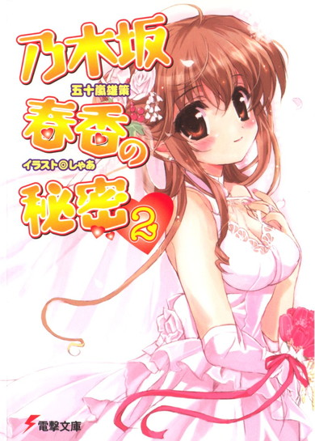
乃木坂春香の秘密②
容姿端麗頭脳明晰才色兼備。学園には会員数が三桁を超すファンクラブがあって、『白銀の星屑』の二つ名で呼ばれる生粋のお嬢様、乃木坂春香。そんな彼女がひた隠しにしている秘密を共有してしまった時から、俺たちの少しばかり不思議かつ複雑な関係が始まったのだ。
そして、春香と出会って初めての夏休みが訪れた。家でダラダラしたり、男友達の信長に買い物に付き合わされたりと、代わり映えのない夏休みを過ごすはずだったのだが......。今年は、春香のおかげで一味違う夏休みを体験することに。一番驚いたのは、なんと言っても春香と行った〝夏こみ〟というもので──。
お嬢様のシークレット・ラブコメ第二弾！
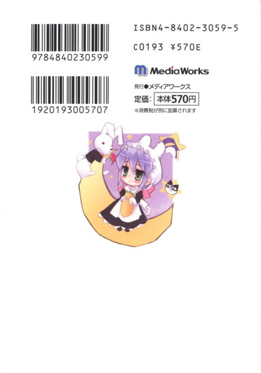
五十嵐雄策
五十嵐雄策の秘密②。10月３日生まれのＯ型。第４回電撃ｈｐ短編小説賞最優秀賞を受賞し、文庫デヒュー。本人の趣味は全て春香の特性として生かしています。司法試験の勉強しながら執筆活動も全力投球という、天性の天秤素質なのか優柔不断なのか大雑把なのか？
イラスト：しゃあ
しゃあの秘密②。編集さんやアシスタントに大不評の旧家を引き払い、引っ越しを敢行。新居は秋葉原から電車で20分。最寄り駅からバスに乗り換え終点までＧＯ。大絶賛不評中。
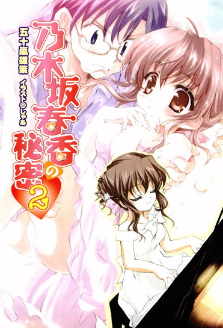
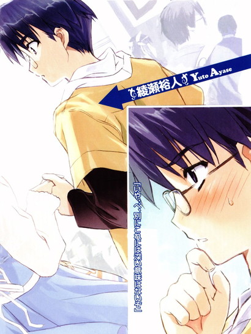
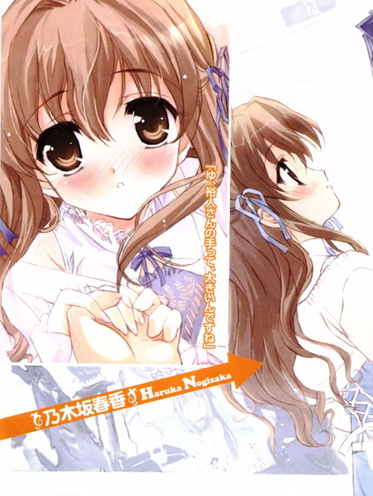
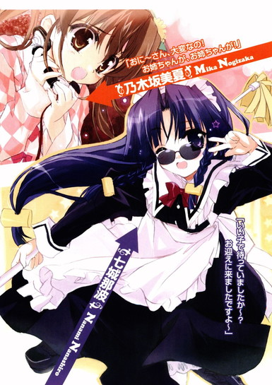
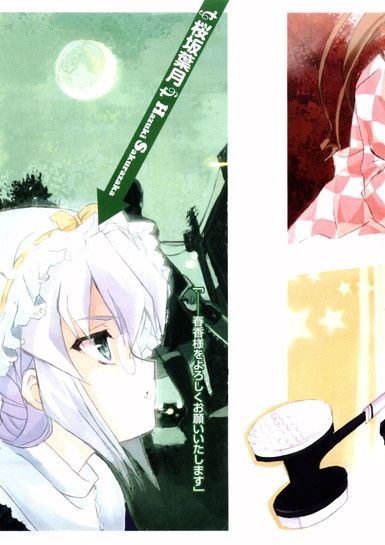
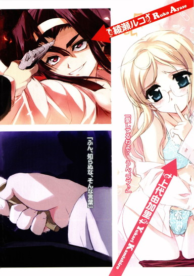
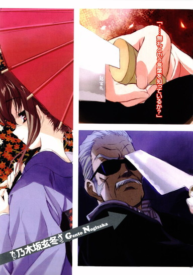
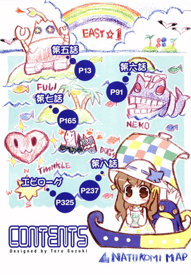
乃木坂春香の秘密 ２
夏休みだった。
別名、夏季自宅学習期間と銘打たれた七月後半から八月にかけての長期休暇。
まあ長期休暇とはいっても、実のところ俺にとっては学園が休みなだけで生活自体は日曜日やら普通の休日やらとそう変わらないものだったりもする。
家でナマケモノ（哺乳類アリクイ目）のようにゴロゴロとしたりルコに馬車馬のごとくこき使われたり信長に金魚のフンみたいに連れ回されたり、そんな代わり映えのしない毎日が続いて気付けば八月三十一日になっている。だいたいがそんなもんだ。
俺にとっての夏休みは、特別なものでも何でもない、ただの休日の集合体だった。
......去年まではな。
しかし今年の夏は一味違った。
八月に入ってから、荒れ狂うハリケーンのごとき勢いでいきなりやってきたハプニングの数々。代わり映えのしない夏休みが、一気に新鮮味溢れるモノとなった。
理由？ そんなものは決まっている。
俺を取り巻く状況において、去年と今年とで唯一にして最も大きく異なる点。
それは俺が春香と出会っていたってことだ。
乃木坂春香。
容姿端麗頭脳明晰才色兼備。学園には会員数が三桁を超すファンクラブがあって、『白銀の星屑』の二つ名で呼ばれる生粋のお嬢様。
そんなほとんど違う星の住人みたいな存在の春香と、取り立てて特徴のないこの上なく一般庶民な俺が知り合うこととなったのは、今から約四ヶ月前のことである。春香がひた隠しにしていたある秘密を俺が知ってしまったことから、俺たちの少しばかり不思議かつ複雑な関係が始まったのだ。
この四ヶ月、春香と春香の秘密・及びそれを巡る人々との間では様々な出来事があった。
〝図書室半壊事件〟・〝初めてのお買い物〟・〝乃木坂邸での勉強会〟・〝カタログ露出事件〟、その他もろもろ。
それまで体験したことのない日常のオンパレード。
春香と出会って以来、俺の退屈な日常は確実に変化したと言える。
そして。
どうやらその変化ってやつは、夏休みにおいてもばっちり適用されるものであったらしい。
第五話
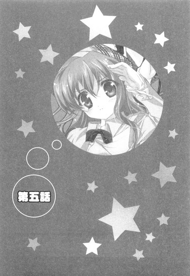
０
八月の頭の月曜日。
外ではセミがじーじーじーじーと狂ったように鳴きまくっていて、蝉時雨というかもうほとんど蝉豪雨といった風情であり、はっきりいってやかましいことこの上ないのでいっそのことそこら中の木々にホースでもって水でもぶっかけて回ってやろうかという思いにとらわれるような暑い夏の日だった。
俺は自宅の居間のソファの上で一人、ごろごろだらだらとテレビを見ていた。
「ふぁ......」
ヒマだった。
時間を持て余してペットの世話に一日の大半を費やす有閑マダムくらいにヒマだった。
夏休みに入って早二週間。初日に春香の家に行って以来、特に大きなイベントもなくだらだらとした日々が続いている。
ここ最近でやったことといえば、幼馴染である朝倉信長にゲームを買いに行くのを付き合わされたり、マンガを買いに行くのを付き合わされたり、ＤＶＤを買いに行くのを付き合わされたりしたことくらい。......なんか見事に全部、信長絡みだな。
いや夏ってこういうもんじゃないだろ？
女の子と海やプールに行ったりだとか、お祭りに行ったりだとか花火をしたりだとか、もっとこう、迸る青春を感じさせるイベントがあってもいいんじゃないのか？
とは思うのだが、思ってみたところで現実は変わらない。
現実の俺の夏休みは、信長に引っ張り回されたり、炊事洗濯掃除をしたり、飼っているミドリガメ（名前：ビッグガメラ）の世話をしたりなどがその八割を占めるという、自分で言うのもアレだがきわめて地味なものなのだ。......春香も、あれから連絡くれないし。まあお嬢様で才色兼備で『白銀の星屑』の二つ名で呼ばれるくらいの春香だから、夏休みとはいえ色々と忙しくて俺なんかに構ってるヒマがないだけなのかもしれんが。
「ふぁ......」
俺はソファの上で再度、大きなアクビをした。
サウナのように暑い外に比べて、エアコンの効いた室内は天国のように快適である。
テレビでは毎年恒例の怪奇特集が行われており、中年の司会者がＵＦＯの信憑性についてむやみやたらと熱い口調で語っていた。「──というわけでアメリカでは、宇宙人と遭遇した人のところにはどこからともなく黒服のエージェントたちがやって来てその記憶を抹消するという──」
と、その時だった。
くっくどぅ～どぅ～どぅ～～～～～～～～。
玄関の方から、そんな異音が飛び込んできた。
何度聞いても脱力すること請け合いのとてつもなくマヌケな音。
いや......説明するのもアホらしいんだが、あれはチャイムの音なのである。「普通の音には飽きた。外国産ニワトリの鳴き声がいい」とか言い出したうちの姉上様が、少し前に俺に命令して付け替えさせた代物だった。......ほんと、何考えて生きてるんだろう。というか変えたいなら自分で変えろ。
まあそんな限りない身内の恥はともかく。
今、この家には俺の他に人はいない。
両親は仕事で忙しくもともとほとんど帰ってこないし、チャイムの音を変えさせただれかさんは朝からどこぞの音楽教師の家に遊びに行ってそのままだった。
くっくどぅ～どぅ～どぅ～～～～～～～～。
よって必然的に、応対に出なければならない義務は俺に課せられることになる。どうせ勧誘か何かだろうが、宅配便とかの可能性もないわけじゃないので出ないわけにもいかない。
くっくどぅ～どぅ～どぅ～～～～～～～～。
そんなことを考えている間にも、間の抜けた音は断続的に響いてくる。あー、もう鬱陶しい。今出るからちょっと待て。
玄関に向かうべく、俺は満腹のシロクマのようにのっそりとソファから起き上がろうとして──
ドガン！
いきなり居間のドアが勢いよく弾け飛んだ。
「なっ......!?」
あっけに取られる俺の眼前でドアが発泡スチロールのように高々と宙を舞い、そのままテレビにぶつかってもろともに床に落ちた。
「はじめまして～、綾瀬裕人様ですね？」
そしてやたらと明るい声とともにドアのあった場所から現れたのは......真っ黒なサングラスをかけたメイドさん（ノーマルヴァージョン）だった。その手には何やら巨大なハンマーのようなものを持っている。
「いい子で待っていましたか～？ 那波さんが、お迎えに来ましたですよ～」
「......」
「何度か呼び鈴を鳴らしたものの、お返事がないようなので、少々乱暴ですがこじ開けさせてもらいました～」
「......」
こじ開けたって......いやこれ、どう見てもそんなかわいいもんじゃないだろ。明らかに吹っ飛んでたぞ？
メイドさん（サングラス付き）が俺を見た。
「ええと、お話は聞いていますよね？ すみませんが、今から私といっしょに来ていただきますよ～」
「......お話？」
いったい何のことだ？ あいにく記憶力にはシャモほどしか自信はないが、それでも見知らぬメイドさん（サングラス付き）にいきなり自宅の居間にまで不法侵入されるお話などきれいさっぱり聞いた覚えがないと断言できる。しかもこのメイドさん、破壊したドアについては完全にスルーだし。
俺の反応に、メイドさん（サングラス付き）は小首をかしげた。
「あらら？ おかしいですね～。う～ん。どっかで手違いがあったのかな？──えっと、まあいいです。あんまり時間がないようなので、とりあえず来ちゃってください」
メイドさん（サングラス付き）がぱちりと指を鳴らすと、いきなり左右から二つの黒い影が飛び掛かってきた。黒地に白のエプロンドレス......って、こっちもメイドさん!?驚いていると、俺の身体はあっという間に二人のメイドさんに抱え上げられてしまった。どういうワザを使っているのか、まったく抵抗ができない。
「タ、ターゲット、確保しました。い、いかがいたしましょうか、那波さん」
ロングヘアーにメガネをかけた気弱そうなメイドさん（Ａ）が、メイドさん（サングラス付き）に問う。
「え～と、そうですね......車まで運んじゃいます。失礼のないようにしてくださいね」
「りょ、了解いたしました」
「裕人様、失礼いたします」
もう一人の、ポニーテールのメイドさん（Ｂ）がそう言って歩き出す。
そのまま引越し荷物のように運ばれていく俺。
な、何だいったい？ 誘拐？ 人さらい？ＭＩＢ？
ワケが分からないまま俺が連れて（運んで）いかれた先には──
──真っ黒なロールスロイスがあった。
それ一台でおそらくルコ所有のボロ車が百台以上買えるであろう、十円キズに狙われ易いランキングナンバーワン（俺内）の最高級車。
「それではどうぞこちらに～」
メイドさん（サングラス付き）によって黒光りするドアが開かれ、そのまま俺は有無を言わさず車の中に押し込められる。どさり。それと同時に、ロールスロイスは静かな排気音とともに動き始めた。
ここまでの所要時間、僅か三分。
見事なまでの人さらいの手際である。
「ほんと何なんだいったい......」
まったくもってさっぱり状況がつかめず暗闇の中に放されたアホウドリみたいに混乱する俺に。
「こんにちは、おに～さん♪」
突然、声がかけられた。
「ひさしぶりだね～、一ヶ月ぶりくらい？ 元気してた？」
ものすごく聞き覚えのある舌ったらずな声。
振り返ってみるとそこには──
「み、美夏？」
にっこりと笑ってウインクをする、乃木坂家の次女の姿があった。
「ん？ な～に、その真っ昼間にドラキュラでも見た牧師さんみたいな顔。う～ん、かわいい美夏ちゃんに会えて嬉しいのは分かるけど、ちょっとリアクション大きすぎかな～」
「......」
──いや、何で美夏がここに？
何が何だか全然分からずに停止する俺をヨソに、美夏は続ける。
「それより聞いたよ～、この前わたしが奈良に狩猟に行っていなかった時に、うちに遊びに来たんだってね～。部屋でお姉ちゃんと二人きりでいいムードになってたとか？このこの～、おに～さんもやるじゃん」
「......」
「この分だとおに～さんがお義兄さんになる日も近いのかな～。あ、ちなみにこれ、その時のお土産ね」
ぽん、と手渡されたのは奈良名物の鹿センベイ。......鹿センベイ？
「......」
「え～と、おに～さん、物をもらったらちゃんとお礼くらいは言うべきだと思うよ？」
「............え？ あ、ああ、さんきゅ──って、そうじゃない！」
ようやく我に返り、俺は人差し指を左右に振る美夏に突っ込みを入れた。
ここにいるということは、つまりこの人さらい（及び不法侵入、器物損壊）の首謀者は美夏ということになる。いきなりメイドさんを使って人を拉致しておいて鹿センベイも何もあったもんじゃないだろ。
だが美夏はあっけらかんとした顔で。
「ん？ そんなに興奮してどしたの？叫ぶほど鹿センベイが嬉しかったとか？うんうん、八つ橋にしようか小一時間くらい迷ったんだけど、こっちにして正解だったな～」
「......いや、そこは迷わずに八つ橋を選ぶとこだと思うぞ」
三秒で即決する場面だ。
「そかな～。鹿センベイ、美味しいよ？」
「そういう問題じゃなくてだな......ていうか、ひょっとして食べたのか？」
「うん。美味しそうだったから」
満面の笑みを浮かべる美夏。
一瞬情景を想像する。奈良の鹿だらけ公園（正式名称は忘れた）で、たくさんの鹿といっしょに鹿センベイを美味しそうにむしゃむしゃと食べる美夏の姿。
......どういうお嬢様だ。
って、また話が逸れたが、俺が訊きたいのはこんなこと（鹿センベイについての考察）じゃないんだよ。
「何で突然こんなことを──？」
「こんなこと？」
「ああ、こんな人さらいみたいな......」
というか客観的に見たらまんま人さらいだが。
俺の疑問に、美夏は不思議そうにこう答えた。
「ん～、おに～さんが何言ってるんだかいまいち分かんないんだけど......わたしはおに～さんを迎えに来ただけだよ？これからお姉ちゃんのピアノのコンクールに行くから」
「ピアノの、コンクール？」
って、春香の？
「うん、そ。もちろんおに～さんも応援に行くでしょ？」
「そりゃあ......」
春香のピアノコンクールである。それが行われるというのなら何を差し置いてでも、それこそ姉とその親友を質に入れてでも駆けつけるだろう。そのこと自体はもう決定事項である。完全決定事項である。
だからそれ自体はいい。いいんだが......
ただ問題は......その話を初めて聞いたのが、今まさにこの場所（ロールスロイス内）この時間（コンクール当日の昼下がり）だということにある。いきなりすぎることこの上ない。普通こういうことは、最低でも三日前くらいには伝えておくもんじゃないのか？
その旨を訴えると、美夏は心外そうに頬を膨らませた。
「え～、わたし、ちゃんと言ったよ？ えっと、一昨日のお昼頃だったかな、お姉ちゃんが忙しかったみたいだから、わたしが代わりにおに～さんの家に電話したんだけど」
「一昨日？」
記憶を手繰る。確かその日は、信長に付き合わされて新宿で『はにかみトライアングル２ｎｄシーズンＤＶＤ第一巻初回限定フィギュア付きヴァージョン・タイプＮ』（長い......）とやらの探索をしていたはずである。
「うん、でもおに～さん、いなかったよね。だから電話に出たおね～さんに、伝えておいてくれるように頼んどいたんだよ。『明後日、お姉ちゃんのピアノのコンクールがあるから、お昼くらいに迎えに行くんでよろしく♪』って」
「......おねーさん？」
「うん。なんか武士みたいな喋り方する人」
......ルコか。
しかしやつとは昨夜と今朝に会っているはずだが、そんなことは一言も言っていなかった。台所にある家族間連絡用のホワイトボードにも何も書かれてなかったし、メールでもそんな内容のものは──
ズズズズーン♪
と、その時、携帯電話が不気味な音で鳴り響きメールの着信を告げた。『ワルキューレの騎行』。そこに書かれていたのは──
『今思い出したのだが、そういえば今日の昼頃に、お前を迎えにだれかが来るそうだ』
遅いわ！
思わず携帯を床に叩きつけたくなった。......あのバカ姉。
しかもこの人、電話がだれからかかってきたのかすらもまともに認識していない。電話の応対として下の下、最低最悪。まだ幼稚園児の方がマシな応対をするってレベルである。......何でやつに社長秘書なんて仕事が務まってるんだ？そんなに人材不足なのか？
極めつけに。
『ＰＳ．今晩は鍋が食べたい。カニ鍋がいい。松葉ガニだ。由香里も連れていくから七時までに用意しておけ』
なんて書いてあるのがますます腹立たしい。というか夏真っ盛りのこの時期にカニなんか手に入るか！
携帯を握り締めながら、やるせなさに打ち震える俺を見て美夏が一言。
「う～ん、おに～さんも色々苦労してるんだねえ......」
中学生に同情された。なんか、ものすごくかわいそうなモノを見る目だった。うう......
「ま、でもそれはそれとして」
荷物を横にどけるジェスチャーをする。
「とにかく、そうゆうわけで今からお姉ちゃんのコンクールに向かうけど、い～よね？」
「......りょうかい」
まあもう今さらあのアホ姉についてとやかく言ってもしかたがない。言ってどうにかなるものならとっくにやっている。とりあえずは、今日俺が家にいただけでもよしとしよう。
......というか、正直そう考えないとやってられない。
そんなわけでロールスロイスに乗せられて十五分。
「──それで、この人は？」
いつもの無口メイドさんの代わりに、さっきから美夏の横でにこにこと笑っているメイドさんに目を遣る。ちなみにこの人、俺を逮捕・連行してきたメイドさん実行部隊の主犯格でもあった、
「あ、そっか。おに～さんはまだ那波さんのこと知らなかったっけ？」
美夏がぽん、と手を打つ。
「那波さん？」
そういえばさっき自分でそう名乗っていたか。だけど俺が会ったことのあるメイドさんなんて、アキハバラのネコミミメイドさんと乃木坂家の無口メイド長さんくらいしかいないため、知っているわけがない。
「うん、七城那波さんっていって──」
「あ、その先は私が～。綾瀬裕人様、改めてはじめまして～。乃木坂家メイド隊序列第三位の七城那波と申します」
メイドさんが移動中の車の中にもかかわらず、スカートを翻しくるりと回転して優雅に一礼した。......メイド隊？
「裕人様のことは春香様、美夏様、葉月さんからよ～く伺っていますよ」
うふふ、と含み笑い。いったい何を伺っているのかがかなり気になるところである。
「那波さん、普段は葉月さんの補佐をしてる人なんだよ。うちのメイドさんの中でもかなり古株で、わたしたちも昔からお世話になってるの。葉月さんは昨日からお姉ちゃんの方に付いて行っちゃってるから、わたしには那波さんが付いて来てくれたんだ～」
美夏がそう付け加える。
どうやら能天気な見かけによらず、けっこう偉い人らしい。
「以後お見知りおきをお願いしますね～。気軽にナナちゃんとお呼びになって結構ですので」
「......よろしくお願いします。那波さん」
さすがに自分よりも年上の妙齢の女の人に〝ちゃん〟付けはできない。あのダメダメ音楽教師にすらいちおう〝さん〟付けなくらいだし。
「うーん、裕人様、お堅いんですね。ストイックなのはいいですけど、ある程度フレキシブルじゃないと女の子にもてませんよ～」
いたずらっぽく笑う。
というか、またこっちはこっちでやたらとフレンドリーなメイドさんだな。あっちの、目の前で銀行強盗が銃を乱射していても顔色一つ変えなさそうなアンフレンドリーなメイド長さんとは、両極端もいいところである。
「おに～さん、何だかんだでけっこう真面目だからね～。ま、それがいいとこなんだけど。あ、そうだ、どうせだからみんなで鹿センベイ食べようよ。まだ着くまで時間かかるし。飲み物もあるよね？」
「はい～。砂糖水からロマネ・コンティまで、何でもありますよ～」
砂糖水って、だれが飲むんだ？ スズムシ？それ以前に、鹿センベイを食う気か？
「じゃあね～、え～とわたしはココアでお願い。鹿センベイはちょっと塩辛いから甘いのが合うかも」
「りょうかいしました～」
......普通に食う気らしい。
「おに～さんはどうする？」
「......俺はお茶だけ」
鹿センベイは断じていらん。
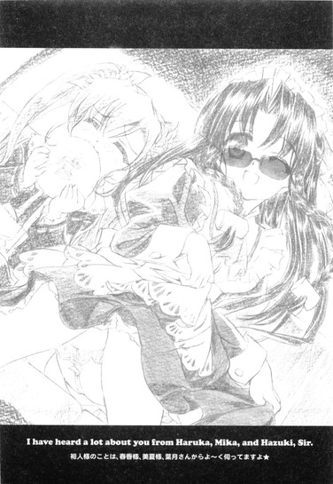
まあそんな感じで、しばらくの間ロールスロイスの中で三人、鹿センベイをメインとしたオヤツの時間を過ごしていて。
「──なあ、そういえば」
「ん？」
ふと思いついたことがあったので、小声で美夏に尋ねた。
「......那波さんって、春香の趣味のことは知ってるのか」
春香の趣味。
およそ普段の春香からは想像がつかないソレは、俺と春香が知り合うきっかけとなったものでもある。これを知っているか否かで、微妙に那波さんに対する今後の接し方が変わってくるかもしれないんだよな。
ゆえに慎重を期して訊いてみたのだが。
「うん、知ってるよ」
美夏は実にあっけなくうなずいた。「ね、那波さん」
「はい？ 何のお話ですか」
「ん、お姉ちゃんの趣味のこと」
「ああ～。ええ、よ～く知っていますよ」那波さんが大きく首を振った。「とってもかわいらしいですよね～、うふふ」
「てゆ～か、あのお姉ちゃんの挙動でバレないわけないじゃん。お祖父ちゃんも知ってるし、たぶんうちで働いてる人たち全員が知ってるんじゃないかな？気付いてないのはお父さんとお母さんくらいだよ。──ま、相変わらずお姉ちゃん自身は隠し通せてると思ってるみたいだけどね」
......ナルホド。ま、それもそうだな。春香の、あの隠しているつもりでちっとも隠れていない隠し方では隠せるものも隠せないだろう（分かりにくい......）。学園でいまだに明るみに出ていないってのは、ほとんど奇跡みたいなもんである。......これからもやっぱり、俺が色々とがんばらないとマズイんだろうな、きっと。
妙に悟った気分で窓の外に目を遣ると。
「ん？」
いつの間にかロールスロイスが高速道路に入っていることに気付いた。
辺りを走る他の車をずんずんと抜きつつ、峠でブイブイ言わせてるドリフトカーのようにすごいスピードで疾走している。
......どこまで行くつもりなんだ？
微妙に不安になった。
コンクールというからてっきり都内のどこかに向かっているものかと思っていたが、この様子だともしかしたら他県または地方にまで行くつもりかもしれん。だとすると今日中に帰ってこられるのかどうかかなり微妙である。いちおう夜には腹を空かせた二匹のワンちゃん（実際はそんなかわいいもんじゃないが）がやって来るらしいので、できればそれまでに帰りたいんだがな。
「なあ、ピアノのコンクールってどこでやるんだっけ？」
「あれ、お姉ちゃんから聞いてない？」
尋ねると、美夏が鹿センベイをぱりぱりやりながらまばたきをした。
そして春香によく似た笑顔で、にっこりとこう言ったのだった。
「ロンドン、だよ♪」
１
まさか生まれて初めての海外旅行及びファーストクラス体験を、部屋着のジャージにスリッパをつっかけただけという世にも庶民な格好で迎えることになろうとは夢にも思わなかった。......というか夢であってほしかった。
流れる空気すらもどこかハイソに感じられる、ファーストクラスエリア。
周りを見渡せばオシャレなスーツに身を包んだジェントルマンやら高価そうな服を着た貴婦人たちばかり。当然ジャージにスリッパなんていう、カジュアルというか単に生活臭を感じさせる格好をしているやつなんて俺しかいない。連れられている犬までもが、おそらく俺の余所行きの服よりも上等な生地のお召し物をまとっているところがまたなんともヤな感じに劣等感をかきたててくれる。
この中で一人俺だけが、浮き袋に空気を取り込みすぎて海面上に出ることを余儀なくされた魚みたいにぷかぷか浮いていた。浮きまくっていた。......いやもうほとんど羞恥プレイの域だな、これは。
「ま、まあまあ、おに～さんのカッコも、個性的でいいと思うよ？」
うなだれる俺を見かねたのか、美夏がそう言う。
「個性的？」
「うん、すっごく。ミニチュアダックスフントの群れの中に一匹だけフレンチブルドッグが混じってるみたいな感じ」
「......」
ちっともフォローになっていなかった。フレンチブルドッグって......
そして謎なことが一つ。
普通、外国に行くにはそれが旅行であれ永住であれパスポートというものが必要となるのであり、さらに海外未経験の俺は当然そんなものを持っていなかったわけだが。
なぜか現在、俺の手元にはそのパスポートなるものがあった。......俺が撮った覚えのない写真付きで。
その写真の出所がきわめて謎であるし、くわえて確かパスポートをとるにはけっこう厳格な手続き（本人確認とか）が必要なうえに申請から発行までに最低二週間以上はかかったような気もするんだが......
那波さんに尋ねてみたところ。
「それは企業秘密です～」
との答えが返ってきた。いや、だから企業秘密って......
「企業秘密です～」
「あの」
「企業秘密です～」
「だから」
「企業秘密です～」
「......もういいです」
そういうことらしい。
どうやら乃木坂家のメイドさんの間には、触れてはいけないダークグレーな領域があることだけはよく分かった。
やがて飛行機はあっという間にイギリスのヒースロー空港へと降り立ち。
そこからまた、用意されていた乃木坂家所有のリムジンでロンドンへと移動した。
途中、名前しか聞いたことのないような名所を何箇所か通り過ぎたが、その都度に美夏が解説をしてくれた。
「ん～と、あれはね、タワーブリッジだよ。某マスク超人の必殺技の由来になったとこ。あっちのアレは大英博物館。ロゼッタストーンとかで有名だったりするかな～。でねでね、あそこに偉そうに建ってるのがバッキンガム宮殿で──」
「詳しいな......」
旅行会社の添乗員も真っ青の説明っぷりである。
「そりゃそだよ～。だってわたし、イギリスに来るのこれで十一回目だもん」
美夏がさらりとそう言った。
いや、それって俺が国内旅行（修学旅行等含む）に出かけた回数とほぼ同じなんだが......。
「他にも色々行ったよ。イタリアは十五回あるし、フランスは十二回、ドイツも九回あるし、オーストリアは十九回......あ、アメリカは三十七回あったかな～。その他も色々あって──」
「......」
得意げに語る美夏（十四歳）。
さすがは天下の乃木坂家のお嬢様である。この歳にして、海外旅行などほとんどご近所に出かけるのと同じ感覚らしい。
──にしても、まさかイギリスくんだりにまで来ることになるとはね。
窓の外を流れる景色を見ながら思う。絵ハガキやＴＶでしか見たことのないような名所を、リムジンに乗って生で見ているなんて、数時間前の俺には想像もつかなかった。春香と知り合って以来、それまで味わったことのなかった新しい体験が次から次へと目白押しである。ほとんど息をつくヒマもない。まあ、楽しいからいいんだが。
コンクールが行われるというヴィクトリア・ホールは、ロンドンの街の中心部にあった。
古びてはいるがどこか味わいのある建物に囲まれて、城みたいに巨大なホールがリムジンから降りたばかりの俺たちを見下ろしている。
ちなみにここまでの所要時間は、約十四時間。
その割には、何だかロンドンまで来たという実感が全くないのは......おそらく、というか確実に、この近所のコンビニに出かける時と変わらない格好のせいだとは思うんだがな。
「こちらでございます～」
那波さんの先導に従って、ホールの中へと入っていく。
外観からある程度予想はできていたことだったが、ホールの中もすごかった。
高い天井。ゆうに千人は入れるんじゃないかってくらいの客席。辺りに置かれた豪華な調度品の数々。さらには流暢な英語で談笑するタキシードやドレス姿のセレブな人々など。どれもが普段の俺とは無縁のものばかりだ。
しかも俺たちが通されたのは、そのエグゼクティブなホールの中でも一際目立つ、いわゆるＶＩＰ席のような場所だった。
「すげえ......」
ホールの三階部分にせり出すようなかたちで設置されている席。ほとんど謁見席みたいな感じで、ホール全体が一望できる絶好のポジションである。
「えっと、おに～さんの席はそこね。わたしの隣」
「おお」
美夏が指差した先には、なんか王侯貴族が座るようなブルジョワなイスが三つほど並んでいた。座ってみると、まるで羽毛布団を十枚くらい積み重ねたようにふかふかだった。
「もしもステージが見にくいようでしたら双眼鏡をご用意いたしますが～？」
「ん、だいじょうぶじゃないかな？ おに～さんは？」
「こっちも大丈夫だ」
視力があんまり良くない俺でも、ここからならピアノの置いてあるステージを鮮明に見ることができる。まさに絶景。
「裕人様、なにか飲み物でもお飲みになられますか～？」
手すりから身を乗り出して階下を眺めていると、那波さんがそう尋ねてきた。
「え、飲食物アリなんですか？」
普通こういうセレブな場所は、飲食物及びペットは持ち込み禁止だと思うんだが。
那波さんがうなずく。
「ええ、本来ならばダメなのですが、この席は特別です。いちおうＥＸＳＳＳ（エグゼクティブトリプルエス）席なので。専用のバーカウンターもありますよ～」
「エ、エグゼクティブトリプルエス？」
「はい、エグゼクティブトリプルエスです～」
「......」
......そんな早口言葉みたいな席がこの世に存在するのか。というか俺たちが今いるここがそこなのか。
感心半分呆れ半分に、改めて自分のいる場所を見回す。
庶民の味方、立ち見のＣ席に真っ向からケンカを売っているといっても過言ではない席。
おそらくこんな席に座ることができることはこれから先そうそうあるまい。ならばせめてひと時の王様気分を味わおうと、俺はひじかけに腕を乗っけて大きく足を組んだ。おお、なんか世界が違って見えるな。
しばしの間、そんな束の間の似非ブルジョワ気分を味わっていて（ちょっと楽しい）。
ふと、あることに気付いた。
「あれ、那波さん、座らないんですか？」
さっきから見ているが、この陽気なメイドさんは美夏の脇に立ったまま一向に腰を下ろそうとしない。せっかく席があるんだから座ればいいのに。
すると那波さんはにっこりとこう答えた。
「どうぞお構いなく～。メイドが主人の横に座るわけにはいきません。メイド作法の基本中の基本です～」
「......そういうものなんですか？」
「ええ、そういうものなのです～」
とのことらしい。
言われてみれば、確かに葉月さんが春香たちの前で座ったところも見た記憶がないな。なるほど、あれはそういうことだったのか。
納得すると同時に、疑問が浮かんだ。
「──ん、でもだとしたら、席の数が合わなくないか？」
「え、どして？」
「いや、だって席は三つあるぞ？ ......あ、もしかして春香もこっちに来るのか？」
「ん～ん、来ないと思うよ」
美夏が髪の毛の先を指先でくるくるやりながら首を振った。
「お姉ちゃんは出場者だから専用の控え室があるし。今も葉月さんといっしょにそこにいるんじゃないかな？」
「だったら──」
やっぱりこの席の数はおかしくないか？
春香が来なくて、那波さんも座らないのなら、席は俺と美夏とで二つあれば足りるはずである。
なのに、席は三つ。
「......」
なんかヤな予感がした。
虫の報せというか雨の日だけ当たる天気予報というか......とにかくそういった類のモノ。そして毎回毎回ブルーなことに、こういう予感だけはすばらしいまでの的中率で当たってくれやがるもんなのである。
その予感に違うことなく。
「あ、それ、お父さんの席」
俺の疑問に、美夏は実にさらりと今日の天気は晴れですってくらいに軽くそう答えてくれたのだった。
「......お父さん？」
「うん、わたしたちのお父さん。あわふぁ～ざ～」
「......」
わざわざ英語に直した意味はさっぱり分からなかったが、とりあえず頭の中で美夏の言ったその単語の意味を考えてみる。お父さん。お父さんとは父親であり、美夏の父親ということは春香の父親でもあるということであり、そして春香の父親ということは......
──ってまさか、何回か春香の話に出てきたあのお父様!?あのお父様が、ここにやって来るってことか!?
いや、それってかなりシャレにならない事態なんじゃ......。少なくとも、のんびりとイスにふんぞり返って足なんて組んでる場合じゃない。
「美夏、もう来ていたのか」
現在の自分が置かれている状況がどういうものであるかということに俺が気付くのと、背後から声がかけられたのとはほとんど同時だった。
「那波くんも、わざわざごくろうだったな」
低く、威圧感のある声。
──こ、これって......
きりきりと、壊れたロボットのように後ろを振り返った俺の視界に飛び込んできたのは──鋭い眼光できれいに後ろに撫で付けられた髪、年齢を感じさせないがっちりとした長身を有する、壮年の男性だった。
「ああ、もしかして君が綾瀬くんかな。──葉月くんたちから話は聞いている」
男性がその雷神みたいな目をこちらに向けると、おもむろに太い腕をにゅっと突き出してきた。
「はじめまして。私は乃木坂玄冬。春香と美夏の、父だ」
春香たちの父親が、そこにいた。
２
席順は、ピアノが置いてあるステージから見て、左から春香父、美夏、（その斜め後ろに立っている那波さん）、俺の並びだった。
間に美夏たちが入ってくれているのがまだ救いとはいえ......かなりの緊張感である。生肉を両手に掴んで肉食獣の檻の中に入っているのと同じくらいの緊張感。なんせ態度次第じゃ、明日あたりにドーヴァー海峡の藻屑になっていてもまったくもって不思議じゃない。
ここはやっぱり、縄張り争いに負けた野良犬のように大人しく静かに従順に、ひたすら時間が過ぎ去るのを待つのが吉だろうな。少なくとも美夏がいるうちは、春香父の関心がストレートに俺に向くことはないと思うし（希望的観測）。
とか考えていると──
「あ、それじゃわたし、そろそろお姉ちゃんの様子見てくるね」
「!?」
──いきなり、美夏がとんでもないことを言い出してくれた。
「お姉ちゃん、どうしてるか心配だし。まだ本番まではけっこう時間があるから、控え室まで行ってくる」
「じゃ、じゃあ俺も......」
「あ、おに～さんはのんびりくつろいでてね。いちおうお客様なんだし」
言いかけた俺を笑顔で制し、美夏はぴょこんと席を立った。那波さんもカルガモのようにその後に続く。
ちょ、ちょっと待て。頼むから空気ってものを読んでくれ......
そんな俺の心からの叫びも空しく。
「またあとでね、おに～さん」
「きげんよう、です～」
二人の背中は階段へと消えていった。
「......」
「......」
当然のごとく、後に残されたのは俺と春香父の二人だけである。
「......」
「......」
「......」
「......」
空気が、冬眠前でたっぷりと脂肪をたくわえたヒグマみたいに重かった。
俺の両肩に、確かな重みをもってのしかかってきている。擬音にしてみれば「ずこごこごこごこごこご！」って感じだ。
「......」
「......」
......いや、俺にどうしろと？
本気で泣きたくなった。
地獄のような沈黙の中、俺は美夏（この際葉月さん、那波さんでもよし）が一刻も早く戻ってきてくれることを心から神様に祈った。
そんな時間がどれくらい続いただろう。
おそらく客観的には五分か十分かそんなもんなんだろうが、俺にとってはもう久遠とも悠久ともいえるような長い長い時間だった。
「......綾瀬くん、だったかな」
「は、はい」
春香父がその重い口を開き。
「君に少しばかり──」
ピリリリリリリ
だがそのまま何かを続けようとしたところで、タイミング良く（悪く？）携帯電話が鳴った。
「少し、失礼する」
どこか苦々しそうな顔で春香父が携帯を耳に当てる。
「──私だ」
低くよく通る声で、何事かを話し出した。
「何？ それくらい、私にいちいち訊かずにそちらでやっておけ！」
......や、殺っておけ？
「ああ、ああ、そうだ。不必要な物は（商品リストから）弾いて構わん。いつも言っているだろう、必要な物だけ残せばいい」
......ふ、不必要な者は、射殺いて？
「弾いた後の始末？ そんなもの、適当に（倉庫の隅にでも）沈めておけ」
......し、沈めておけ？ 東京湾？
「──以上だ。あまり私の手を煩わせるな」
ふう、とため息を吐き携帯をしまうお父様。
「すまなかったな。少し日本の方でごたごたがあったみたいでね」
「い、いえ............」
......抗争ですか？ とはさすがに訊けない。
「......」
「......」
で、再び沈黙。
だが今回、それは長くは続かなかった。
「──それで、綾瀬くんだったか」
春香父は真贋が微妙な骨董品の品定めをする鑑定人みたいな目で俺の顔を真正面から見据え、
「は、はい」
「君には少し訊いておきたいことが──」
「おに～さん！」
再び何かを言おうとして、今度は突然割り込んできた声に遮られた。
美夏だった。
いつ戻ってきたのか、美夏は活きのいい野ウサギのようにたたたっと駆け寄ってくると俺のジャージの袖を引っ張りながら言った。
「おに～さん、お姉ちゃんが呼んでるよ～。──って、あれ？お父さん、もしかしてお話の途中だった」
「──いや」
春香父が首を振る。「私は構わん。それより......春香が呼んでいるのか？綾瀬くんを？」
「うん。やっぱり本番前でがちがちに緊張してるみたいだから、おに～さんに会って落ち着きたいんじゃないかな。ま、控え室は関係者以外立ち入り禁止なんだけど、おに～さんならだいじょぶでしょ。......あながち無関係でもないし♪」
意味ありげにこっちを見る美夏。
「えへへ～、おに～さんはお義兄さん候補だもんね～」
「..................お義兄さん？」
い、いや......お父様の閻魔大王みたいな視線がすごく怖いんですが。
「ほらほら～、早く行こうよ～。おに～さ～ん」
美夏がほとんど抱きつくようなカタチで俺の全身を引っ張る。柔らかい感触が腰の辺りに触れ、さらさらの髪からは柔らかく甘い香りが鼻をくすぐり......
「......」
そしてお父様の視線はさらに強烈に、ほとんど圧縮空気砲のように物理的圧力を伴って俺にのしかかってきた。
..................俺、もしかしたら明日の朝にはもうこの世にいないかもしれないな。
３
春香の控え室は、ホール地下一階の一番奥にあった。
美夏と那波さんに案内されてそこまで行くと、部屋の前にはよく見慣れた無口メイドさんが置物のように立っていた。
「連れてきたよ～、葉月さん」
「......お久しぶりです、裕人様」
葉月さんは俺に気付くと、相変わらず表情一つ変えずにぺこりと頭を下げた。那波さんと並ぶとその無愛想さがよけいに目立つな。中身は決して悪い人じゃないのに。
「いえ、こちらこそ。──それより、春香が呼んでるって？」
「はい。本番前にどうしても裕人様に会いたいと仰っています。ひどく緊張してらっしゃるようで......」
「緊張？」
「ま、いつものことなんだけどね～」
美夏が肩をすくめる。
「ほら、お姉ちゃんって何かのイベントの前とかって色々と考え込んだり、念入りに準備するタイプでしょ？〝お買い物のしおり〟とかもそうだけど。だからこうゆうコンクールとかの前は、いっつも考えすぎて緊張しっぱなしなんだよね～。お姉ちゃんなら、今日くらいのレベルのコンクールだったら適当にやっても余裕で一位なのに」
まあ、それは何となく分かる気がするな。要するに春香は何事にも一生懸命であり、いい意味で力を抜くのが苦手なんだろう。器用に見えて実はかなり不器用だからな。
「でも今回はいつもよりひどいみたい。なんか気合の入り方が違うから、そのせいで逆にがちがちになってるってゆうか。ま、それでもお姉ちゃんならだいじょぶだと思うけど」
美夏がうなずく。
「でも分かんないな～、なんで今回に限ってあんなにやる気なんだろ？」
それは俺には分からないが、きっと春香なりに何か事情があるんだろう。
ともあれ、この場において俺にできることは。
「それじゃ、俺は世間話でもして春香の緊張を少しでも解いてやればいいのか？」
「はい」
葉月さんがうなずく。「お願いします。私たちは、三階に戻っていますので」
「ご指名だもんね～、おに～さん」
「お熱いですね～。ごちそうさまです。ひゅ～ひゅ～」
美夏と那波さんは二人そろってそんなことを言っていた。......今気付いたが、なんかこの二人、性格似てるな。
「密室で二人きりだからって、ヘンなことしちゃダメだよ～」
「いちおう監視カメラは付いていますからね～」
んなことするか。
そんな実に無責任な声援を背に控え室に入ろうとした俺を、葉月さんがそっと呼び止めた。
「裕人様」
他の二人とは違う真剣な表情で、深々と頭を下げる。
「春香様を、どうかよろしくお願いいたします」
「あ、裕人さん！」
控え室に入るなり、親犬を見つけた仔犬みたいな顔をして春香がとてとてと駆け寄ってきた。
「わ～、来てくださったんですね。ありがとうございますっ」
そのまま俺の手をぎゅっと握る。
「すみません、ここのところコンクールの練習で忙しくて全然ご連絡ができなくて......ほんとは裕人さんとお話したかったんですけど」
約二週間ぶりに見る春香は、純白のドレス姿だった。
今までピアノを弾いていたのか春香の顔は少しばかり上気して赤くなっている。さらにそのドレス（コンクール用の特注らしい）というのが腕の動かしやすさを優先してのものなのか肩を出した仕様になっていて、おまけに胸のラインがキレイに出るデザインになっていて......その、なんというか、ちょっとだけ色っぽい。
心臓が、勝手にどくどくと振幅運動を開始する。......いかんいかん、これじゃ美夏たちのことをとやかく言えない。
「？ あの、私、何か変ですか？」
春香が小首を傾けながら見上げてくる、
「い、いやそんなことは」
どちらかといえば変なのは俺の方であって。
「？」
「と、とにかく、気にしないでくれ」
何となく気恥ずかしくなって、視線を周囲に散らした。
控え室は、二十畳くらいの広さだった。
入り口から向かって部屋の左側の壁には一面に鏡が張られ、その前には大きなグランドピアノが置いてある。
「あ、あー、すごいピアノだな」
「？ ええ、そうですね」
春香がちょっと不思議そうに答える。
部屋の中には、他にもクローゼットやら何やらがあり、春香の私物が置かれているようだった。
と、そこになんか見覚えのあるモノを発見した。
積み重ねられている楽譜の上。ちょうどピアノの鍵盤から見て真向かいになる位置。
蒼色の髪をした直径十センチくらいの女の子が、スカートの裾を指でちょこんと摘んでぺこりと頭を下げていた。確かこれって......
「あ」
俺の視線に気付いた春香が、ささっと恥ずかしそうにフィギュアを隠した。
「あ、あのこれは......その、お守り代わりに持ってきたもので──」
なぜかラズベリーみたいに真っ赤になる春香。
「で、ですからその、特に深い意味はなくて......い、いえ、意味が全くないってわけじゃないんですけど......」
「ああ、分かってるって」
「え？」
「春香はその、何だっけ、〝はにトラポーズ〟？のフィギュアがお気に入りなんだろ？」
「あ、え、はい」
おそらく春香のことだから、こういう緊張する場面でお気に入りのグッズを手元に置いておきたかっただけなんだろう。別にそんな言い訳しなくてもいいのにな。
俺がそう言うと、春香は何だかものすごく複雑そうな表情になった。
「......それだけじゃ、ないんですけど。だってこれは裕人さんが──」
「？」
「な、何でもないです」
ものすごい勢いでぶんぶんと頭を振る春香。「き、気にしないでください。気にしちゃダメです」
「？ま、いいけど」
何をそんなに慌ててるんだかさっぱり分からん。
俺は部屋の隅に置かれていたパイプイスに腰を下ろした。
しかし春香、思っていたよりも元気というか、普通だな。あんまり緊張しているようにも見えないし。これなら特に心配しなくても大丈夫だったかもしれんな。
──などと考えたのは、大きな誤りであったとすぐに気付かされることになった。
五分後。
「え、ええとここがこうなって......」
鍵盤の前で、春香が締め切り直前の漫画家みたいにうなっていた。
「こ、こっちがこうで......」
その細い指が頼りなく鍵盤の上をふらふらとさまよう。
ちょっと前から練習を始めている春香だったのだが......見るからに調子が悪そうだった。
素人の俺が聴いても分かるくらいにミスが目立つ。身体の動きも、なんかゼンマイが切れかけた上に油不足のブリキのオモチャみたいにがちがちだし。
「あ、あれ、ここはどうでしたっけ？ え、ええと......」
鍵盤を見る目が完全に泳いでいる。......いや、本当に大丈夫なのか？
『だいじょぶだいじょぶ。本番前はあんなだけど、何だかんだでお姉ちゃん、いっつも一位取ってるんだから』
と美夏は言ってはいたが、あんな姿を見ていると何だかこの上なく不安になってくる。
ここは一つ、春香の緊張をほぐすために何か小粋なジョークでも言おうか、それとも特技のオラン・ウータンのモノマネ（小学生の頃、ルコに無理やり仕込まれた）でもしようか悩んでいると
「す、すみません裕人さん。そこにある楽譜を取っていただけませんか？」
「ん、これ？」
「あ、はい。それです」
部屋の隅にいくつか重ねられて置かれていた楽譜。カバーがかけられているのでタイトルは分からないそれらを拾い上げ、春香に手渡す。
「お手数かけますです......」
春香はその中の一つを手に取り、譜面台に立てかけようとして
「あ、あああっ!!」
友達から二千円で売ってもらったハムスターが実はクマネズミであったことに気付いた時みたいな悲鳴をあげた。
「ど、どうした？」
「が、楽譜......間違えて持ってきちゃいました」
譜面台に目を遣ると、そこには『はにかみトライアングルＢＧＭ集』（タイトルの横には明らかに人体の限界を超えた不気味な動きをしている蒼髪の女の子？の手描きイラスト付き。......ま、まあ、これについては深くは語るまい）と書かれた楽譜があった。
......ああ。
確かに俺が見ても分かる。一目見ただけで瞬時に分かる。これは明らかに間違ったモノを持ってきたと。
「ど、どうしましょう？」
泣きそうな顔で春香が俺を見上げた。
「ないとまずいのか？」
「い、いえ、いちおう暗譜はしているので、だいじょうぶにはだいじょうぶだと思います。ただちょっとだけ、出だしのカデンツァ部分が不安なだけで......」
......それは結局、ないとマズイってことなんじゃないかと思うんだが。
「......春香、その楽譜のタイトル、何て言うんだ？」
「え、〝超絶技巧練習曲集〟ですけど......」
いつか春香の部屋で見かけた、あの楽譜にあるまじきすさまじいタイトルのやつか。
「分かった。春香はちょっとここで待っててくれ」
「え、 裕人さん？ ど、どこに行くんですか!?」
「すぐ戻ってくるから！」
不安そうな顔の春香を残して控え室を飛び出す。
とりあえずは葉月さんか那波さん、美夏に相談してみるべきだと判断した。もしかしたら予備の楽譜とかを持っているかもしれん。それでもダメなようなら、楽器屋や音楽ショップなどをを探すって手もある。英語には自信はないが......そこはまあボディランゲージとかで何とか。
しかし何にせよまずは葉月さんたちである。
葉月さんは三階のあのＶＩＰ席に戻っていると言っていた。美夏と那波さんもたぶんそこだろう。
ゆえに三階へと急ぐため、俺はダッシュで廊下を走り抜け階段前の曲がり角をカーブしようとして。
「──えっ？」
そこに人影があることに気付いた。
ドレス姿の女の子。
慌てて避けようとするが、物理法則上いったん勢いがついた物体は急には止まれない。
結果。
「うわっ！」
「きゃっ！」
俺はその女の子と見事に正面衝突した。女の子は腰から倒れたその拍子に持っていた荷物を辺りにぶちまけ、俺は廊下にしたたかに頭を打つこととなった。
「あいたたたた......な、何なのよ突然」
身体を起こしながら、女の子が顔をしかめる。
「曲がり角に全速力で突っ込んでくるなんて......信じらんないわ」
確かにそれはまったくもってその通りである。ここは素直に謝っておくべきだろうな。
「悪い。急いでて......じゃない、ええと──」
言いかけて、ここが日本でなくてイギリスであることを思い出す。
「あ、あいむそーりー？ はりーあっぷ？」
「は？ 〝急げ〟？」
「あ、ち、違ったか」
参考までに、俺の英語の成績は三である。......十段階で。
「あー、こういう場合は何て言うんだったけか。ほーるどあっぷ......は明らかに違うか」
「うん、それ確実にダウト」
「やっぱそうだよな。だったら──って、日本語？」
と、ここでようやく相手が日本語を喋っていることに気付いた（遅すぎ）。
「あれ、そういうあなたも日本人？ ──あっ」
俺の顔を見て、女の子がちょっと驚きの表情になる。
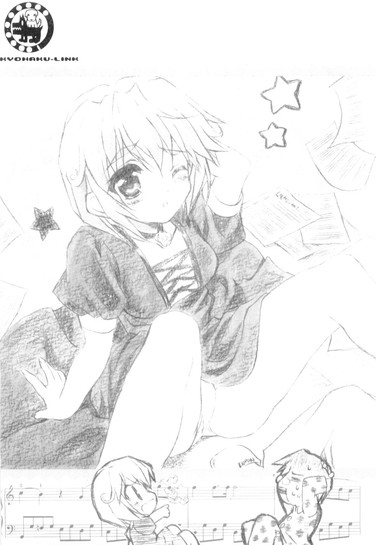
「ねえねえ、もしかしてキミ、乃木坂さんの関係者じゃない？」
「？ そうだが......」
「あ、やっぱり。さっき控え室に入っていくのが見えたからそうじゃないかって思ったんだ。へー、どういう関係なの？弟さんとかじゃないよね、顔、全然似てないし」
何やら一人で納得している女の子。春香の知り合い......なのか？
尋ねてみると。
「ああ、そういうわけじゃないのよ。乃木坂さんは有名人だから、あたしが一方的に知ってるってだけで」
との答えが返ってきた。なるほど。
「ところであたしは椎菜っていうの。天宮椎菜。キミは？」
「ん、俺？ 綾瀬裕人だけど......」
「そうなんだ。ま、ここでぶつかったのも何かの縁てことで。裕人......でいいよね？よろしく」
シャギーの入ったショートの髪を揺らしながら、にっこり笑って手を差し出してくる。いきなりの呼び捨てといい、かなりフレンドリーなタイプみたいだな。
「よろしくな」
俺は椎菜の手を握り返して、そのまま起き上がらせた。椎菜は満足そうに笑った。
「椎菜もコンクールに出るのか？」
「ん？ そうだよ。そうじゃなきゃこんなカッコしてこんなところにいないって」
ドレスの裾を摘み上げて片目をつむる。それもそうか。
「あたしにしてみれば、そんなカッコした裕人みたいなのがここにいることの方が驚きだって。なかなかいないよ、ジャージにスリッパ姿でヴィクトリア・ホールをうろついてる人なんて」
「これには深い事情があってだな......」
俺はここに至るまでの経緯（拉致→空港直行→ファーストクラス経由→ホール到着）を、簡単に椎菜に説明したところ。
「あはは、ウソばっかー」
と一蹴された。......まあムリない反応なんだが。
「で、裕人は何だってそんなに急いでたわけ？」
「あ」
言われて思い出した。そうだ、こんなところでのんびり談笑してる場合じゃない。早いところ葉月さんたちのところに行って楽譜を何とかしないと──
「悪い、ちょっと行かないとなんないところが──ん？」
そういえば、目の前にいるこのやたらとフレンドリー娘も音楽関係者なんだよな。ううむ、まさかとは思うが──
「あのさ、椎菜......」
「ん？」
とりあえずダメ元で、訊くだけは訊いてみることにした。
春香が言っていた楽譜の名前を口にする。すると。
「うん、持ってるよ。てゆーか、これだし」
散乱していた楽譜の一つを椎菜が手に取って見せてくれた。
「なに、もしかしてこれを探してたの？」
「ん、ああ」
「ふーん、貸してほしい？」
「そりゃあ......」
椎菜がにやっと笑って俺の顔を見た。「それって、乃木坂さんのため？」
「う......」
今知り合ったばかりだってのにイイ勘してる。それともそんなに顔に出ていたのか、俺？
ともあれここでヘタにウソを吐いても見透かされそうだったので大人しくうなずくと、椎菜は「へえ、そうなんだー」と意味ありげに笑い。
「いいよ、貸したげる」
あっさりと楽譜を差し出してきた。
「......いいのか？」
「うん。これ、あたしが今日弾く曲じゃないし」
「でもな......」
コンクールに出るのならいちおう春香とはライバルということになる。それなのにそんなに気軽にライバルに塩を送ってしまっていいのかと、多少疑問に思ってしまう。いや頼んだのは俺なんだけどな。
「いいっていいって。こんなことくらいで勝てないようなら、もともと勝てない相手ってことなんだから」
椎菜はひらひらと顔の前で手を振り。
「それにあの乃木坂さんに楽譜を貸せる機会なんて、めったにないしね」
こっちが拍子抜けするくらいに、あっけらかんとそう言った。
「──そっか。ならありがたく借りとく」
「あはは、ありがたく借りてください」
椎菜が笑う。
いいやつだな、こいつ。
「ほんと、さんきゅ」
椎菜に礼を言って、俺は急いで控え室へと戻った。
控え室に戻ると、ピアノの前にぽつんと座った春香が迎えてくれた。
「あ、裕人さん......」
群れから置いてけぼりにされた渡り鳥みたいな寂しげな目で俺を見る。う......一人で置いていってちょっと悪いことしたか。でもこれを手に入れるためにはしかたがなかったんだよな。
「ん」
楽譜を差し出す。受け取った春香は目を真ん丸にした。
「こ、これ......どうしたんですか？」
「ん、ちょっと借りてきた。これでよかったんだろ？」
「え、ええ。でもどうやって......」
「まあ、色々あって......」
同じ参加者から借りてきたことは、今は言わない方がいいだろう。変に気にしてまた緊張する心配がある。
「とりあえず細かいことは気にしないでおいてくれ、な？」
「......」
しばらく春香は何かを考え込んでいたみたいだったが、やがて納得がいったのかこくりとうなずいた。
「......分かりました。裕人さんがそう言うなら、今は気にしないことにしておきます」
「そうしてくれると助かる」
「はい。でも──」
「ん？」
春香がちらりと俺の方を見る。
「──でも、裕人さんはやっぱり頼りになりますね。私が困っている時にはいつも、助けてくれます。──何だか、王子様みたい」
「な、何言って......」
「ふふ」
かわいらしく笑う春香。ま、まいったな......。
ともあれ、それでようやく春香の緊張も少しは解けてくれたようだった。
それからはピアノを弾いたり、入場の練習をしたり、どうでもいいことを話したりしているうちにどんどんと時間は過ぎていき。
そして、本番まであと四十五分というところになった。
「申し訳ございません。これから色々と準備がありますので、裕人様は外に出ていていただけないでしょうか？」
戻ってきた葉月さんにそう言われた俺は、控え室を出てすぐのところにあるベンチに座って、もらったプログラムをぱらぱらと眺めながら春香の最終準備が終わるのを待っていた。
今回の参加者は八名で、春香の出番はその中で五番目であるという。コンクールにしてはずいぶんと人数が少ないんだなと思ったが、どうやらすでに予選が行われていたらしく、そこで相当の人数が絞り込まれたとのことだった。
「そりゃ参加者が最初から八人しかいないなんてことないよな......」
デパートの屋上とかでやってるちびっ子将棋大会とかじゃないんだから。自分のアホさかげんを再確認した瞬間だった。
と、中から葉月さんの声がした。
「終わりました。もう入ってくださっても大丈夫です、裕人様」
俺は控え室のドアを開けて中に入った。
するとそこには──
「あ、ゆ、裕人さん」
コンクール本番用にヴァージョンアップされた春香がいた。
アップにまとめられた髪。そこからほのかに漂う柔らかい香り。白いドレスには装飾品が加えられ、照明を反射してきらきらと輝いている。
そして何より春香本体。
さっきまでのちょっと上気した色っぽい感じの春香も良かったんだが......すっかりクールダウンしてばっちりメイクアップされた、今の透明感あふれる春香もかなりいい。
心臓が再び、石炭をたっぷり追加された蒸気機関車みたいにがしゃがしゃと激しく駆動を始める。落ち着け、マイハート。
「春香様、私は外に出ていますね」
変な気を利かせてくれたのか、そう言って葉月さんは出て行った。
ばたん、とドアの閉まる音が響き、ついで沈黙が室内に降りる。
「......」
「......」
「え、えっと......おかしくないでしょうか？」
口を開いたのは春香の方からだった。
「あの、あんまり髪を上げることってないので、どうなっているのか自分ではよく分からないのですけど......」
「い、いや、似合ってる」
むしろ似合いすぎてるから俺はこうして困っているわけで。
「そ、そうですか？ え、えへへ、嬉しいな──」
顔を綻ばせた春香が上半身をふりふり動かして、今度はドレスを見せてくれる。
「ほらほら、見てください。このドレス、前も素敵ですけど、後ろのデザインもかわいいんですよ」
そう笑顔でターンをしようとして、
「あっ」
その途中で、見事にその長い長いドレスの裾を思いっきり踏みつけた。
「きゃあ！」
春香の身体が大きな円を描いて控え室の宙を舞う。
「春香！」
反射的に飛び出した俺は、一回転して床に落下せんとする春香に向かってダイビングヘッド。
墜落ぎりぎりのところで、何とか春香を受け止めることに成功した。
「あ、危なかった......」
片膝を立ててバランスを取りながら、ほっと一息。
「す、すみません」
「いや、春香が無事なら──」
と、そこで言葉が止まった。
止めざるを得なくなった。
理由は単純。
こけそうになった春香を受け止めた俺。受け止められた春香。その二つから導き出される状況はというと──
「？」
春香はしばらく生まれたての仔鹿みたいな目できょとんと俺を見上げていたが、やがて現在の状態に気付いたのか。
「あ」
俺の腕の中にお姫様のように抱かれるカタチで、春香は真っ赤になって顔を伏せた。そんな反応もまたかわいらしいというか愛らしいというか、よりいっそう俺の心臓はその運動量を増し──
「あ、あの......」
「う......」
そして、二人とも固まってしまった。
いや、いったい俺たちは何やってんだろうね？
床に半ば倒れた状態で使用十年目の中古パソコンのようにフリーズする、かたやジャージにスリッパ姿の一般庶民に、かたやドレスでフル装備をしたお嬢様。
客観的に見たら、確実にワケノワカラン二人に違いない。
だけど。
俺の目の前には、これまで経験したことがないほど近くに、春香の顔があった。
腕には春香の柔らかく温かい感触。鼻先には柔らかい香りを放つ髪。とくんとくんと、その心臓の音すらも聞こえるような気がする。そして俺の理性はどんどんと、塩を大量にぶっかけられたナメクジのようにとろけていき......
ダメだダメだ！
頭を激しく振り、危ういところで何とか理性を復活させる。
──ここはもう一度、落ち着いてどうするべきかを考えてみよう。
とりあえず思いつく選択肢としては三つほど。
①ここまでの経緯はなかったことにして春香をそっと抱き起こし「大丈夫か？」と無難に問いかける。②このまま時が過ぎ去るのをただひたすらに待つ。③何となく勢いに流されるままに抱きしめてしまう。
......まず③はダメだ。コンクール本番前にそんな突発的な行動に出て春香を混乱させるわけにはいかん。というかヘタすれば犯罪である。
となると残りは二つ。①と②。
とはいえ②もどうかと思うし、①はそんな器用なことができるなら最初からやっている。
──いきなり選択肢が全部消えてくれた。
俺は悩んだ。
悩みまくった。
......なんか春香と二人きりになった時には、こんなことばっかりやってるような気がするな。
ちらりと春香を見てみる。
春香はまだ固まったままだった。
俺がうなっている間中ずっと、さっきと全く同じ体勢のままぴくりとも動かず、イタリアントマトみたいな顔をして俺の腕の中に収まっていた。
ただやっぱりその目だけは俺の方に向けられていて──
「......う」
「......あ」
ばっちりと、目が合ってしまった。
視線と視線とが交錯する。その距離は、僅かに十センチほど。
春香の大きな瞳の中には緊張で引きつった俺の顔が映り、俺のメガネの表面には真っ赤になってもなお可憐な春香の顔がおそらく映っている。
そんな状態が十秒ほど続き。
そして春香は......ゆっくりと目を閉じた。
「!?」
......これはいったいどう解釈すればいいんだろう。
普通に考えれば、これはその、ソレの意思表示と取っていいんだろうが、春香のことだから何か大きな勘違いをしている可能性もあり得る。十二分にあり得る。ここで一人先走ると、とんでもなく取り返しのつかない事態（春香絶叫→お父様到来→ドーヴァー海峡投身）を引き起こす恐れもあった。
しかし、と心の違う部分は言う。
この状況でソレ以外に目をつむる理由が他にあるのだろうか。二人きり。止まる時間。目を閉じる少女。キーワードは全部そろっているような気がする。まさか春香も眠くなって寝たわけでもあるまいし......。だとすると、ここは何もしないっていうのは逆に春香に失礼なのか？でもな......
あーもうさっぱり分からん！
こうなったらもう......今日こそは行けるところまで!?
長時間（主観的にはである）にわたる葛藤の末に半ばオーバーヒート気味になった俺の思考が、なけなしの理性を押しのけ③の選択肢に大きく傾きかけて──。
「とてもストロベリーな雰囲気の中、申し訳ありませんが」
「!?」
背後から聞こえてきた湖面のような平坦な声に、一気に現実へと引き戻された。
「うわあっ！」「きゃっ!?」
振り返るとそこには、いつの間にか葉月さんが立っていた。
「......もうその反応には慣れましたので、それについては多くは申し上げません」
いやだから......何でこの人は毎回毎回気配を消して近づいてくるんだろう。それも決まって背後から。まったく、暗殺者みたいな人である。
何となく撫然とする俺を見て、葉月さんは少しだけ申し訳なさそうな表情をした。
「......すみません。お二人のお邪魔をするつもりはなかったのですが......お時間が迫ってまいりましたので」
「時間？」
「はい。ただ今、プログラム三番目の方の演奏が終わりました。まもなく出番ですので、春香様にはそろそろ舞台のソデの方へと移動していただかないと......」
もうそんな時間なのか。壁にかけられている時計で確認すると、確かに春香の出演予定時刻の七分前。どうやら俺たちは、客観的にもそれなりの時間を固まったままでいたらしい。
「あ、はい。分かりました」
慌てて立ち上がり、春香がドレスの乱れを直す。
「すみません、そういうことですので、そろそろ私、行かないと......」
「ああ、分かった。がんばれ。俺は客席から応援してるから」
そう言って控え室を出ようとした俺を、春香が呼び止めた。
「ゆ、裕人さん」
「ん？」
見ると、ものすごく真剣な表情をした春香がそこにいた。
「あ、あのですね......」
ためらいがちな言葉。何だろ？ やがて春香はゆっくりと近づいてきて俺の正面に回る。そして両手できゅっと、俺の手を強く握った。
「あの、見ていてください。私......今日は、裕人さんのために弾きますから」
４
一言で言うと、春香の演奏は圧巻だった。
正直、ステージのソデからとてとてと頼りない足取りで出て来る春香を見た時は、またハデにこけたり何か突拍子もないミスをしたりするんじゃないかとかなり不安だったのだが、そんなものは演奏が始まった途端に遥か冥王星の彼方にまでふっ飛んでいった。
もうなんか、音からして違った。
今までのやつらも予選を通過してきたくらいだからかなりの腕なんだろうが、春香の演奏の前では、それらはことごとくヘラクレスオオカブトを前にしたごく普通の日本産カブトムシのように霞んで聴こえた。悪いが、同じピアノを使っているとはとても思えない。
「すごい......」
真剣な表情。
旋風のごとき素早さで鍵盤上を行き来する十本の指。
リズムに合わせてしなやかに動く身体。
そしてそれらから繰り出される、重厚にして繊細な音。
思わず見惚れてしまった。
俺がまだ見たことのない春香が、そこにいた。
そういえば春香が演奏する姿をちゃんと見るのはこれが初めてだったりするが......今さらながらにそのすごさを心の底から思い知らされたような気分だった。
プログラムによると、春香の曲目は以下の三曲。
『ピアノソナタ第二番ト短調（Ｒ・シューマン）』
『メフィストワルツ第一番（Ｆ・リスト）』
『超絶技巧練習曲集第四番〝マゼッパ〟（Ｆ・リスト）』
ちなみに春香が今弾いているのはその中の三番目、最後の曲である。一曲目二曲目を快調に演奏し終え、最後の締めとばかりにこの曲に入っているのだが。
「......まぜっぱ？」
変わったタイトルだな。何か意味でもあるんだろうか？
「ん、知らないの、おに～さん」
プログラムを見て首をひねっていた俺に、美夏が解説してくれた。
「マゼッパってゆうのは、十七世紀に実在したロシアコサックの英雄なんだよ。宮廷首長の愛人と不倫したのがバレて、罰として荒馬に縄で繋がれてウクライナの荒野を引きずられまくった逸話が有名かなー？ほら、ここんとこの音が馬のヒヅメみたいに聞こえるでしょ？」
確かに聞こえるが......それの何が英雄なんだかはさっぱりである。というかどう考えてもただのダメ人間のような......
まあマゼッパ氏の人間性についてはともかくとして（はっきり言ってかなりどうでもいい）、これもまたものすごい曲だった。
激しいというか力強いというか重々しいというか、春香の小さな身体で、よくもまあここまで迫力のある音を出せるものだと感心してしまう。
しばし、ホール内が圧倒的な音の奔流に満たされる。
三曲目は他の二曲と比べ演奏時間はそれほど長くない曲ではあったが、迫力と存在感では決して他に引けを取らなかった。
そして──演奏が終わった。
ゆっくりとイスから立ち上がり、ピアノの前で春香がぺこりと一礼。
客席からは嵐のような拍手が降り注ぎ、「ブラヴォー」の声が飛び交う。中にはスタンディングオベーションをする人まで（それもけっこうたくさん）いた。
それらにちょっと困ったような表情を浮かべて、春香はステージのソデへと歩いていく。
足取りはどこか頼りなかったけど、その背中は限りない自信に満ち溢れているように、俺には見えた。
──結果は当然のごとく春香の優勝だった。
ステージの上でトロフィーのようなものを受け取る春香は（途中、やはりまたドレスを踏みつけてこけかけたものの）輝いていた。明け方の金星みたいに、光り輝いていた。
何だろうね。
そんな春香の姿を見ていたら......どうしてか少しだけ複雑な気分になった。
「ふむ、まあ当然だ」
表彰式を見届け、春香父が表情を変えずにそう言い放った。
「この程度のコンクール、春香なら眠っていても取れるだろう。......だがまあ、よくやったと、春香に伝えておいてくれ」
「承りました」
那波さんがうなずく。この人も、春香父の前では借りてきたイリオモテヤマネコ（肉食）みたいにやたちと神妙である。
「お父さん、お姉ちゃんに会っていかないの？」
「残念だがもう時間がない。これからイギリス情報局保安部で人と会う約束がある」
「ふ～ん、そ、なんだ」
美夏がどこか不満そうな口調でそう言った。
それに関しては俺も同意見だった。行き先とか色々と突っ込みどころはあるがそれはもう置いておくとして（深く考えると怖いだけだし）、せっかくここまで来たんだから少しくらい春香に会っていってもいいような気がするけどな。
そんな俺の内心を知ってか知らずか、春香父は音もなく立ち上がるとそのまま出口へと向かって歩き出した。
だがその途中で一度くるりと振り返り。
「ああ、そうだ。忘れていた。──綾瀬くん」
春香父はわざわざ戻ってくると、その丸太のように太い腕でぽんと俺の肩を叩いた。
「いずれ君とは、二人だけでゆっくりと話したいものだな」
......ナニヲデスカ？
５
その晩。
ホールに隣接するホテルの大広間で、コンクールの参加者、審査員、その他関係者などによる盛大な打ち上げパーティーが行われた。
「裕人さんも、ぜひ来てください」
と春香に言われて、何となく参加はしてみたものの......正直今は少し後悔していた。
いやそれにはどこまで行ってもどこに行っても浮きまくる俺の服装（ジャージ＆スリッパ）にも原因はあるんだが、最大の理由はそんなことじゃなかった。
会場内で最も賑わっている場所へと視線を送る。
そこには春香がいた。コンクールの時とは違う、よりフォーマルなパーティドレスに身を包んだ春香。
その周りには、老若男女様々な人で満ち溢れていた。
審査員らしきヒゲをたくわえた偉そうなおっさん。タキシード姿の優男、南国インコが巣でも作りそうなハデな髪形をした外国人のおばちゃん、コンクール出場者の女性。
皆、春香にしきりに喋りかけて、春香も笑顔で応えている。
コンクール優勝者として、それはまあ当然の対応なんだろう。
だけどそんな光景を見ていると、春香との間にある距離というものを改めて感じさせられたような気がして、微妙にブルーになってくる。
色々あってほとんど忘れかけていたが、春香はお嬢様で、ピアノの世界では知らない者がいないほどの有名人で、学園ではファンクラブまである才色兼備の『白銀の星屑』で......もともと俺なんかとは違う世界の住人なんだよな。
「ふう......」
大広間の一角からテムズ川に面したテラスに出て、俺は一人で水銀のようなため息を吐いた。
なんか、現実っていうやつを見せ付けられた気分だった。
春香と俺との間にある、見えない壁のようなモノ。
ここ数ヶ月でだいぶ縮まったと思った春香との距離が、また大きく開いたような気がした。三歩進んで八十二歩戻る、みたいなもんか。
そのせいか、窓の外から見る春香は、たった一枚のガラスを隔てただけなのにずいぶんと遠くにいるように感じられた。
「大人気だねー、彼女」
ふいにぽん、と背後から肩を叩かれる。
「や、こんばんわー」
見るとそこには、笑顔とショートカットのフレンドリー娘、椎菜が立っていた。
「わー、すごい。あのおじさん、ドイツの巨匠だよ？あ、あっちはイタリアの若手ナンバーワンの種馬男。で、こっちは──」
春香を取り巻く人たちの素性を椎菜が説明してくれる。ほんとにすごい人たちばっかりなんだな。......あの南国インコの人が『ピアノ界の女王』の二つ名で呼ばれてるってのはかなり意外だったが。
「ま、でもムリないか。乃木坂さん、ほんとすごかったから。もちろん努力もあるんだろうけど、あれは天性の才能だなー。悔しいけど、あたしなんかとは音が全然違ったもん」
「いや、椎菜も──」
「はい、ストップ。ヘタな慰めの言葉はいらない。どうせあたしの演奏なんてロクに覚えちゃいないでしょ？」
「う......」
図星である。春香の演奏があまりにもすごすぎて、他の人の演奏はすでに記憶の彼方のそのまた彼方である。二位を取った椎菜の演奏すらも。
「気を遣ってくれるのは嬉しいけど、自分のことは自分が一番よく分かってるからさ。あたしはまだまだ乃木坂さんには太刀打ちできるレベルじゃなかったってこと」
椎菜が苦笑いをする。
「ていうか、はっきり言っちゃえば彼女のレベルは別次元。同世代どころか、二十歳以下ならもう敵はいないんじゃないかな？一部では『鍵盤上の姫君』とか呼ばれてるくらいだし」
椎菜から見ても、どうやら春香の存在は特別なようだった。てか『鍵盤上の姫君』か......『白銀の星屑』に引き続いてまた大層な二つ名なもんだ。こういうのって、いったいだれが最初に考えるんだろうね？
「そういうわけで、今のあたしじゃ彼女の足元にも及ばない。及ばないけど......でも負けないよ。今はムリでも一年後か二年後。そうでなくてもいつかは必ず、彼女よりもみんなの心に響く演奏をしてやるんだから」
「椎菜......」
親しみやすいその琥珀色の瞳に、この時は確かな決意の炎が燃え盛っているのが見えた。春香も椎菜も、ピアノに対して本当に真剣に取り組んでるんだな......
それからしばらく、椎菜と色々と雑談をして。
「あっ、あたしそろそろ行かないと。先生とか審査員とか、色々と挨拶しなきゃいけないんだった」
「そっか」
個人的にはもう少し話をしていたい気もしたが、そういうことじゃしかたがない。
「うん。それじゃね、裕人」
「ああ。楽譜、ホントに助かった。ありがとな」
「だからそれはもういいって。じゃ、バイバイ！」
そう言って、椎菜は手を振りながら室内の喧騒へと消えていった。
再び一人になった俺は、何とはなしに眼下を流れる川に目を遣った。昼間はきれいな川なんだろうが、今は暗闇に塗りつぶされてただの真っ黒な流れにしか見えない。
──もう部屋に戻るか。
もともと、春香とゆっくり話せるのではないかと期待して臨んだパーティーである。コンクールが終わってからの春香はハツカネズミのように忙しく、まだちゃんと祝いの言葉も言えていないし、他にも話したいこともあった。
しかしこの分じゃそれも果てしなくムリそうだ。
テラスから室内へと入り再度春香の方に顔を向けるも、今度は俺と同年代くらいのキンパツの男たち──コンクールの出場者だろうか？実のところ春香と椎菜以外の顔はほとんど覚えていないんだよな──が迷子になった仔ウサギに群がる飢えたオオカミのように次から次へと水素以上に軽そうな笑顔で近づいていくのが見えた。
その中の一人の顔が何となく佐々岡のヤツに似ているのがムカついたが、春香の立場もあることだし、まさかいきなりテーブル中央に置かれているピアノのアイスオブジェ（サイズ：八分の一）でぶっ叩くわけにもいかん。まあ葉月さんが近くで控えているからおかしなことにはならないだろうと自分を（ムリヤリ）納得させ、パーティー会場を出ようとしたところで。
ふと、春香と目が合った。
「あっ！」
すると春香はぱあっと表情を輝かせ、ミサイルみたいに一目散にこっちに駆け寄ってくると、そのままぎゅっと俺の腕に抱きついた。
「お、おい」
「えへへ」
男たちの鋭い視線が一斉に俺に向けられる。英語なのでよく分からんが、何やら舌打ちとともに「Fuck!」だとか「Damn!」だとか「Kill!」、そういう実に殺伐とした単語が耳に入ってきた。
「裕人さん、やっと見つけました」
そんな男たちの視線などどこ吹く風で（というか完膚なきまでに気付いていない）、春香は嬉しそうに俺の顔を見上げた。
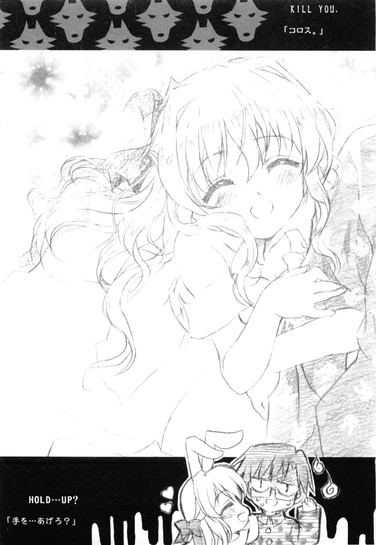
「さっきからずっと捜していたんです。でも関係者の方へのご挨拶とかが忙しくて、なかなか見つからなくって......」
確かに、ほとんど追っかけに囲まれた人気アイドル状態だったしな。
「知らない人ばっかりだったので、緊張してちょっと疲れましたけど......裕人さんの顔を見たら安心しちゃいました」
えへ、と無邪気に笑う。う......かわいい。
思わず抱きしめたくなる衝動を何とか抑えていると、春香が何か言いたげな顔で俺の顔をじっと見ていることに気付いた。
「ん、どうした？」
「あ、えと──」
「うん？」
「あ、あのですね、ちょっとご相談があるのですが......」
春香はうんしょっと背伸びをして、俺の耳元でささやいた。
「実はホテルの隣にあるお店で、『ドジっ娘アキちゃんＵＫば～じょん』のふぃぎゅあを見つけたんです。それがすっごくかわいくて......今から買いに行きたいんですけど、その、よろしければいっしょに行ってもらえませんか？一人だと心細くて......」
「......ド、ドジっ娘アキちゃん？」
「はい、ＵＫば～じょんですっ」
両手をぐっと握り締めて、春香が身を乗り出す。
「......はは」
その一生懸命な姿を見て、何だかおかしくなると同時に心のどこかでほっとしている自分がいることに気付いた。
──ああ、何だかんだいってもやっぱり春香は春香だ。
ステージ上で華麗にピアノを弾いて、表彰式で輝き、さっきまで大勢の人々に囲まれていたあの春香も春香なんだろうけど、今ここで年相応の笑顔を見せ、心の底から楽しそうに目をきらきらと輝かせてメイド・イン・イングランドのアキバ系グッズ（ややこしい）のことを語る春香も、間違いなく春香だ。
「？ あ、あれ、私、何かおかしなこと言いました？」
突然笑い出した俺を見て、春香が目をぱちくりさせる。そんな無防備な表情もまた、俺の知っている春香のものだった。
「いや、言ってない」
「??」
さらに不思議そうな顔になる春香。
「何だかよく分からないのですが......それで、あの──」
「ああ、行こう」
即答する。断る理由なんて、これっぽっちもあるわけがない。
「やった。それでは早く行きましょう！ 早く早く」
はしゃぐ子供みたいに手をぐいぐいと引っ張る春香を、俺は押し留めた。
「でもその前に、春香に一つ言っておくことがあったんだ」
「？ 何でしょう？」
春香が小鳥のように首をかしげる。
何はともあれ、まずこれだけは言っとかないとな。
「ん。──優勝おめでとう、春香」
春香は最初ぽかんとした表情を浮かべていて、そしてようやく俺の言った言葉の意味を飲み込めたのか、こっちを見て大きくうなずき、笑った。
「は、はいっ！」
はじけるような、花が咲くようなっていう言葉がぴったりの、そんな笑顔だった。
──ま、今回は色々あったけど、この笑顔で差し引きはゼロってことで。
＊
さて、これにて一件落着......と思ったのだが。
何かを忘れているような気がした。
微妙な感じなのだが、何かが記憶の片隅に引っかかっていた。
うーむ。
しばし考えるが、思い出せない。
......ま、思い出せないならきっと大したことじゃないんだろう、たぶん。
「裕人さ～ん、早く早く。売り切れちゃいますっ」
「ああ、今行くって」
ホテルのエントランスのところで春香が急かしていたので、俺は適当にそう結論付けると、そのまま春香の後を追ったのだった。
それから二十六時間後。
「うう......カニは、松葉ガニはまだか......」
「......お腹、空いたよお......裕くぅん......」
帰国＆帰宅した俺は、我が家の居間（なぜか破壊されたはずのドアやらテレビやらはキレイに元通りになっていた）でゾンビのように横たわる、自分たちではまともに食事の支度すらできない妙齢の成人女性二人（職業：秘書と教師）の姿を発見して、ようやく忘れていたのが何であったのかを思い出したのだった。
第六話
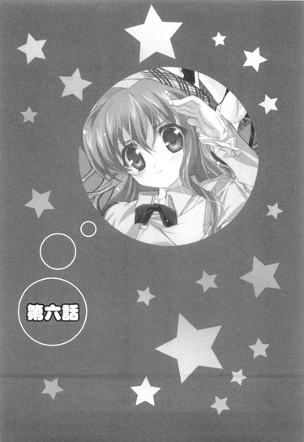
０
雑踏の中、遠くで黒地に白のメイド服が翻るのが見えた。
「あ、今あそこの角を曲がったよ？」
三つ先の角を指差し美夏が叫ぶ。確かに、少し前まで見えていたメイド服がいつの間にか視界から消えていた。「ほらほら、早く追っかけないと～」
ぱたぱたとその場で足踏みをする美夏を、しかし那波さんは止めた。
「いけません、すぐに行ったら見つかってしまいます～。せめてあと十秒は待ってから追いましょう」
「え～、そんなに～」
美夏が不満そうな声を上げる。
「それで見失わないでしょうか......？」
その横で背伸びをして様子をうかがっていた春香が、遠慮がちにそう言った。
「う～ん、その可能性はないわけではないですが～」
俺たちの追っている人物と、俺たちとの間の距離はざっと五十メートルくらい。しかも場所は繁殖期のアリの巣みたいに人で満ち溢れる休日の歩行者天国（しかも都内）である。これじゃ本当にいつ見失ってもおかしくない。
「......もう少しくらい近づけないんですか？」
俺の言葉に、しかし那波さんは首を横に振った。
「ダメですよ～。これ以上接近したら葉月さんにはすぐに気付かれてしまいます。今だって、ほんとに限界ギリギリなんですから～」
「だけど......」
いくら何でもこの距離は遠すぎだろ。葉月さんがメイド服を着てなかったら、ほとんど分からんぞ。
「裕人様、甘いです。人ゴミの中だからこそこの距離でも何とかなっているんです～。見通しの良い場所だったら、百メートル離れていたって葉月さんは感知してしまいますよ」
「......」
......いやあの人はいったい何者ですか？ それってもうメイドさんのスキルを明らかに逸脱してる気がする。
「とにかくもう少し待ってください。そうしたらまず私が先行いたしますので、その後から春香様たちは付いてきてくださいね～」
そう言うと、那波さんが人の波を避けながら音もなく前に出た。この人の身のこなしも、すでにしてほとんど常人のものじゃないな。
「でも、ほんとどこに行く気なんだろ～ね、葉月さん」
「分からないです。だけど、何か手がかりだけでも掴めれば──」
美夏の言葉に春香が答える。
「手がかり、か......」
まあ、それを掴むために俺たちはこんなことをやっているんだが。
と、先行した那波さんがこちらに向かってちょいちょいと手を振っていた。
「あ、もうだいじょぶみたいだよ。行こ、お姉ちゃん、おに～さん」
「はい」
「ああ」
美夏に促され、春香と俺は那波さんの後を追った。
さて、俺たち（俺、春香、美夏、那波さん）がいったい何をしているのかというと──
１
「葉月さん......ここのところどこか変なんです」
始まりは春香のその一言からだった。
ロンドンから帰国した五日後。
いっしょに行くと約束した〝夏こみ〟とやらを一週間後に控え、その打ち合わせのために乃木坂邸を訪れていた俺は、春香からそんな相談をもちかけられた（打ち合わせ自体は、当日の待ち合わせ場所と時間の確認と、春香作の〝夏こみまっぷ〟を渡されてすぐに終わった）。
「三日前、くらいからでしょうか。物思いにふけることが多くなったというか、どこか物憂げというか......」
ベッド（天蓋付き）に腰を下ろした春香が、心配そうにつぶやく。
「物憂げって、葉月さんが？」
「......はい」
ちなみにここは春香の部屋であり、件のメイド長さんは紅茶とお茶菓子を厨房まで取りに行っていて今はいない。「二十分ほどお待ちください」と言っていたから、おそらく本当に二十分きっかりしないと戻ってこないだろう。そういう人である。
「うまく言葉では言い表せないんですけど、何かに悩んでいるというか......。でも訊いても、何でもありませんって言うだけで......」
春香の表情が曇る。
「心配です......何かあるのなら、私たちに話してほしいのに」
「うーん......」
さっき会った限りでは、俺にはよく分からなかった。というかいまだにあの人の細かな表情の違いは判別することができない。大まかな喜怒哀楽くらいなら何とか分かるようになったんだけどな。
にしてもあの葉月さんに悩みねえ......
「なあ、春香の思い過ごしってことはないのか？」
「思い過ごし、ですか？」
「ああ、たまたまここんとこ葉月さん、ちょっとアンニュイな気分だったとか」
心配する気持ちも分からなくはないが、正直何かに悩む葉月さんというのが想像できない。どんなことがあっても、それこそ乃木坂邸に大陸間弾道ミサイルとかが飛んできても、あの人なら迷うことなく冷静に対処できそうだし。
「う～ん、それはないと思うよ？」
と、ふいに背後から声が割り込んできた。
「お姉ちゃんの思い過ごしってことは、たぶんないよ。だってわたしもそう思うもん」
「え？」
振り返ると部屋のドアのところに、淡い栗色の髪を二つに結んだ春香妹──乃木坂美夏が笑顔でちょこんと立っていた。「えへ、おに～さん、五日ぶり」
「美夏......」
「那波さんもいますよ～。裕人様、こんにちは～」
その隣ではつい先日知り合ったばかりのフレンドリーなメイドさんがにこにこと笑っている。
「もう、水臭いなー。ウチに来てるんならわたしたちに声くらいかけてくれてもいいのに。あ、それともお姉ちゃんと二人きりになりたかったとか？このこの～♪」
「わ～、裕人様、変態ですね～」
現れるなり、何やら好き勝手なことをのたまい始める二人。
「あのな......」
「あ、もしかしてお姉ちゃんもそっちの方が良かった？ん～、そっか～。邪魔しちゃったかな～」
「私たち、馬に蹴られた方がいいですかね～？」
二人で意味ありげに春香の方を見る。
「そ、そんなことは......今日はその、ただ打ち合わせをしていただけで──。も、もちろん裕人さんと二人でいるのはとっても楽しかったですけど、でも美夏たちがいると邪魔とかそういうことじゃなくて──」
かーっと真っ赤になりながら、ごにょごにょと春香。
それを見て、二人の小悪魔はさらに顔をにやにやとさせた。
「相変わらずお姉ちゃんはウソつけない人だな～。ほれほれ、いいから素直になっちゃいなよ～」
「そうですよ～。人間、素直が一番です」
「で、ですから──」
「ほらほら～」
「うふふ～」
「──（真っ赤のまま完全に沈黙）」
......やれやれ。
そんな感じでひとしきり（といっても十分くらいじっくり）俺たちに対するからかいの言葉を口にした後、
「──ま、それはともかくとして」
美夏が唐突に、真剣な顔になった。
「お姉ちゃんの言う通り......確かにここんとこちょっとヘンなんだよ、葉月さん」
「......そうなのか？」
美夏がこくんとうなずく。
「うん。なんかいつもの葉月さんらしくないっていうか、見た目からはあんまり分かんないかもしれないけど......」
「いつもと比べて三倍増しでぼんやりとしていることが多いですね～。先ほど廊下ですれ違った時も、何やら浮かない顔をしていましたし」
那波さんもそう付け加える。どうも、葉月さんが変だというのは事実らしいな。
「葉月さん、本当にどうされたのでしょうか......」
春香の表情がさらに曇る。そんな春香に美夏が言った。
「ん～、やっぱお姉ちゃんも気になるよね？ 何で葉月さんの様子がおかしいのか」
「......それは、はい」
「───だったらさ、理由を知りたいと思わない？」
「理由、ですか？」
春香が少し驚いた顔をした。
「うん、そ。葉月さんが何に悩んでるか。そのワケが分かればわたしたちにも対処のしようもあるし。──ね、みんなもそう思うよね？」
ぐるりと皆を見渡して、美夏が尋ねた。
「そうですね～。気になります～」
「まあ、分かるもんなら」
「だよねだよね？」
美夏がうんうんと満足そうにうなずく。
「そこでわたし、いいこと考えついちゃったんだ～」
「いいこと？」
何だ、いいことって？ 皆の視線が美夏の顔に集まる。それを受けて美夏は得意げに口を開いた。
「ふふ～、あのねあのね、実は葉月さんは今日──」
「......私がどうかいたしましたか？」
突然、どこからか声がした。
「わわわっ!?」「きゃ！」「うわっ！」「～っ！」
四人分の絶叫が上がる。
「......さすがに四人同時にそういう反応を取られると、少しばかりショックです」
俺たち全員のちょうど共通の死角になる位置に、いつの間にかひっそりと葉月さんが立っていた。相変わらず気配も足音もドアを開く音すらも全くもってなし。......てか絶対狙ってないか、この人。
「ど、どうしたんですか、葉月さん？」
慌てたように春香が尋ねる。
「どうしたと言われましても......ご用意した紅茶とケーキをお持ちしたのですが」
「あ、そ、そうでした」
そういえば美夏たちの登場ですっかり忘れていたが、そのためにこの人は席を外してたんだっけか。
「す、すみません、自分で頼んでおいて......」
「いえ......」
謝る春香に静かに首を振って、葉月さんは持っていたトレイをテーブルに置いた。トレイの上には、湯気を上げるティーポットとケーキみたいなもの（三人分）が乗っかっていた。
「テ・ロマーノとキャロットケーキでよろしかったでしょうか？」
「あ、はい」
「美夏様もこれで？」
「う、うん、お願い」
葉月さんの無音移動術にあまり慣れていなかったのか、美夏の声は動揺していた。表情もどことなく引きつっているように見える。
「──失礼します」
こぽこぽと、葉月さんがそれぞれのカップに紅茶を淹れ、ケーキを切り分けていく。
その間、部屋の中は微妙な沈黙に覆われていた。
カチャカチャと、ただ葉月さんが手を動かしている音だけが淡々と響く。
やがて人数分の紅茶が淹れられ、切り分けられたケーキが皆の前に置かれた。
「それでは私は所用がございますので、厨房の方に戻っております。何かありましたらお呼びください。──那波さん、後はお願いいたします」
葉月さんはぺこりと一礼をすると、部屋から出て行った。
ガチャリ、とドアの閉まる音。
「は～、びっくりした」
直後に、大きなため息とともに美夏がテーブルの上にだらりと身体を投げ出した。「突然あんなのなしだよ～」
「ええ、全然気配を感じませんでした。さすがは葉月さんです～」
どうやら那波さんですら全く接近を感知できなかったらしい。それが褒めていいところかどうかはまた微妙な気がするがな。
「と、とりあえずは冷めないうちに紅茶を飲みませんか？せっかく葉月さんが美味しく淹れてくれたんですから」
「......そうだな」
春香の勧めで、皆（春香の後ろに立っている那波さんを除く）がテーブルの上にあるカップに手を伸ばす。
しばしの歓談タイム。
皆で思い思いに談笑していると。
「──そういえばお姉ちゃん、さっきから気になってたんだけど、それ何？」
「えっ？」
テーブルの隅に置かれていた冊子を目聡く見つけて、美夏が尋ねた。「なんかのガイドブック？もしかしてお姉ちゃんたち、どっか行くの？見せて見せて！」
「あ、こ、これはその......」
春香の顔が途端にぴしっと強張った。
そこにあったのは、先ほどの打ち合わせの時に見せてくれた、春香作の〝夏こみまっぷ〟とやら（自信作らしい）である。......またしまい忘れてたんだな、春香。
何にせよ、ここはさっさとフォローを入れておくべきだろう。
「あー、ごほんごほん」
わざとらしく咳払いをして美夏に目配せする。
「それは夏休みの倫理課題の『世界の偉人伝』ノートだ。別に見ても面白いもんじゃないぞ」
「？ どしたのおに～さん、急に」
「ごほん、ごほん」
「なに？ 風邪でもひいたの？ マイコプラズマ肺炎？」
少しの間、美夏はきょとんとした顔をしていたが、すぐに「──あ、そうゆうことか」と小さくつぶやいて。
「ん、な～んだ、ただのノートなんだ。だったら別に見せてくれなくてもいいや」
「あ、そ、そうですか？」
春香があからさまにほっとした表情になった。
「うん。でも宿題だったら、どっかにしまっておいた方がいいんじゃない？テーブルの上に出しっぱなしだと汚れるかもしれないし」
「あ、は、はい」
そそくさと、表紙を隠しながら問題のブツを机の引き出しにしまう。それを美夏が苦笑混じりに見ていた。やれやれ、何とか事なきを得たみたいだ。
「で、美夏。さっき言いかけてた〝いいこと〟って？」
春香が戻ってきたところで、俺はさりげなく話題を変えた。
「あ、うん。えっと──」
先刻のトラウマからか、美夏は一度きょろきょろと周りを注意深く見渡した。
「よし、今度はいないっと。──えっとね、実は葉月さん、今日の午後に休暇を取ってるの」
「休暇？」
「そうよね、那波さん？」
「え？ あ、はい～。日曜日ですし、確かどこかに出かけると言っていたと思いますが......」不思議そうに答える那波さん。「でもそれと〝いいこと〟に何の関係が～？」
それは俺もまったく同感だった。春香も隣で、カップを手に「？」と首を傾けている。
美夏（この中で最年少）が、みんな分かってないな～って顔をした。
「ん～とね、悩みごとの原因ってゆうのは、だいたいプライベートにあるものなの。だからその人のプライベートを調べてみれば、悩みごとが何だか分かるってわけ。あんだすたん？」
「そういう......ものなのか？」
「ん、そういうものなの。〝女の秘密はプライベートにあり〟って。──ね、お姉ちゃん？」
「え？ あ、は、はい、そ、そうですね」
妹の突然の突っ込みに、プライベートにものすごい秘密を抱えている（つもりの）姉が、目を泳がせながら答えた。
「そして葉月さんは今日は午後から仕事がお休み。で、仕事がお休みってことはプライベートの始まりってことだよね？」
「......まさか」
なんとなく、その先に続く言葉が想像できた。
ここ二ヶ月くらいの付き合いで、この春香妹の色んな意味で突飛な思考回路というものが少しは分かってきたからなのかもしれん。朱に交われば赤くなる。......あまり嬉しくないが。
美夏が、ぱちりとかわいらしくウインクをした。
「そ。つまりこれから、みんなで葉月さんの後を追ってみようってこと♪」
２
──というわけで、葉月さんの尾行をすることになったのだが。
これが思った以上にめちゃくちゃ大変だってことに気付かされるまで、さほど時間はかからなかった。
人ゴミの中を苦もなく素早く進んでいく春風のように軽やかな身のこなし。
一定以上の距離に近づくとすぐに反応するレーダーばりの探知能力。
さらに周囲の物音や人の声に対して、軍用犬並みに敏感な聴力。
とにかく葉月さんに気付かれないように、その後を追っていくというだけで一苦労なのだ。街中でメイド服というこの上なく目立つ格好なのにもかかわらず、気を抜くとあっという間に（それこそ瞬時に）見失いかねない。
事実、俺たちだけだったら、とっくにロスとするなり気付かれるなりしていただろうね。
ここまで何とか無事に追ってこられたのも、葉月さんに限りなく近い性能を有する那波さん（ちなみにこの人は今はピンクのキャミソールに黒のミニスカートという、至って普通の格好である）がいてくれたからこそである。
「はい、だいじょうぶですよ～。来てください」
那波さんが先行して安全を確認してから、俺たちがその後に続く。そのやり方で、今のところはそれなりにうまくいっていた。
「あれ、葉月さん、どこ？」
「姿が見えないのですが......」
三つ向こうの角を曲がったはずの葉月さん。確かにその姿が忽然と消えている。
「ええと、どうやらあそこのお店に入ったみたいです～」
「お店？」
「はい～」
那波さんが、遠くにあるやたらとカラフルで原色チックな看板を指差す。
「あれはヌイグルミ屋さんですね～。『アリス・イン・ワンダーランド』と書いてあります」
「ヌ、ヌイグルミ？」
「ええ～、そうですよ」
「......」
いや葉月さん、何でまたそんなファンシーかつファンタジーな店に......
「葉月さん、ヌイグルミが大好きですから......」
春香がそっとつぶやく。
「お部屋にも、かわいいヌイグルミがたくさんあるんですよ。ワンちゃんとか、ネコさんとか、ペンギンくんとか」
「......」
あー。
ほとんど忘れかけていたが、そういえば前にそんな話を聞いたことがあったような気もするな。激しく意外だったので理性が記憶することをかたくなに拒んでたのかもしれん。
「う～ん、とりあえずはもう少しだけ近くに行って、出て来るのを待っているのが無難ですね～。ヘタに近づきすぎると、お店の中からでも発見されちゃいますから」
「......店の中から？」
「はい～」
「いくら何でもそれは──」
あり得ない、と言い切れないのが怖かった。というか今までの実例からして、あのメイド長さんならそれくらい十分にあり得そうな気もする。暗闇で百メートル先に落ちた針の音とかを聞き取れそうな人だし。
なので、ここは那波さんの言葉に素直に従うことにした。
そして店から離れた物陰で待つこと十分。
「あ、出てきました～」
葉月さんがその手に紙袋を持って店から出てきた。微妙にはみ出している白くて長い耳からして中身は......
「ウサギですね～。あの耳の大きさを考えると、けっこう大きなものですよ」
......だろうな。いやそう見えて実はバニーガールの衣装の一部だったりしたらかなりイヤなもんがあるが。
「ウサギさん......ですか。やっぱりいっしょに寝たりするのかな、葉月さん」
春香がつぶやく。
「......」
......いやそれはないだろ。
なんか勝手な想像だが、葉月さんとウサギのヌイグルミの組み合わせだと、どうしても無表情で首根っこを掴んで持ち上げているイメージ（狩猟or調理）しか浮かんでこないんだよな。ううむ。
考え込んでいると、横から美夏に肩を叩かれた。
「ほらほらおに～さん、なに気難しいフクロウみたいな顔してうなってるの？行くよ～」
「あ、ああ」
促され歩き出す。
次に葉月さんが向かったのは、ペットショップだった。
「店先でチワワと戯れているようですね～」
俺たちにはよく見えないが、那波さんによるとそういうことらしい。しかしあの葉月さんとチワワってこれまた......
「いいな～、チワワ。わたしも遊びたいよ～」
「あのつぶらな瞳がかわいいんですよね」
羨ましそうにペットショップの方を見つめる乃木坂姉妹。
その横では、那波さんによる葉月さんのレポートが続く。
「抱き上げて頭を撫でてあげていますね～。ペロペロと顔を舐められています。でも葉月さんもまんざらではないみたいで、とっても嬉しそうな顔をしています～」
「......」
「あ、そろそろ移動するんでしょうか。ものすごく名残惜しそうな顔でチワワのことを見ていますね～。あらあら、手まで振っちゃって～」
「......」
......もしかして、俺は葉月さんに対する認識を少しばかり改めた方がいいんだろうか。
「よっぽど離れたくないんでしょうかね～、手を振ったままその場で止まっちゃってます。あ、ようやく動き出しました。未練を振り切るように小走りで離れていきます」
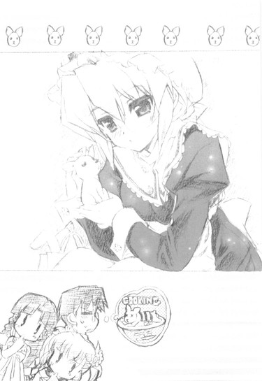
「......」
「ほらほら、私たちも追いますよ～」
そして再び追跡モードに入る俺たち。
「次はどこに行くつもりなんだろ、葉月さん」
「......俺にはもうさっぱりだ」
ヌイグルミ店に続きペットショップ。すでに葉月さんのイメージとは百八十度かけ離れたところばかりが二つも続いている。悪いが俺にはこれっぽっちも想像つかん。
「そろそろなんか手がかりがつかめそうなとこに行ってくれるかなあ。でも今の流れだと普通にキャラクターショップとか行きそうだし......。う～ん」
美夏が口元に指を当ててうなる。
にしてもさっきからすごい人だな。なんかイベントでもあるのか？まあ休日の歩行者天国なんざこんなもんだと言われてしまえばそれまでだが、見回すと左も右も人ばっかりで、油断すると葉月さんを見失うどころか春香たちともはぐれかねない。特にこの面子は迷子になりそうなのが多いから、気を付けないとな──
とか考えながら、とあるケーキ屋の前を通り過ぎようとした、その時だった。
『それではこれより、毎月恒例のタイムサービスを行います！』
店先からいきなり、そんな声が聞こえてきた。
『ただ今より三十分間、銀果堂内全てのスイーツを五十～八十％オフにさせていただきます。早い者勝ちですので、皆様遅れることのないようご注意ください。では──スタート！』
その号令とともに、人の流れが大きく変わった。
それまで俺たちと順方向に流れていた波が、いきなり逆方向にシフトチェンジしたのだ。
「うわっ！」
押し寄せてくる人の波。
俺と春香と那波さんは慌てて横に飛んでその流れから抜け出すことに成功したが、ただ一人、考え事をしていてそれに気付かなかった者がいた。
「ん～、ブティックとかもありだし、小物屋さんとかもあるかな......あ、意表をついてジュエリーショップとかも......。──って、きゃっ！」
もろに人の流れに巻き込まれて、美夏の姿が消えた。
「お、お姉ちゃ～ん！」
叫び声が上がる。
人の渦のど真ん中でもみくちゃになった美夏が、あっという間に後方に流されていくのが見えた。
「あ、あわわわわ、お姉ちゃ～ん、おに～さん、那波さ～ん！」
身体がちんまい（身長一四七センチ。ちなみに本人は一五〇あると言い張っている）だけに、一度流れに乗ってしまうと抜け出すのが非常に困難のようだ。じたばたと懸命に手足を動かしているのが見えるが、全くと言っていいほど功を奏していない。おお、みるみるうちに、お椀に乗った一寸法師みたいに美夏の姿が遠ざかっていく......って、そんなことを冷静に考えてる場合じゃないだろ！
「美夏！」
慌てて追いかけようとするが、この生まれたてのカマキリの幼虫のような人の量である。おまけに流れに逆行するカタチになるので──
「ああ、もう！」
全然進まん！
産卵期になり必死に生まれ故郷の川へと遡上しようとする鮭みたいに俺が四苦八苦していると。
「春香様、裕人様、ここは私にお任せください～」
「え？」
横からコンコルドのごとき速さで那波さんが飛び出した。押し寄せる人波をスカートの裾を揺らしながら踊るようにかわして、美夏の声がする方向（もはや視界から完全に消えている）へと顔を向ける。
「お二人はこのまま葉月さんを追ってください。私は美夏様をお助けしてから、そちらに合流しますので～」
それだけ言うと、瞬く間に、那波さんの姿は人ゴミの中へと消えていった。
俺たちはそれを、ただ呆然と見送るしかなかった。というかこの人の流れをあのスピードで逆走するなんて、一般人にはムリな話である。
「......どう、しましょう？」
二人だけになって、春香がぽつりとつぶやく。
「......とりあえず、葉月さんを追うのを続けるか？那波さんが行ったなら美夏は大丈夫だろうし......」
あのメイドさんなら、たとえどんな状況でもきっちり美夏を保護して、その後俺たちに合流するだろう。どういう手段を用いるのかまでは分からんが、そのヘンだけは自信をもって断言できる。
「そ、そうですね。ここで諦めてしまったら美夏の犠牲がムダになってしまいます。──あの子のためにも、私たちががんばらないと」
真面目な顔で両手をぐっと握り締める春香。
犠牲って、死んでないけどな。
３
こうして、ここからの追跡要員は俺と春香の二人だけになった。
主力であった那波さんがいなくなったことからその難易度はかなり増したのだが（偏差値にして五十五から七十くらいにまで）、それでも周りに人が多いせいもあり、何とか葉月さんに見つかることなく追跡を続行することに成功していた。
現在、葉月さんはデパートの一階にある喫茶店に入ったところだった。屋内だが、大通りに面してガラス張りになっている店なので、多少離れた位置からでも中の様子は把握することができる。俺たちは、大通りを挟んで店の向かいにある自動販売機の陰から葉月さんの動きを窺っていた。
「どうだ？」
「えと、注文をしているみたいですね」
春香の言葉通り、葉月さんはメニューを手にウェイトレスさんに何かを言っているようだった。......メイドさんがウェイトレスさんに対して注文する図というのはかなり突っ込みどころが満載なんだが、まあそれはそれとして。
「だれかと待ち合わせしているような様子もなしか......」
ここに至るまで、葉月さんに特に不審な行動は見られなかった。いやヌイグルミ専門店でウサギ（ビッグサイズ）を買ったりペットショップでチワワと楽しげに戯れたりは俺からすれば十分に不審な行動なんだが、そういうことではなくそもそも葉月さんをこんな風に尾行することになった理由──すなわち彼女の悩みの原因が何であるか──に関わるような行動は見当たらなかったということである。
今もいつもと変わらぬ無表情でカップに口をつける葉月さんに、変わったところがあるようには思えない。
「うーむ」
これは果たして俺が鈍いのかそれとも葉月さんが行動に出していないだけなのか......限りなく前者のような気もしないでもない。普段から信長のやつにも「裕人ってアレだよね、ギャルゲーの主人公みたいに超鈍感だよねー」とか言われてるくらいだし。いや、例え自体はワケワカランのだが。
ともあれ。
あのくつろいだ様子からして、しばらく（少なくともお茶を飲み終わるまで）は葉月さんがここから動くことはなさそうだ。
少し気を緩めて、流れ行く通行人の群れに視線を移してみた。働きバチのようにせかせかと行き交う人々。この狭い日本、そんなに急いでどこに行くのかね......などとさっきまでこの上なく急いで葉月さんを追っかけていた自分たちのことを棚にあげて眺めていると。
──とんとん。
ふいに後ろから肩を叩かれた。ん？
とんとん。
再度、叩かれる。何だ、春香か？
「ん、どうかした──」
だが振り向いた俺の視界に入ってきたのは、乃木坂家長女の可憐な笑顔ではなかった。
「──────え？」
そこにあったのは、見慣れたというかほとんど見飽きた顔。ついでに言えばこの場で見たくなかった顔トップ３に入るだろう顔。
「な、何で......」
思わず、何も見なかったことにして無言でその場を離れたくなる。
「おお、やはり裕人か。歩いていたらそれらしき姿が見えたので、もしかしてと思ってな」
なぜかスーツ姿の我が家の姉上様がそこにいた。腕を組んでどこぞの殿様みたいに偉そうに俺を見下ろしている。──い、いや、何でルコがここに？確か俺が家を出て来る時にはまだ居間で一升瓶片手にぐーすか寝てたはずなのに......（ダメ人間）
「で、お前、こんなところでこそこそと何をやっているんだ？何か後ろ暗いことをやっているんじゃないだろうな？」
じろりと鋭い視線を投げかけてくる。
「あ、あー、これには色々と事情があって......」
言葉を濁す。
よんどころない事情があって乃木坂家のメイド長さんを尾行中だ、とはさすがに言えん。
「そ、それより、ルコこそ、何でそんな格好で──」
「ん、ああ......」
ルコが顔をしかめた。
「いわゆる休日出勤というやつだ。寝ていたところを社長に呼び出された。何でも会社の新製品がどこぞの商標登録に引っかかっていることが判明したとかで、訴訟を起こされる寸前だそうだ。ゆえに至急その対策を頼むだとか何とか......まったく、この暑い中に」
対策って、この姉に？ なんかの間違いじゃないのか？確かにヘタな企業ヤクザとかよりは遥かに頼りになりそうだが（注：実力行使に重点を置いた場合に限る）、それにしたって明らかにマイナス要素が多すぎるだろ。
「まあこっちはそういうわけだ。それで......ん？」
そこで初めて気付いたのか（遅い）、ルコは俺の隣でちらちらと小動物のようにこちらの様子を窺っていた春香を見た。
「そういえば、キミはだれだ？」
「あ、え......？」
突然問われて、春香が戸惑う。
「裕人、お前の知り合いか？ それにしては見ない顔だが......」
「あ、私は、その......」
春香が助けを求めるように俺の顔を見た。
「あー、彼女は......」
「──ああ、なるほど」
だが俺の言葉を待たずに、ルコが何やらしたり顔で大きくうなずいた。「もしかしてその子がアレか？以前に由香里が言っていた、お前がホームルーム中に発情していきなり押し倒したとかいう──」
「違うわ！」
まだあのデマを信じてやがったのか、こいつは。
「ううむ、欲情と劣情から始まる関係もあるにはあるが......お前くらいの歳ではあまりお勧めはできんな。刹那的に盛り上がりはするが、長続きせん。まあストーカー行為とかをするよりはマシとはいえ......」
「人の話を聞け！」
ルコが再度、顔をしかめた。
「──そんなに大声を出すな、やかましい。天下の往来で恥ずかしいヤツだな」
「だれのせいだ！」
というかお前が言うな。デフォルトでの声のでかさでは信長とタメを張るようなレベルのくせに。
「はあ......ったく」
このアホ姉の相手は疲れる。本当に心の底から疲れる。暗澹たる気分で俺がため息を吐いていると。
「あ、あの......」
隣で、春香が所在なさげに俺たちの顔を見ていた。もうどうしていいんだかさっぱり分かりませんって顔である。そりゃ目の前でいきなりこんな理解不能なやり取りが始まったんじゃ当然だろうさ。
「あー、こいつは......」
「ああ、そうか、すまんな。そういえば自己紹介がまだだった」
再び俺の言葉を遮ってルコがうなずく。このバカ姉......ほんとに俺の話を聞く気がないんだな。
「はじめまして、で間違っていないな？私は綾瀬ルコ。こいつの姉だ」
「え、お姉様、なんですか？」
春香が驚いたように俺の方を見る。
「......まあ、いちおう」
個人的にはコレと血縁関係にあることは、限りなく否定したい事実の一つなんだが。
「そうなんですか......あ、はじめまして、私は乃木坂春香と申します。ええと、裕人さんとは二年生から同じクラスで──」
「クラスメイトってやつだ」
バカ姉が余計なことを言う前にそう釘を刺しておく。
「ほう、クラスメイト、か......」
ルコが突然、花嫁さんの査定をする姑のような目付きで、じろじろと春香の全身を眺め始めた。
「え、え......？」
「ふむ......」
「あ、あの......」
その視線があまりにも不躾だったので、俺は遮るように春香とルコとの間に立った。
「あ、ゆ、裕人さん......」
春香があからさまにほっとした顔を見せる。よっぽど怖かったんだろう。目の端に薄らと涙まで浮かべている。
そんな俺たちを見て、ルコはにやりと笑った。
「──なるほどな」
「......何がなるほどなんだよ」
「いや、だいたい分かったってことだ。先人曰く、行動は口ほどに物を言う。──私は細かいところまで詮索しようとするほど野暮じゃない。由香里は好きかもしれんが」
あの人の場合は、好きというかほとんど生き甲斐だろう。
ルコが肩にかかっていた髪（仕事中は下ろしている）をかき上げた。
「ふむ、乃木坂さんだったか」
「は、はい？」
名前を呼ばれて、バッテリー切れのロボットにスタンガンを食らわせてムリヤリ起動させた時のように、春香がびくんと身体を震わせた。
「こいつのことをよろしく頼む」
「え......？」
突然頭を下げられて、春香がぽかんと小さく口を開けた。
「こいつは優柔不断で頼りなくてアホだが、それでも私の大事な弟だ。こいつがいないと......私はおそらく生きていけない」
何やらすごくいいことを言ってるように聞こえるが、実のところこれは比喩でも何でもなく、掃除洗濯炊事等の家事遂行能力──中でも特にそれが欠けると生命の危機に直結する炊事能力がゼロというかほとんど限りなく絶対零度の域（マイナス273.15℃）に達しているルコの、切実な心からの叫びなのである。
だけどそんな事情を知らない春香は、生まれたての雛鳥が親鳥を見るような目で、我が家のダメ姉を見つめていた。
「弟さん想いなんですね......」
......それはかなり違うと思うけどな。突っ込もうかとも思ったがやめておいた。わざわざ身内の恥部を見せる必要はないし、余計なことを言おうものなら即座にルコの鉄拳（鉄脚かもしれんが）が飛んでくるのは想像に難くない。
ルコは続ける。
「それにこう見えて、こいつにも良いところもなくはない。例えば──」
「......」
「例えば......」
「......」
「例えば.....................」
「......」
「ま、まあ具体例などに大した意味はない」
......おい。
「──とにかく、よろしく頼む。乃木坂さんのようなちゃんとした娘が付いていてくれれば、私も安心だ」
「あ、は、はい」
「うむ」
優しげな微笑を浮かべて春香の肩に両手を置く。野生のオオカミのように好き嫌いが激しく、そして嫌いな相手にはとことん攻撃的になるこの姉にしては珍しい行動だった。どうやら春香のことをいたく気に入ったらしい。
「では私はもう行く。──ああ、今日は夕食は作らなくていいぞ。社長にフグでもおごらせることにする。お前たちはせいぜいゆっくりしていけ」
そう言って、タイトスカートにもかかわらず風呂上がりのおっさんのような豪快な大マタで、ルコは去っていった。年に一度あるかないかのことだが、何やら妙な気を回してくれたっぽい。
「え、えへへ、お願いされちゃいました」
嬉しそうに笑う春香。ヤツの『頼む』という言葉の内に包まれた、色々な意味での含みにはまったくもって気付いていない様子である。
それどころか、こんなことまで言い出した。
「でも......ステキな人でしたね」
「は？」
一瞬耳を疑った。
ステキって......アレが？
「ええ、とっても美人でスーツがばっちり決まっていて頭も良さそうで、それでいて裕人さん想いで......憧れちゃいます。デキる女の人って感じで」
「......」
まあ弟の俺が言うのも何だが、ヤツは見た目だけはいいからな。逆に言えば見た目で判断しちゃいけない人間の最筆頭なんだが。
「私もあんな風になりたいなあ......なれるかなあ？どうでしょう、裕人さん」
割と本気な目でそんなことを言ってくる春香。
可能不可能以前に、頼むからそれだけはやめてくれ......
４
ルコと別れてから少しして、再び葉月さんが動き出した。
喫茶店を出て、相変わらず早朝の魚市場のように込み合う歩行者天国をすいすいと進んでいく。その後を、俺たちはつかず離れず追いかけていった。
人ゴミをすり抜け、曲がり角を四つ折れ、アーケードを抜けて。
そして葉月さんは、ある店の前で立ち止まった。
「何のお店でしょうか？」
「分からん」
大きなショーウインドウがある店だった。だがあいにく、光の反射の関係で俺たちのいる位置からは中はよく見えない。
そのショーウインドウの前で葉月さんはしばらく古代ギリシアの彫像のように立ち尽くしていた。何やら真剣な眼差しでショーウインドウの中を見つめているようだ。時折ため息を吐いているような素振りも垣間見える。
「何を見てらっしゃるんでしょう............あっ！」
「どうした？」
「あ、あれを見てください」
「ん？」
春香の視線の先を追うと──そこには葉月さんに向かって駆け寄ってくる一人の男の姿があった。
さわやかな短髪をなびかせたスポーツマン風の風貌。親しみやすそうな笑顔が印象的で、口を開くと歯がきらりと光りそうな、いわゆる好青年ってやつだ。
男は葉月さんと何やら話しているようだった。
「どなた......なのでしょう？」
春香が不安そうに尋ねてくる。しかしもちろん俺に分かるはずがない。
葉月さんはしばらくその場でぼそぼそと口を開いていたが、やがて小さくうなずくとそのまま男といっしょに店の中へと入っていった。
「裕人さん、これって......」
「──ああ」
今のはかなり怪しい。
ショーウインドウを見ていた時のあの反応、加えて合流した謎のさわやか男。
詳しいことはまだ分からんが、少なくとも葉月さんの悩みの原因とこの店とは何らかの関係があることは間違いなさそうだ。
とりあえず、俺たちは葉月さんたちが店から出て来るのを待った。
暑さに耐えつつ、人がうじゃうじゃと行き交う歩行者天国の片隅（路上）で、じっと店の様子を窺う。
──そのまま二十分が経過した。
......出てこねえ。
ずっと見ているが、一向に葉月さんたちが出て来る様子はない。
放した犬のように元気な真夏のお日様にじりじりと照らされて、俺はもう全身汗だくだった。移動している時よりもなまじ一箇所にとどまっている時の方が、太陽光線の集中率が高いみたいである。くそ、あちぃ......
「裕人さん、だいじょうぶですか？」
「あ、さんきゅ」
春香がハンカチを取り出して額の汗をぬぐってくれる。だが当の春香は涼しげな顔だ。これはあれか、『お嬢様は汗をかかない』っていう世界の法則か？
──それからさらに二十分が経過したが、やはり葉月さんたちは出て来なかった。
「......こうなったら、もう少し近くまで行って様子を見てみよう」
とうとう耐え切れなくなって俺は言った。
「え、でも......」
虎穴に入らずんば虎児を得ず。葉月さんの基本スペックからして、近づけば近づくほど見つかる危険性が高いのは百も承知だが、このままではラチがあかないのもまた現状である。それに葉月さんがあんなに熱心に見ていたショーウインドウの中身が何かも気になるし。
「......そうですね」
春香も最初は迷っていたが、やがてこっくりと首を縦に振った。
二人で、店へと近づいてみる。
「あ......」
そこは、ブライダルショップだった。店の入り口のところに、『ブライダル専門店フォーチュン・テイルズ』と書かれた看板がかけられている。
そして葉月さんが真剣に眺めていたショーウインドウの中。
「これって......」
──そこには、ライトを受けて真っ白に光り輝く純白のウェディングドレスがあった。もしかして葉月さん、これを見てため息を吐いてたのか？
「葉月さん......」
春香は少し複雑そうな顔をしていた。
「やっぱり、葉月さんも結婚に憧れているのでしょうか？」
「うーむ......」
どうなんだろうね。
よく分からんが葉月さんも妙齢の女の人である。そういったものに憧れていたとしても不思議じゃない......のか？（微妙）
まあ普通の女の人ならある程度の年齢になればそういったコトを意識するもんだろうが、しかしそれも人それぞれである。現にルコやら由香里さんやらはそろそろイイ年だってのに全く気にしてる様子もない。俺としてはあの二人にはさっさと結婚して少しは落ち着いてもらいたいんだがな......。
「......葉月さんは、私と美夏が小さい頃からずっと面倒を見てくれているんです」
春香がぽつりとそう言った。
「いつからだったかは詳しくは覚えていません。でも物心ついた時には、もう葉月さんはうちで働いていて......歳が比較的近いこともあって、私たちともよく遊んでくれました」
「そんな頃から......」
てことは、葉月さんはおそらく十代の頃から乃木坂家でメイドとして働いていることになる。あの歳にしてメイド歴十年以上。筋金どころか筋ダイヤモンド入りのメイドさんってやつだな。
春香は続ける。
「私が小学校に上がる頃には、葉月さんは私たちの身の周りのお世話を一人でやってくれるようになりました。他の仕事も忙しかったはずなのに。その頃からお母様は忙しくてあまり会えなかったから......葉月さんは、もう一人のお母様みたいな存在でした」
そういえば、春香の家もほとんど両親が帰ってこないんだったっけか。
「私たちは葉月さんが大好きでした。どこへ行くのにも付いてきてもらっていましたし、寝る前に絵本を読んでくれるのも葉月さんでした。授業参観とかにも来てもらいました。いっぱいご迷惑をかけちゃいましたし、今でも色々なところでご迷惑をかけちゃっていると思います。葉月さん、優しいですからイヤな顔はしませんが......」
そこで、春香は少し顔をうつむかせた。
「......もしかして、私たちは邪魔になっているのでしょうか？」
「え？」
それは意外な言葉だった。
「葉月さん、本当は結婚したいんじゃないでしょうか？でも私たちがいるからそれが叶わないんじゃないでしょうか？」
「春香......」
「私たちはまだ、色々なことで葉月さんに頼りっぱなしです。那波さんとか、他の方たちも良くしてくれますけど......でもやっぱり、私には葉月さんが一番の人です。一番頼りになって、一番何でも話せて、一番信頼できて──。だけどそれが葉月さんの負担になっているのだとしたら......」
春香はきゅっと目をつむった。
「もしもそうなら私は......葉月さんには、私たちのことなんて気にしないで、自分の思うように幸せになってほしいです。たとえお仕事を辞めることになっても、それはしかたないと思います。ちょっと、寂しいですけれど......」
その言葉には真摯な響きが込められていた。真摯で誠実な響き。葉月さんのことをほんとに大事に思ってるんだな、春香......。
正直、俺には葉月さんの真意がどこにあるかなんて分からない。
本当に結婚に憧れているのかも、春香たちの世話をすることを負担に思っているのかもさっぱり分からない。
でも一つだけ分かることがある。
あの無口なメイド長さんが春香たちのことをジャマに思ってるなんてことは、絶対にあり得ない。
普段の葉月さんの春香たちに対する接し方を見ていれば、鈍い俺にだってそれくらいは理解できる。
「春香」
だから葉月さんの行動の意味はともあれ、それだけは言っておくべきだろう。そう判断した俺が、春香に向かって口を開きかけた瞬間。
うぃぃぃん──
俺たちの目の前で、どこか間の抜けた音とともに店の自動ドアが開いた。
「──おや？」
中から出て来たのは、ルコや由香里さんと同じくらいの年頃の若い女の人。
「ん、キミたち、ウチのお店に何かご用かな？」
どうやらこの店の店員さんらしい。にっこりと営業用のスマイルでそう尋ねてくる。
「あ、いや」
「え、ええと......」
「あら、何だか二人して深刻な顔してるわね。──はは～ん。お姉さん、ぴんときちゃった」
返答に困っていると、俺たちとショーウインドウの中を見比べて、店員さんがにやりと笑った。......なんか、ヤな予感が。
「ね、カノジョ、これ着てみる？」
「え？」
店員さんが指し示したのは、ショーウインドウの中で光り輝いている真っ白なウェディングドレス。
「ほら、カノジョかわいいから、きっとよく似合うわよ」
「え、え？ あの、その」
あまりに突然の申し出に、春香が目をぱちぱちさせる。
「で、でも、これって展示品ですよね......」
「いいからいいから、特別サービスよ。どうせこんな真夏のバカみたいに暑い時期に、わざわざ足を止めてウェディングドレスを見ようなんて物好きはほとんどいないから」
きっぱりと言い放った。
ブライダルショップの店員さんとしてはかなりの問題発言である。
「ま、そういうわけだから。とにかく入って入って」
「え、え？」
「ほら、カレシも」
「い、いえ俺たちは......」
てか、中には葉月さんがいるかもしれんのにこのままノコノコと入っていくのは状況的に非常にマズイような気がする。俺は抵抗を試みるものの──
「こら、若いクセにヘンに遠慮しない。お姉さんがいいって言ってるんだから、大人しく言うことを聞けばいいの」
何だかよく分からないまま、ほとんどぼったくりバーに引っ張り込まれる酔っぱらい客のような勢いで、俺たちは店内に足を踏み入れた。
店の中は、非常に落ち着いた雰囲気だった。
三階建てビルの一階フロア全部を使った広々としたスペース。品のいい内装に明るすぎず暗すぎない柔らかな照明。その中をどこかで聴いたことのあるクラシック音楽が耳障りにならない程度の音量で流されていて、なかなかに癒しの空間といった風情である。
「あ、これ、『結婚行進曲』です。メンデルスゾーン作曲の」
「あら、よく知ってるわね。今時の若い子にしては珍しいわ」
店員さんに褒められて、春香は少しだけ嬉しそうな顔をした。
ぱっと見回したところ、辺りには葉月さんの姿も男の姿も見当たらない。
とりあえずはセーフみたいだった。
どうやら一階は展示スペースオンリーで、二階が式場の案内や式の内容を打ち合わせるための会議場──いわゆるブライダルカウンターになっているらしい。ここ（一階）にいないってことは、葉月さんはそっちにいるんだろうか。まあ何にせよ見つからないようにしないとな......
「んじゃカノジョ、そこんとこに試着スペースがあるから。着替え方とか細かいことは......えーっと、田中さん」
「あ、はーい？」
奥でショーケースを磨いていたもう一人の女の店員さん（ショートカットにメガネ）が、作業を中断して駆け寄ってくる。
「何ですか？」
「悪いんだけど、ちょっとこの子の着替え、手伝ってあげてくれる？ドレスアップのやり方は任せるから」
「分かりました、テンチョー」
このお気楽な店員さんの正体は、店長さんだったことが判明した。
「お、かわいい子ですね。こりゃヤリガイがあるってもんです。じゅるっ」
「よ、よろしくお願いします......」
若干倒錯的な笑みを浮かべるメガネの店員さんに連れられて、微妙に不安そうな顔の春香は試着スペースへと消えていった。
「よーし、どうせだからカレシもタキシード着よっか？んー、確か奥に在庫があったっけなー」
「え、俺も？」
「そうよー。カノジョだけウェディング姿になってもカッコつかないでしょ？やっぱり新郎がいないと」
「し、新郎って......」
「ん？ 新郎は新郎よ。花婿さんのこと。ちなみに心の疲れのことじゃないわよ？」
「そうじゃなくて......」
俺が言いたいのは、いつの間に何でこんなよく分からん流れ（ウェディングドレス＆タキシード試着）になってるんだ、ってことである。
混乱する俺に、店員さん──いや店長さんがこっそりと耳打ちした。
（なんかよく分かんないけどさ、キミらケンカしてたんでしょ？あー、うんうん、みなまで言わなくても分かるって。あんな深刻そうな顔で話し合う状況なんて他にないだろうし。だから、仲直りのきっかけを作ってあげようと思ったのよ）
（......）
（あたしも先月カレと別れたばっかでさー、なんかほっとけなかったっていうか......。ちょっとおせっかいかもしれないけど）
店長さんはそう苦笑した。
とりあえず、確実に完璧にものすごく勘違いをしているが、どうも悪い人じゃないみたいだな。というかむしろかなりイイ人なのかもしれん。相当にマイペースだが。
「はい、じゃこっち来て。悪いけど試着スペースは一人分しかないから、そこで着替えてくれる？一人でだいじょぶよね」
そう言われ俺が案内されたのは、店の片隅にある物置スペースだった。何だか春香との扱いが天と地ほどに違うように思えるのは気のせいだろうか？......男女差別反対。
足がもげたマネキンやら色あせて花嫁が涙を流しているように見える見本写真やら微妙にホラーな物体に囲まれて、俺は渡されたタキシードに着替えた。ノリのビッときいた高価そうな生地。おお、ご丁寧に真っ白な蝶ネクタイまでついてやがる。こんなもん着けるのは生まれて初めてだ。
「お、カレシ、なかなか似合ってるよー」
戻ってみると店長さんが拍手で迎えてくれた。
春香やメガネの店員さんの姿はない。店長さん一人である。確か俺よりも先に試着スペースに入っていったはずなんだが......
「あのね、女の子は準備に時間がかかるもんなのよ。カノジョ、素材がものすごく良さそうだったから、うちのメイク担当も腕を振るいまくってるんでしょうね」
俺の心中を察したのか、店長さんがそう説明してくれた。なるほど。
「ま、そういうことだから、お茶でも飲みながら気長に待ちましょ」
で、店長さんと二人で雑談（「ね、カノジョとはどこまで進んでるの？」「......黙秘します」「手はつないだ？」「......黙秘します」「キスは？その先は？うふふ」「......」なんかどっかで聞いたことのあるようなセクハラ質問ばっかだ......）しながら待つこと十分。
「テンチョー、終わりましたよ」
メガネの店員さんがまず出て来た。なんかものすごく満足そうな顔をしている。「や、貴重な経験をさせてもらいました。肌はスベスベだわ髪もサラサラだわまつ毛も長いわスタイルもいいわで......こんな子、モデルでもなかなかいませんよー」
「でしょう？ ランクトリプルＳってところかしら」
「五つ星でもいいかもしれませんねー。お人形にして自分の部屋に飾っときたいくらいですよ」
店員さんは何やらコワイことを口走っていた。
「さてさて、まあ、前振りはこれくらいにして。それではそろそろお姫様にご登場と願いましょうか。田中さん」
「そですね。はいみなさん、こちらに注目してくださーい」
店長さんに促されて、店員さんが試着スペースの前で声を上げる。
みなさんとか言われても、三人しかいないんだが......。というかさっきから全然客が入ってくる様子がない。......余計なお世話かもしれんが、大丈夫なのか、この店？
「それじゃいきますよー。３・２・１......」
えいっという掛け声とともに、一気に試着スペースのカーテンが開かれる。その先から出て来たのは──
「あ、ゆ、裕人さん......」
「......」
思わず言葉を失ってしまった。
純白のウェディングドレスをその身にまとい、同色のヴェールに包まれて、頬を赤く染めながらはにかむ春香。
いや──なんつーか、めちゃくちゃキレイなんですが。
たった今降り積もったばかりの新雪のようなウェディングドレス、それに負けないくらいに白く透き通る肌、さらさらと流れる髪をふわふわとしたヴェールがまろやかに彩って──
つい先日に見たノーマル及びパーティドレス姿の春香も良かったが、これはもう、なんか別格である。反則である。ほとんど飛び道具である。
最後の方は自分でも何言ってんだかよく分からんが、とにかく今の春香が魅惑で必殺のテンプテイターであることには間違いない。
「ほらほら、ロミオとジュリエットみたいに見つめ合ってないで、並んで並んで」
「う」
「あ」
店長さんに引っ張られて、俺たちは店の隅にある撮影スペースのようなところに並ばされる。
「ひゅー、お似合いよ、お二人さん」
「......」
「......」
お互いに声が出ない。ヘンに意識するのもかえっておかしいんだろうが、その、ウェディングドレスの春香が隣にいるのかと思うと、それだけで心拍数が電気ショックを受けたカエルの脚みたいにムダに跳ね上がるんだよ。
それは春香にしても同じらしく、本日三度目にして最高の赤面具合でこっちをちらちらと窺いながら、生まれたばかりの仔鹿が鳴くような声で言った。
「あ、あの、裕人さん、そのタキシード、すごく似合ってます。カッコいいです」
「さ、さんきゅ。春香も......その、なんだ......キレイだぞ」
「あ、ありがとうございます」
「ど、どういたしまして」
「......」
「......」
......会話が続かねえ。
「んー、若いっていいわねー。思春期だわー」
「ええ、羨ましいです」
そんな俺たちを見ながら、微笑ましいものを見るような表情を浮かべる店長さんと店員さん（おそらく二人とも二十代）。そんなことより何かフォローとかしてくれ。
「よし、んじゃ二人ともそっちに並んで。写真、撮ったげるから」
「写真？」
何でまた突然？
「そうよ。せっかく二人でそんなカッコしてるんだから、記録に残しておかないともったいないじゃない？記念撮影っていうかなんていうか......んー、二人の未来予想図ってやつ？」
首をひねる俺たちに、店長さんはにっこり笑ってとんでもないことを言ってのけた。
「みみみ、みらいよそうず？」
春香の声が一気に二オクターブくらい跳ね上がった。「み、みらいよそうずって、わ、わた、わたしたちの、ですかっ？」
両手を振り回して、わたわたと慌てる春香。
そりゃそうだ。だって俺たちのこの姿（タキシード＆ウェディングドレス）が未来予想図ってことは俺たちが将来にこの姿（タキシード＆ウェディングドレス）で二人並ぶってことであり、この姿（タキシード＆ウェディングドレス）で男女二人が並ぶってことは、何か特殊な事情でもない限り、つまりはそういうわけで──
「......」
「......」
顔を見合わせ、二人してまた沈黙。
「あー、もう、二人ともほんとかわいいわー。うんうん、青春って感じね、青い春。グッジョブ！」
黙りこんでしまった俺たちに、黙らせた張本人である店長さんが、楽しそうに親指を立てた手を突き出してくる。......ああ、今気付いた。なんか一連のセクハラ会話にどこかデジャヴを覚えると思ったらこの人、由香里さんに似てやがるんだ。外見じゃなくて、性格が。
「はい、じゃあこっち向いて笑ってー。ん、なんかまだ硬いなー。............そうだ、カレシ、肩でも抱いてみてよ」
「......は、はあ？」
また突拍子もないことを。
「その方が新婚さんって感じでしょ？ カノジョが抱きつくんでもいいからさ。ほら、私たちに遠慮しないでがばっとやっちゃっていいわよ、がばっと」
無責任かつ道徳的に非常に問題のある台詞を吐く店長さん。てか新婚さんじゃねえし。
「ほら、早くー。こっちの準備は万端なんだから」
店長さんが急かす。うう、どうする。ここはドサクサに紛れて言われるがままに肩を抱いちまうべきか。でも突発的事態ならともかく、こういう自覚的な状態でそういうことをするのは何だか気が引けるんだよな......。
どうすべきか、ロープに吊るされたバナナを目の前にしたチンパンジーのように悩んでいると、春香がこっちをちらっと見た。紅玉リンゴみたいに赤くなった顔。そしてかなりためらうようにこう口にした。
「あ、あのさすがに抱きついたりは、その、まだあれですけれど──。で、でも......」
「え......」
「でも、こ、これくらいなら、い、いいと思います......」
そっと俺の左腕に自分の腕を絡ませた。
「......」
柔らかな香りとともに、意外なほどのボリュームが俺の腕に押し付けられる。こ、これはまさか......!?真夏に鍋焼きウドンを食べた時みたいに、がーっと顔面が熱くなるのを感じて──
パシャ！
その瞬間、俺たちの目の前でフラッシュが瞬いた。
「ん、ナイスアングル！ その微妙な距離感が初々しさを醸し出しててまた良し！」
パシャ、パシャ！
満足そうな店長さんの声とシャッターが切られる音。
「ほんとにいいわねー。一枚くらいお店の宣伝に使わせてもらおうかしら」
「いいですねー。きっと大人気ですよ」
「いっそ売りに出しちゃおっか、一枚五百円くらいで」
「八百円くらいでも大丈夫じゃないですか～？」
まあそんなこんなで騒ぐこと十五分。
──何だかよく分からんままに、撮影会（？）はつつがなく終了した。
「はい、それじゃこれはキミたちの分ねー」
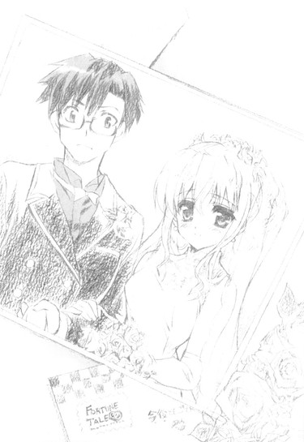
元の私服姿に戻った俺たちは、撮られた写真の内、最も写りの良いモノを一枚ずつお土産に手渡された。
「ま、でもこれはしょせんインスタントだからねー。キレイに撮れてるのはちゃんとプリントしておくから、改めて取りにいらっしゃい」
ウェディングドレスをマネキンに戻しながら、店長さんは笑顔でそう付け加えた。
「あの、色々とお世話になりました」
春香が深々と頭を下げる。
「ん、気にしないで。私たちも楽しかったから」
「有意義な時間でしたよー」
確かに、何だか二人とも肌が妙にツヤツヤとしている。
「それでは、私たちはこれで失礼させていただきます。本当にありがとうございました」
「......ありがとうございました」
店長さんたちにお礼を言って店を出ようとしたところで。
「あ、そうだ、カノジョ」
呼び止められた。
「？ はい？」
「コレ、あげる」
「え、あっ」
そう言って店長さんが投げてよこしたのは、さっきまで春香の手に握られていた真っ白なブーケだった。
春香が目を丸くする。
「あ、あの、いただいてしまってよろしいのですか？大事なものなのでは──」
「いいのいいの、記念ってことで。それより」
俺たちの顔を見て、店長さんがイタズラっぽくウインクをした。
「もしもあなたたちが将来そういうことになったら、ぜひ我が『フォーチュン・テイルズ』をご贔屓に。たっぷりサービスしちゃうから♪」
笑顔の店長さんたちに見送られて『フォーチュン・テイルズ』を出ると、道の向こうの方から聞き慣れた元気声が飛んできた。
「あ、ほんとにいた。お～い、お姉ちゃ～ん、おに～さ～ん！こっちこっち～！」
「美夏、那波さん」
「あ～、やっと追いつけた。疲れたよ～......」
ぐた～と、どこぞの垂れたパンダのように美夏が地面にへたり込む。
「美夏、大丈夫だったのか？」
「あ、うん、全然。あの後、人の波に百メートルくらい流されたところでやっと抜け出すのに成功して道端で休んでたらなんかヘンな人たちがナンパしてきてそれがあんまりしつこいから一発ドロップキックをお見舞いしてあげたんだけどそしたらそいつらの一人がキレて十人くらい仲間呼んで『目上の者に対する礼儀ってもんを教えてやるぜごらぁ！』とか頭悪いこと言い出した時に那波さんが追いついてきて八秒で全員をノックダウンしてくれたから」
「......」
「あ、六秒くらいだったかな」
「......」
そういう問題じゃない。
というか全然大丈夫じゃないだろ、それは。むしろ世間ではそういった状況を危機一髪と呼ぶ。まったくこの爆弾娘は......
「ん？ どしたのおに～さん、何だかすっごく疲れた顔してるよ？」
ほんとに分かってないって顔で、小鳥みたいに首をひねる美夏。基本的には正反対の性格だが、こういうところ（局所的に天然）は姉にそっくりである。
「はあ......」
まあでも、過ぎてしまったことをとやかく言ってもしかたがない。
それより。
「にしてもよく俺たちがどこにいるか分かったな。けっこう離れたところまで来てたのに」
「ん～、わたしは全然分かんなかったよ。ただ那波さんがこっちだって言うから来てみたら、ほんとにおに～さんたちがいたから」
「......那波さんが？」
「うん、そ。何でかは教えてくれなかったけど」
「......」
「......」
「うふふ～」
そちらを見ると、無言で目を細める那波さん。理由を訊いたって「企業秘密です～」とか言って絶対に答えてくれないだろう。......知らぬ間に発信機（しかもＧＰＳ）でもつけられたんじゃないだろうな。この人なら素知らぬ顔でそれくらいやりそうだ。
「あ、ねえ、ソレなに？」
と、春香が持っていた写真（タキシード＆ウェディングドレス）及びブーケを見て、美夏が声を上げた。
「あ、え、これは......」
「もしかしてなんか手がかりをつかんだの？ 葉月さんの決定的瞬間を捉えた写真とか？見せて見せて！」
「あっ」
春香の手から、ほとんどひったくるような勢いで美夏が写真を奪う。
「どれどれ、え～と──」
だが写真に目を落とした途端、美夏がジト目になった。
「..................お姉ちゃんたち、いったいなにやってたの？葉月さんを追っかけてたんじゃなかったの？」
「い、いやこれは」
「そ、その......」
何て説明すればいいんだか。いちおう葉月さんの追跡に関わりが全くないわけじゃないんだが、客観的にはとてもそうは見えない代物である。
「......まあ、おに～さんが順調にお義兄さんに近づいていってるみたいだから、それはい～んだけどさ～」
大げさに肩をすくめて、美夏がにやりと笑う。その発音に込められたあまりに意味深な響きに少しばかり反論したいところなんだが、証拠物件（写真）を握られてしまっているためそれもできない。うう......
「うふふ、お義兄さ～ん♪」
「私、近い将来には裕人様にもお仕えすることになるんですかね～」
そんなわけで、しばしの間にやにや顔の美夏（with那波さん）に絡まれまくり。
「──で、葉月さんの件はけっきょく何も分かんなかったの？」
「え......」
「それは......」
美夏に問われて、春香と俺は顔を見合わせた。完全に分かったかどうかは怪しいところだが、少なくともそのキッカケとなる何かは掴めたかもしれない。
春香が小さくうなずく。
「......いえ、それについては、だいたいですが分かりました」
「え、そうなの？」
意外そうに美夏が目を丸くした。どうやらほとんど期待されてなかったらしい。......まあ、あんな写真（タキシード＆ウェディングドレス）を見た後だから当然かもしれんが。
「ええ、実は......」
「あっ、みなさん、隠れてください～」
とその時、ふいに那波さんが小さく叫んだ。俺たちの後方を肩越しに指差し、「あちらに、葉月さんが～」
「えっ？」
見ると、店（『フォーチュン・テイルズ』）の自動ドアから今まさに出てこんとするメイド長さんの姿があった。例のさわやか男はいない。葉月さん一人である。
慌てて物陰に隠れる。
幸い葉月さんは俺たちに気付かずに、そのまま雑踏の中へと消えていった。
「なんだ、ちゃんと葉月さんの追跡もやってたんだ、おに～さんたち」
「ま、まあな」
ただ途中からちょっとばかりワケノワカラン流れ（店内強制誘引→タキシード＆ウェディングドレス→撮影会）になっただけで。......ちょっとじゃないな。
「ん～、今からウチに戻るのかな、葉月さん」
「そうじゃないか？ あっちは駅の方向だし」
それにおそらく、『フォーチュン・テイルズ』を訪れることこそが葉月さんの本日の最終目的だったはずだ。だったらそれが済んだ以上、後はもう屋敷に戻るだけだと思われる。つまりは俺たちのこの尾行モドキもこれで終了ってことだ。
「じゃ春香、俺たちもそろそろ──」
「......私たちも、お屋敷に戻りましょう」
俺が言う前に、春香がそうつぶやいた。
その表情は今までにないほど何かの決意に満ちている。どうしたんだ？
「春香？」
「お姉ちゃん？」
「春香様？」
俺と美夏と那波さんの三人分の視線を受けて、春香はおもむろにこう続けた。
「葉月さんに、伝えなければならないことがあります。たぶん、直接私たちの口から......」
５
「......皆様お集まりになって、私にお話とは何でしょうか？」
葉月さんが俺たちの顔を不思議そうに眺めた。
ここは春香の部屋である。
あの後、乃木坂邸に帰った俺たちは、すでに先に戻って厨房で食事の支度をしていた葉月さんを呼び出したのだった。職務熱心なメイド長さんは、作りかけだったビーフストロガノフ及びボルシチ（本日の夕食）の経過がかなり気になるようだったが、それでも素直に呼び出しには応じてくれた。
で、現在、俺たち（俺、春香、美夏、那波さん）は春香の部屋で葉月さんを囲んでいるというわけである。
「あの......」
微妙な沈黙を破って、春香が単刀直入に切り出した。
「葉月さん......最近、何かに悩んでいましたよね？」
その言葉に、葉月さんがぴくりと反応した。
「......なぜ、そのことを」
「やっぱり、そうなんですね？」
「......」
言葉に出してはっきりとは言わなかったが、葉月さんの表情がそれは真実だと肯定していた。
「葉月さん、水臭いよ。なんか悩みがあるんなら、わたしたちに言ってくれればいいのに～」
美夏が不満そうに言う。
「............いえそれは」葉月さんが首を振る。「お嬢様たちにお聞かせするような、大したことではありませんでしたので──」
「そんなことないです！」
珍しく、春香が大きな声で言った。
「大したことじゃないなんて、そんなことはないです。アレは、葉月さんにとって、とても大事なことだと思います。なので、そういう風に言ってほしくないです」
春香がぐっと身を乗り出す。
その勢いあまったハムスターのような様子に多少面食らった顔をして、だけど葉月さんはこう言った。
「確かに私個人には非常に重要なことですが......しかし客観的に見ると──」
「客観的とか、そんなのはどうでもいいです。葉月さんにとって大事なことなら、それはきっと私たちにとっても大事なことなんです」
「春香様......」
葉月さんが、目を瞬かせる。
「だから、葉月さんが望むことを、私たちは応援します。たとえその結果、葉月さんが遠い存在になってしまうことがあっても......は、葉月さんには、後悔することなく、自分の思う通りに行動してほしいです......」
言っているうちに感極まってきたのか、春香の声に湿り気が混ざり始めた。
「──わたしも、お姉ちゃんと同じ考えだよ」
目を潤ませる姉の横で、美夏が真顔でそう言った。
「葉月さんには、自分の思うようにしてほしい。そりゃ葉月さんから見ればわたしたちなんてまだまだ子供かもしんないけど、でももう最低限の身の周りのことくらいは自分たちでもできるもん。そんなことで......葉月さんの足を引っ張るのは、ヤだよ」
「美夏様......」
美夏たちには、屋敷への道すがらだいたいの事情は説明しておいた。
ウェデイングドレスのことやブライダルショップのこと、いっしょに店に入っていったさわやか男のことなどを説明した時にはさすがに目を丸くしていたが、それでもすぐに納得はしたみたいだった。
『そっか......葉月さん、結婚したいんだ。でもわたしたちがいるから......』
聞いた事情から春香と同じ結論を出したようだった。普段は見せない寂しそうな顔でそう下を向いていた。
「わたしたちのことは気にしないでい～からさ。葉月さんは葉月さんの好きなようにやってよ。葉月さんの決めたことなら、わたしたち応援するから」
「ぐすっ......私からも、お願いします」
「お嬢様方......」
姉妹二人（しかも片方は半泣き）に迫られて、さすがの葉月さんも少し戸惑っているようだった。
「......分かりました」
やがて葉月さんが小さくうなずいた。
「私としても迷っていたところでしたが......今のお二人のお言葉で決心がつきました。私は、私自身が最善だと考える選択をさせていただくことにします。それがきっと、正解なのでしょう」
「は、葉月さん......」
目をうるうるとさせた春香が一歩前に出る。
「ぐすっ、は、葉月さんに渡したいものがあるんです」
「私に、ですか？ 何でしょう」
「は、はい。──これを、ぜひ。ささやかなものですが、受け取ってください。ぐしゅ......」
そう言って春香が差し出したのは、帰り際に店でもらったあの真っ白なブーケだった。
「これは......」
葉月さん、目をぱちくり。おお、なんかこの人がこんなに驚く顔は初めて見た。
「ブ、ブーケです。よろしければ、式で使ってくださると嬉しいと思って......」
「式......」
「はい、式です」
大きくうなずく春香。
だが葉月さんは「......」と無言で五秒ほど宙を見つめた後、ゆるりと首をひねり。
「あの......式とは何のことでしょうか？」
予想外の言葉を口にした。
「近日中に、式典等の予定はなかったと思うのですが......」
「式典？ いえ、そうではなくて結婚式の......」
「結婚式？ どなたか結婚をなさるのですか？」
「どなたって、葉月さんが......」
「は？ 私が......？」
疑問形の連続で答える葉月さん。
......何だか、話がものすごく噛み合ってないような気がしてならない。
「だ、だって葉月さん、今日お店に入りましたよね、ブライダルショップに......」
「ブライダルショップ......？」
「は、はい、男性の方といっしょに......」
「......」
葉月さんがさらに不思議そうな顔をする。「......すみません。記憶にないのですが──」
「え、え、だって......？」
春香が困ったように俺の顔を見る。
記憶にないって、俺たちは確かに葉月さんがあの店に入っていったのを見たんだが......。
「お二人がどうしてそのようなことを仰るのかは分かりませんが......本日私が行ったのは、ヌイグ──いえ縫製人形専門店に、愛玩動物展示店、その他いくつかと、あとは金物店だけですが......」
ところどころ微妙な表現を交えて、葉月さんが言った。
「金物店？」
そんなところ行ってたっけ？ 春香を見ると、やっぱり首をふるふると横に振っている。
「はい、金物店です。少しばかり私用がありまして......。しかしそれ以外の場所には──ブライダルショップも含めて──本日は行っておりません。それは確かです」
きっぱりとそう言う葉月さん。その様子から、ウソを吐いているとは思えない。
「で、でも、だったら葉月さん、どうして『フォーチュン・テイルズ』に......？」
「『フォーチュン・テイルズ』？」
「は、はい」
「......」
その名前に、何かを思い出したかのように葉月さんが顔を上げた。
「......それはもしかして、三階建てビルの一階と二階に入っているお店のことでしょうか？」
「え、ええ、そうですけど......」
「......そういうことでしたか」
ワケが分からず混乱する俺たちに、葉月さんは納得したようにうなずいた。
「それでしたら、春香様たちの勘違いです。私の行った金物店はその『フォーチュン・テイルズ』の入っているビルの三階にあるのですが......建物の構造上、入り口が同じになっているのです」
「......」
「......」
言われてみれば、３Ｆ『金物専門店ヘヴンズドア』と書かれた案内書きがあったようななかったようなあったような......
「で、でも、ショーウインドウのウェディングドレスを見てため息を......」
「それはおそらく、ショーウインドウの奥にあった展示写真を見てのことだと思います。新婦の足下に写っていたチワワがかわいらしかったので、つい──」
「じゃ、じゃあ、あの男の人は？ いっしょに店に入っていった......」
「あの方は金物店の店長さんです。たまたまお店の前でお会いしたので、ごいっしょさせていただきました」
俺たちの一連の疑問に、さらりと答える葉月さん。
「......」
「......」
「......だとするとつまり」
「今までのことは私たちの勘違い──」
ってことになるな。
「お姉ちゃ～ん、おに～さ～ん......」
「あらららら～」
美夏と那波さんの何とも言えない視線が突き刺さる。
「すすす、すみません！ 私、てっきり葉月さんが......」
「いや、俺が早とちりしたから......」
二人して頭を下げる。うわ、これってめちゃくちゃ恥ずかしくないか。おまけに葉月さんに対して、ものすごく失礼な勘ぐりをしてたってことになる。とにかくここは謝っとくしかないな。
だが必死に頭を下げる俺たちに対して、
「......ありがとう、ございます」
葉月さんは柔らかな微笑を浮かべて、なぜかそう言った。
「お二人とも頭をお上げください。そのお気持ちだけで......私には充分です」
「は、葉月さん......」
「春香様は、私のことを考えてあのようなことを言ってくださったのですよね？そのことが私にはとても嬉しいのです。──美夏様も裕人様も、ありがとうございました」
「で、でも......」
まだ何かを言おうとした春香の口を、葉月さんが指でそっと押さえた。
「いいのですよ。それより、泣かないでください。春香様の泣き顔を見ている方が私にはずっと辛いのです。だって......お嬢様たちの笑顔が、私の何よりの幸せなのですから」
「は、葉月さん、葉月さぁん......」
とうとう涙腺が完全決壊した春香が、スペイン・サンフェルミン祭りの闘牛のごとく葉月さんの胸に飛び込む。
そんな春香を、葉月さんはとても優しい目で見ていた。母親が娘を見るような、姉が妹を見るような、そんな優しい瞳。
それを見ればきっと春香も分かっただろうな。
葉月さんが、春香たちのことを負担に──ましてや邪魔に思っているなんてことは絶対にないって。
「うう......いいお話ですね～......」
横では那波さんが、おうおうっと目元にハンカチを当てていた。
かくして、葉月さんに関する一連の騒動は静かに終わりを告げたのだった。
ちなみに後日、葉月さんにいったい何を悩んでいたのか尋ねたところ。
「......愛用のチェーンソーの切れ味が悪くなってしまっていたのです」
微妙に恥ずかしそうな顔でそう答えてくれた。......チェーンソーって、もしかしていつか見たあの殺人鬼仕様の？
「どうも刃の部分が欠けてしまったようでして、それで新しい刃に代えようと思って先日金物屋に行ったのですが、その候補が二つありまして......。値段が安いけれどあまり切れ味の良くない汎用ステンレス製の刃。そして値段は高いのですが、切れ味抜群でさらに見た目も美しい特注一点モノのダマスカス鋼の刃。ずっとどちらにしようか迷っていましたが、お嬢様たちの言葉で心が決まりました。後悔の残らないように、やはりダマスカス鋼にいたします」
「......」
ダマスカス鋼（伝説の金属）なんてチェーンソーに使ってどうするんだ？だいたい木目模様のチェーンソーって外観的にもかなりどうかと思うんだが......。
......やっぱり、この人の思考回路はワカラン。
そう心の底の底から思った夏の日だった。
第七話
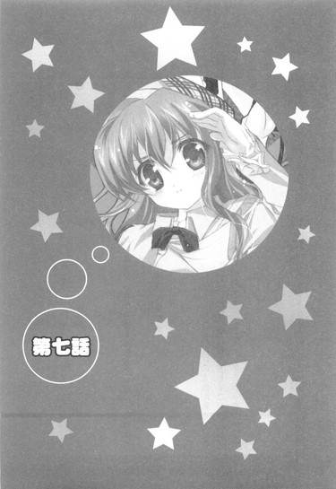
０
改札口を抜けたら、そこは人ゴミだった。
いやいきなりどこぞの純文学のパクリみたいなイントロから始まるのもアレだが、こればっかりはそうと言う以外に表現のしようがないからしかたない。
東京臨海高速鉄道臨海副都心線（りんかい線）国際展示場駅前。
八月十七日。午前九時。俺はそこにいた。
「すげぇ......」
とにかく辺り一面どこを見ても人、人、人。いったいどこからこれだけの人数が集まってきたのかってくらいに、そこら中が人で溢れまくっていた。先日の歩行者天国もすごかったが、これに比べればまだまだ序の口である。まるでダークドラゴンことウミイグアナの集団かと思えてしまうほどの超混雑っぷりだった。
加えて。
「......あちぃ」
まだ午前中にもかかわらずほとんど全方位射出のレーザービームのように強烈な太陽光線。アスファルトで固められた地面からは照り返しがもわもわと立ち昇り、さらにこれだけの人数に比例したすさまじいばかりの人いきれが発生していて──
何というか......一言で言えば暑苦しかった。
あまりの暑苦しさに、消防車に付いている放水機かなんかでまとめて蹴散らしてやりたい衝動に駆られるが、そこはぐっとガマンする。ここが世界でも指折りの高人口密度国である日本な以上、多少の人ゴミくらいで文句を言ってたら何もできんし、それによく考えてみれば俺もこの混雑を構成しているうちの一人である。人のことは全く言えない。
「......行くか」
覚悟を決めて、辺りを埋め尽くす人を避けながら、俺は歩き出した。
人で溢れたバスロータリーを抜け、人で満ちた小さな高架橋を越え、人でひしめく緩やかな階段を上がる。
向かうは遥か遠くに見える、ピラミッドを逆さにしてぶっ刺したかのごとき妙なカタチをしたどでかい建造物。
〝東京ビッグサイト〟と呼ばれるソコこそが、本日の目的地であり、春香との待ち合わせ場所でもある。
そう、なぜか今回も現地集合だった。
自宅の方向は同じなのだから、途中で待ち合わせていっしょに行けばいいんじゃないかと提案したところ、春香曰く、
『こういうイベントは待ち合わせからが始まりなんですよ。ほら、会場の楽しい雰囲気の中で集合すると何とも言えないどきどき感がありますよね？いかにもこれから何かあるって感じで（にっこり）』
とのことらしい。家に帰るまでが遠足の続きです、みたいなもんか？（謎）
まあ春香の考えは時々（......けっこうか？）よく分からんところがあるし、現地集合でも俺には特に不都合はなかったことから、深く考えずに素直に従うことにした。
で、人ゴミの中を歩くこと約五分。
ようやく東京ビッグサイト入り口に辿り着いたのだが......
「......」
なんか、そこにはすでに長い長ーい行列があった。
先頭が見えない、酔っ払ったアナコンダのようにのたくった行列。それが何列かに分かれて、駐車場の方に続いている。
......いや、開場って十時じゃなかったのか？
春香からもらった〝夏こみまっぷ〟には確かそう書いてあった。ゆえに春香は最初、待ち合わせ時間を十時ジャストに設定していたのだが、いつかのアキハバラでの一件（目的物売り切れ）があったことから、今回は確実に目的物をゲットするために五分前行動ならぬ一時間前行動を実践すべく（俺が）この時間を選んだのだが──
「ゆ、裕人さ～ん......」
──ひょっとしたら、考えが甘かったのかもしれん。
先に待ち合わせ場所に来ていた春香が、泣きそうな顔で駆け寄ってきた。
「ど、どうしましょう、もうこんなに人が......」
挨拶もそこそこに、辺りを見回し情けない声を上げる。
「わ、私、今回は絶対に失敗しないようにって、少し早めに来ていたんですけど、もうすでに今みたいな状態で......」
「あー」
まあそうだろうな。この行列の規模からして、五分や十分前にできたもんだとは思えない。
「こ、これじゃ『ねこばすてい』の本が買えないかも......。せっかくまた裕人さんにいっしょに来てもらったのに──」
春香が声を震わせる。
ちなみに〝夏こみ〟とやらは、どうやら本やＣＤなどのフリーマーケットのようなもので、『ねこばすてい』の本とは、本日の春香の一番の目的品らしい。
「わ、私、どうしたら......」
「とりあえず落ち着けって」
さっそくパニックになりかける春香をなだめる。相変わらず不測の事態に弱いことこの上ない。
「で、でも......」
「......とにかく並ぼう。ここしか、入り口はなさそうだし」
状況はいまいちよく分からんが、とりあえずもうそれしか手段はなさそうだ。
「......はい」
春香とともに、地の果てまで続くような行列の最後尾につく。ちなみに先頭が全く見えない。......最前線のやつらって、いったい何時くらいから来てるんだ？おまけにムダに長いクセに、行列自体はやけに整然としているというか、はみ出すヤツらもなくキレイにまとまってるんだよな。
「どうしよう......だいじょうぶかな、『ねこばすてい』だいじょうぶかな......」
隣では春香が、さっきから念仏のようにぶつぶつとそんな風につぶやいている。
うーむ。
何とかフォローしてやりたいが、この人数を見てると何を言っても気休めにしかならないような気がする。......正直、俺も絶望的なんじゃないかって思ってるくらいだし。
どう慰めようか考えていると。
「ねえキミ、『ねこばすてい』って、もしかしてサークル『ねこバス亭』のこと？」
ふと、前に並んでいたメガネの男（何やらカラフルなウチワを装備）がこっちを振り向いた。
「あ、は、はい」
春香がうなずく。
「うーん、確かにこの位置だと新刊を買うにはギリギリかもね。ここ、結構後ろの方だから」
「やっぱり......」
額に手を当てて、春香がよろめく。青ざめたその顔は、ほとんど世界の終わりを目の当たりにした預言者のようで。
それを見たメガネ男が慌ててこう付け加えた。
「い、いや、でも何とか大丈夫だと思うよ」
「......え？」
「うん、ギリギリだけど、急げば何とかなると思う。そんなにのんびりしてる余裕はないってだけで」
「ほんとですかっ!?」
大きく身を乗り出す春香。気圧されたように相手のメガネ男が一歩あとずさった。
「あ、ああ。たぶん、だけど。少し前までだったらダメだっただろうけど今は超大手だからね。入荷数も多いだろうし」
とのことらしい。大手、が何の大手なんだかはさっぱりだが。本の大手スーパーマーケットってことか？
「よ、良かったです......」
春香が安堵の表情を浮かべ、その場にへなへなと座り込む、
こっちとしても一安心だった。とりあえず、あのアキハバラの二の舞だけは避けられるらしい。
ほっと胸を撫で下ろし、それからひたすら待つこと一時間。
『それでは、ただ今より入場を開始いたします。参加者の皆様は、走らないようにゆっくりとお進みください』
遠くからのスピーカー越しの声がそう告げた。
どうやら、入場が始まるらしい。
「裕人さん、いよいよですっ」
「みたいだな」
周囲の行列がアフリカ産ゾウガメのようにのそのそと緩慢に動き出す。
それと同時に、遠くから何やら地鳴りのようなドドドドドという音が聴こえてきた。
「──？ 何の音でしょうか？」
「分からん。工事でもやってるのか？」
そういう系統の音である。俺たちが首をかしげていると。
「ああ、あれは開幕ダッシュだよ」
メガネ男が再度振り向いた。
「開幕......」
「......ダッシュ？」
何だ、それ？
「簡単に言えば、列の先頭の人たちが走る足音だよ。一人一人の足音は大したことなくても、皆が皆、我先に会場に入ろうとするから、それらが合わさってこんな地響きみたいな音になるってわけ」
「いや、でも今さっきアナウンスで走るなって......」
「まあ、皆、自分の目当ての新刊を買うために必死だってことなんだろうね。周りが全員走ってるのを見て、自分だけのんびり歩いてもいられないっていうか」
メガネ男が苦笑する。
つまりは『赤信号みんなで渡れば怖くない』の悪い例ってことだな（微妙に違うかもしれんが）。しかしそれにしたってこの、近くで怪獣あるいはそれを倒さんとする銀色の異星人が暴れているかのような音が全部足音だってのか？
「......」
......もしかして俺たち、とんでもないところに来ちまったんじゃ。
何というか、先行きに果てしない不安を感じさせる、前途多難な幕開けである。
だがその不安が決して杞憂ではなかったと、いきなり直後に思い知らされることになった。
１
「......や、やっと入れましたね」
「......ああ」
顔を見合わせてため息を吐く俺たち。
俺たちがようやく入場できた頃には、すでに時刻は十一時になろうとしていた。
......いや例の『開幕ダッシュ』とやらも驚きだったが、まさか入場するだけで一時間近くかかるとはね。まああの人の量からしてすんなり入れるとは思ってなかったが、それでもここまでかかったのは正直かなり予想外である。しかも俺たちの後ろにはまだまだ果てしない行列が続いてるし。......すごいところだな、改めて。
「──で、これからどうするんだ？」
「はい。まずは『ねこばすてい』の本を入手しちゃいたいと思います」
尋ねると春香は即座にそう答えた。
「前は楽しみを後に取っておいて大失敗しちゃいましたから。今回は先手必勝ですっ」
春香の目の奥には、真っ赤な炎が燃えていた。前回のアレが、よっぽど悔しかったらしい。
「それで、場所はですね......」
〝夏こみまっぷ〟とやらを広げる春香。
そこにはいつかの〝お買い物のしおり〟と同様に、行くべき場所とタイムテーブルとがきっちりとまとめられていた。
「たぶん、こっちだと思います」
とてとてと歩き出した春香の後ろをついて、エスカレーターへと向かう。
〝夏こみまっぷ〟によると、最初の目的地は東１とかいう場所らしい。ちなみに俺はその東１とやらがどこにあるのかさっぱり分からなかったりする。〝夏こみまっぷ〟には詳細（だと春香が思っている）な地図もついているのだが......それはあいにく俺には、というかおそらく春香以外の人間には、ほとんど解読不能な代物だった。てか、はっきり言って墓場に無数の〝ぬりかべ〟が立っている絵にしか見えん。
「そういえばここって、入場料とか取られないのか？」
通路を歩きながら、ふと疑問に思ったことを訊いてみた。これだけの大掛かりなイベントである。普通だったらいくらか（千円、二干円くらい）徴収されそうなもんだが、今のところ料金ゲートとかそういったものがある様子はない。
「あ、はい。無料のようです」
春香が〝夏こみまっぷ〟をぱらぱらやりながら答える。
「えと、昔は公式にカタログを買うことが参加条件だったようなのですが、今は無料のようです。一人でも多くの方が来場できるようにとの、主催者側の配慮だとか」
「へえ、そうなのか......」
「やっぱり楽しいことは、みなさんで分かち合えた方がいいですからね」
無邪気に笑って、春香はエスカレーターにちょこんと飛び乗った。ま、個人的にはもう少し少人数で分かち合いたかった気もするが。
エスカレーターを降りると、そこには通路があった。
道幅三十メートルくらいで天井が異様に高い（推定五十メートルほど）、通路というかそれ自体がほとんどホールみたいな場所。
その通路を挟むカタチで、両側にいくつかのブロックが分かれている。手前から右側が東１・２・３、左側が東４・５・６。どうやら、実質的な会場はそのブロック内にあるらしい。
「にしても、ものすごい人だな......」
通路自体が相当に広いってのに、辺り一面、どこもかしこも人でほとんど隙間なく埋め尽くされていた。いそいそと歩き回っているやつ。携帯て連絡を取り合っているやつ。中には集団で床に座り込んで、何やら作戦会議のようなものを繰り広げているやつらもいる。
文字通り、ぎゅうぎゅうのスシヅメ状態。
ただ歩くのすら難儀する、イヌが歩けば蹴られまくるようなものすごい込み具合である。こりゃかなり気を付けないと、すぐに人とぶつかっちまう──
「きゃっ」
などと考えていた矢先、春香が横を歩いていた男三人組の一人とぶつかって小さく声を上げた。
「す、すんません、大丈夫ですか？」
男が慌てて振り向いた。
「は、はい、だいじょぶです。そちらこそ、お怪我はありませんでしたか？」
「あ、こっちはだいじょうぶっす」
「そうですか......。本当にすみませんでした」
ぺこぺこと謝る春香。男たちは申し訳なさそうな顔で、足早にその場を離れていった。
「大丈夫か、春香？」
「はい。これくらい、全然何てことありません」
遊び盛りの仔犬みたいに元気な笑顔でそう答える。けっこう勢いよくぶつかったと思ったのに。案外頑丈なのか？そういえばいつだったか、図書室を廃墟にした時も春香自身はカスリ傷一つ負ってなかったし。
「それじゃ、行きましょう、裕人さん」
「ああ」
だが歩き出した春香は。
「わわっ」
今度は、人ゴミに隠れてよく見えなかった柱（コンクリート製）にぶつかりそうになった。
「す、すみませんっ。前方不注意でした。ごめんなさいっ」
しかも、柱だって気付かないで必死に謝ってるし。
「......」
うーむ。
これは別に春香が不注意だとかいうわけじゃなくて単に人が多すぎるのが原因なんだが、だとしてもこのままじゃ危なっかしくてしかたないな。それにこのすさまじい人ゴミの中じゃ、いつはぐれてしまってもおかしくない。春香は携帯を持ってないから、一度はぐれたら再会はほとんど不可能といってもいいだろう。......今回は那波さん（謎の探索機能を保有）もいないし。
となると。
「あー、春香」
ここは一つ対抗策を採っておくべきだろうな、うむ。
「はい？ 何でしょう」
「──ん」
少しためらいつつも、俺は右手を春香に向かって差し出した。これはアレだ、決してやましい気持ちからじゃなく、純粋に迷子防止のためだぞ、うん。
俺が差し出した右手を、春香は月の石でも見るみたいに、しばらく不思議そうに眺めていたが、やがてのんびりと一言。
「えと......お手？」
「違う！」
ぺたん、と乗せられた春香の左手に突っ込む。
「？」
ちょこんと首をひねる春香。
「そうじゃなくて......えーと、手を、何というか......」
「？ お代わり？」
今度は右手を乗せてくる。「......わん？」
......頼むからイヌから離れてくれ。
「違うっての。だから、あー、ばらばらに歩いてると迷子になるかもしれないから、その対策のためにだな......」
「......あ」
そこに至って、ようやく俺の言っている意味を理解してくれたのか、春香が頬をぽっと赤く染めた。
「いや、べ、別にこれには深い意味はないぞ、そ、その、純粋にはぐれないようにするためだからな」
「........................え、あ、は、はい」
差し出した手を、春香がおずおずと受け取る。
「よ、よろしくお願いします......」
手の平に伝わる柔らかい感触。それなのに大理石みたいにすべすべである。握る手に自ずと力がこもる。すると春香も、決して強くではないけれど、でも確かに握り返してきてくれた。
「ゆ、裕人さんの手って、大きいんですね」
えへっと笑ってそんなことを言う。
か、かわいい......
思わずそのままぎゅっと抱きしめたくなるような衝動に駆られるが、そんなこと実際にはできやしないし、やっていいわけもないし、やれるワケもない。たぶん逮捕されるし。いや、逮捕はされないのか？あー、ワケワカラン。
「そ、それじゃ行くか。早く買わないと、売り切れるかもしれないんだろ？」
「は、はい」
照れ臭さを隠すために、俺はそう言った。
そして俺たちは、会場（東１ブロック）へと足を踏み入れる──
「わあ......」
「おお......」
何というか、そこにはある意味で別世界が広がっていた。
体育館五つ分くらいのホールに所狭しと並べられた、長方形の事務机とパイプイスとで作られたいくつもの店舗（どうやらサークルスペースというらしい）。ざっと見渡しただけでその数は千を超えると思われる。それぞれの机の上には、おそらく売り物なんだろう、大量の本やらＣＤやらが置かれている。
「いらっしゃいませー」
「新刊、見ていってくださーい」
店舗の周りには、手製の看板を持った宣伝の人や、チラシのようなモノを配っている人、通行人に積極的に声をかけて呼び込みをやっている人なんかもいる。
「あ、これ、一部ください」
「はい、五百円でーす」
そして店舗本体では、次から次へとやって来るお客さんに対して売っているものの説明をしたり、お釣りを手渡したりしている。すでに大行列ができているところもあった。
「これが、〝夏こみ〟か......」
何だか、ノリとしては文化祭とか学園祭とか、そういうライトなモノに近い感じだ。全体的にお祭り気分というか何というか。店側の人たちも客側の人たちも、何かに追い立てられているかのように忙しそうだったが、それでも皆一様に楽しそうな顔をしているところだけは共通している。
「......」
しばし、その独特な雰囲気に圧倒された。
〝夏こみ〟......こんなフォーマルな場所（東京国際展示場）で開催されてるくらいだから、最初はもっと商業的というか堅苦しいモノを想像してたんだがな。
「すごいです......」
隣では春香も、初めて雪を見た赤道直下在住の人みたいな顔をしていた。
春香にとっても、この何とも形容しがたい雰囲気は未知なものであるらしい。
そんな感じで、二人して入り口付近で田舎から出て来たばかりのおのぼりさんのごとくぼーっとしていること数分。
俺はあることを思い出した。
「──って、春香。そろそろ行かないとマズイんじゃないのか？」
あのメガネの男の話だと、確か俺たちの位置でぎりぎりだとか言っていた。だとすれば、いつまでもこんなところで呆けているヒマはないような。
「！ そ、そうでしたっ。『ねこばすてい』ですっ」
俺の言葉に、春香は弾かれたように動き出すと、すごい勢いで手元の〝夏こみまっぷ〟のページをめくり始めた（片手で器用に）。
「え、え～と、ここが東１ブロックの入り口だから......」
手をつないだ状態のまま、きょろきょろと周りを見渡す。果物を探すリスみたいなその仕草は、贔屓目を抜きにしてもかなりかわいい。
慌てている春香には悪いが、思わず見惚れてしまう。
実際問題として、さっきから周囲の視線が少々──いやかなり、すごいんだよな。遠くからちらちら見るヤツ、すれ違いざまに振り向くヤツ、堂々とじろじろと見ていくヤツ。男女を問わず、周囲のあらゆる視線が集中している。もちろんその視線の先にあるのは俺なんかじゃなく春香なわけだが。
ちなみに今日の春香の服装は、真っ白なサマードレスに同色の薄手のカーディガン、頭には麦藁帽子がちょこんと乗っかっているという、ちょっとレトロなお嬢様スタイルである。
まあ見た目超美少女である春香がどこにいても目立つのは別に驚くことじゃない。驚くことじゃないんだが......それでもこのどこか日常からかけ離れた雰囲気の空間では、その目立ち方はいつもよりも際立っているように思えた。
──ヒヨドリの群れの中に白鳥がいるっていうか......？違うな、タンポポの群生の中に一輪だけ白百合が咲いているって感じか（どっちでもいいような気もするが）。
そんなことを考えていた、その時だった。
「あっ、あれは!?」
突然、右手が強い力で引っ張られた。
続いて猛然と走り出す春香。
「お、おい」
「見つけましたっ！ あそこにあるのが、『ねこばすてい』ですっ！あ、もうあんなに人が並んで──。は、早く私たちも並ばないと」
磯でイシダイをヒットした時のような手ごたえで、ぐいぐいと引っ張られる。
「ちょ、ちょっと」
「早く早くっ」
──そ、そういや、春香にはコレがあったんだっけか。
今さらながらに思い出した。気に入ったモノを見つけると周りの物事が完膚なきまでに目に入らなくなる春香の特攻癖。おそらく春香にしてみれば宝の山であるこの場所で、コレが今まで発動しなかったのはむしろ奇跡ってもんだろう。
「は、春香、気持ちは分かるがそこまで焦らなくても」
「だ、だめです。早くしないと売り切れちゃうかもしれませんっ」
俺の手をつかんだままチーターのように疾走を続ける春香。普段のおよそ八・五倍の敏捷さで、辺りを歩いている大量の人を器用に避け、ずんずんと前に進んでいく。止まらない。
「ど、どこまで行くんだ!?」
「あそこです、あの壁際にあるお店ですっ」
春香が指差したのは会場の端っこ。まだここから五十メートルくらい距離がある場所だった。
「......」
......いや、この混雑の中であの距離に置いてある本が見えたってのか？俺には本が置いてあることすら視認できんぞ？
ちらりと春香を見ると。
「は、早くしないとっ......」
その目は完全に、獲物を狙うタカの目だった。それも大タカ。さっきまでのリスはどこ行ったんだよ、ってな感じである。
半ば引きずられるような格好で必死に春香に付いていきながら、思う。
──何なんだろうね、この状況？
夏休み。超美少女に手を引かれて二人きりでお買い物。
字面だけ見るとものすごくロマンチックなように思えるが、実際のところはこれである。ロマンも何もあったもんじゃない。......まあでも、春香と手をつなげているだけでそれなりに幸せではあるわけなんだが、うん（単純）。
さて、『ねこバス亭』とやらに辿り着いた俺たちを待っていたのは......再び、行列だった。
「......もしかして、また並ぶのか？」
「えと、そうみたいですね」
長さにして三十メートルくらいの行列。
入場時のまでとはいかないが、それでもこれ単体で見るとかなり長い行列だった。しかも屋内だけにとどまらず、巨大通用口（荷物の運搬用？）をまたいで屋外に向けて伸びている。なんでも人気のある店舗（サークルというようだ）には長蛇の列ができるのが常であり、それらは屋内では通行の障害になるということで屋外に出されるのだとか。まあ、確かにこんなプチアナコンダな行列が中にあったらジャマでしょうがないな。
というわけで、外に出て列の最後尾らしきところに付いたわけだが。
「......あちぃ」
相変わらず、八月の日差しは殺人的なまでに強烈だった。
じりじりと、刺すような光が頭上から降り注ぐ。オゾン層が貧弱化して有害な紫外線をたっぷりと含んだ太陽光線は、日頃からエアコンに慣れ親しんで放熱機能が著しく低下した俺の現代っ子な身体には、かなりしんどいものがあったりした。
春香が、朝礼で今にも倒れそうな低血圧の同級生を見るような、ちょっと心配そうな顔で俺を見上げた。
「裕人さん、だいじょうぶですか？何だか顔色が良くないような......」
「いや、大丈夫だ。暑いだけで」
「......そう、ですか？ それならいいのですが──」
「ああ」
まあその暑さが問題なんだが。
とはいえ、これくらいの行列なら十分も並べばおそらく何とかなる......と思う（推定）。長く見積もっても二十分はかからない......はずだ（予測）。この暑さは少々辛いが、その程度の時間だったらまだガマンできるだろ──
「あ、そこのお二人さーん」
──と、思ったのだが。
甘かった。
貯蔵と貯蓄なしで冬を越せると考えていたキリギリスくらいに甘かった。
俺たちのところに駆け寄ってきた列整理の係員さん曰く、
「そこ、最後尾じゃないですよー」
「......え？」
「えっとですねー、通行する人たちのジャマにならないように、列をいくつかのグループに分断しているんです。だからここは最後尾じゃありません。ちなみにここは先頭グループになります」
「......あの、それじゃ最後尾はどこに？」
「あそこですね」
係員さんが指差したのは......なんか、ここからさらに六十メートルくらい離れた場所だった。遠目にだが、『最後尾』と書かれた札のようなものが見える。もちろんそこに至るまでには、人がびっしりとウインナーのように詰まった行列が続いていた。
「..................マジですか？」
「マジです」
にっこりと笑顔で係員さん。一気に全身から力が抜けていくのを感じた。......冗談でもウソだって言ってほしかったな。
一方、春香はというと。
「あ、そうなのですか。分かりました、でしたらあちらに並べばいいんですね？」
顔色一つ変えずに、そう答えていた。
というか、並ぶ気まんまんだった。
「だ、そうです。行きましょう、裕人さん」
「............ああ」
こうなったら、もう覚悟を決めるしかなさそうだ。
マナイタの上の鯉の心境で、俺は力なくうなずいたのだった。
そして、俺たちは行列（合計九十メートル）の一員となったのだが。
「あちぃ......」
やはりこの暑さばかりはいかんともしようがなかった。
「裕人さん、だいじょうぶですか？ すごい汗......」
滝のように噴き出してくる汗を、春香がハンカチでぬぐってくれる。
ふきふき。
柔らかい香りのする、高級そうな質感が頬に触れる。僅かにひんやりとした春香の手の感触が布越しに伝わってきて......そこはかとなく心地が良い。
「あー、さんきゅ。それより春香は大丈夫か？」
「はい。私は平気です」
麦藁帽子を揺らして春香がこくんとうなずく。そしてちょっと得意げにこんなことを言った。
「私、暑さには強いんですよ。だって、動物占いがコアラですから」
「......は？」
「コアラ、南半球オーストラリア在住です」
「......」
......いや、それって関係あるのか？
「だって動物占いがコアラってことは、私の体質がコアラに近いってことですよね？違うんですか？」
目をぱちくりさせる春香。......何か、動物占いを根本的に誤解しているみたいだな。
──ま、まあそれ（コアラ）はともかく。
さすがに強いと言うだけあって、春香の顔は涼しげだった。俺と同じだけの時間を日光に晒されてるってのに、そのカキ氷みたいに真っ白な肌には汗の滴一つ浮かんでいない。というか、春香の周りだけ他と比べて気温自体が低いような。......これはまさか、『お嬢様は汗をかかない』とかいう理に付随して、『お嬢様はいつも涼しげ』とかいう理が、世界の法則として確立してるんじゃないだろうな？
「？ どうしました、裕人さん」
南極のイワトビペンギンみたいな顔で首をちょこんと傾ける春香。
「......何でもない」
「？」
おそらく、ここは深く突っ込むべきところじゃないんだろう、たぶん。というか謎は謎のままにしておいた方がいいことは、世の中にはたくさんあるってことで。
そう割り切って（逃避ともいうが）、ちょっと前に売店で買ったペットボトル入りジュース（一本二百円の観光地価格）を飲もうとした時だった。
「あれー、そこにいるのって......」
突然、どこかで聞いたことのある声が耳に飛び込んできた。ムダにでかい、雑踏の中でも通りまくる声。
「......」
これは、まさか......
デフォルトでこんなにでかい声の持ち主は、俺の知り合いではルコを除くともう一人くらいしか思い当たらない。
果てしなくイヤな予感とともに声がした方へと目を遣ると──
「ねー、もしかして裕人ー？ 裕人だよねー？」
そこには、両手にいくつもの紙袋を持った十年来の幼馴染み（♂）の姿があった。が......
慌てて目（というか顔）を逸らすも時すでに遅し。
紙袋をぶんぶんと振りながら近づいてくると、幼馴染み（♂）──朝倉信長は嬉しそうに大声を上げた。
「あー、やっぱり裕人だ。えー、どうしたの、裕人がこんなところにいるなんてー？もしかしてようやくこっちの道に目覚めてくれたとかー？」
「あー、いやこれはだな......」
とっさに、信長の視界を遮るように春香を背中に隠した。
春香と二人でいっしょにいるところを見られるのも微妙にアレだが、それ以上に場所が場所である。春香の秘密のこともあるし、余計な詮索＆誤解は避けられるのなら避けた方が賢明だからな。
「照れなくてもいいってー。そっかそっかー、やっと裕人もこっち側の良さを分かってくれたんだねー」
不幸中の幸いというか、信長が春香に気付いた様子はなかった。
「んー、裕人ならいつかはそうなってくれるとは思ってたけど、こんなに早くなってくれるなんて、僕としては感無量だなー。ねーねー、もう何か買った？」
いつもと変わらず、マイペースに、一方的に、わーわー騒ぎながら話しかけてくる。何か勝手に勘違いをしてるようだが、訂正するのもメンドクサイのでとりあえずはそのままにしておこう。
「僕はねー、さっきまで『富士壼機械』と『とぅいんくるはーと。』の新刊を買ってたんだー。もちろん『ねこバス亭』のも買ったよー。ていうかここに目を付けるなんて、初心者にしてはなかなかいいセンスしてるよねー。うんうん、さすが裕人」
喋る信長。
「あ、そういえば知ってるー？ 基本的なことなんだけど、ここで売られてる本ってみんな手作りなんだよー。同人誌っていってねー、まあ同じ趣味の人たちが作るものだからそういう名前なんだけど。で、やっぱり商業誌とは根本的に違ってて──」
喋り続ける信長。訊いてもいないのにそんな説明までしてくれる。
「──で、まあそういうわけで、今回の僕のメインターゲットは『はにトラ』本かなー。他にも色々あるけど、やっぱり一番はソレってことで。あ、『はにトラ』ってのは『はにかみトライアングル』の省略形のことなんだけどー、〝はにかみ〟が平仮名で〝トライアングル〟がカタカナだからそこを間違えないようにー。はにトラには１ｓｔシーズンと２ｎｄシーズンがあってねー、僕的には１の『ドジっ娘アキちゃん』とか『ダメっ娘メグちゃん』とかも捨て難いんだけど、最近はさー、２の『ネコマタ美亜』とかもいいなーって思ってきてるんだよね。そりゃ確かにネコミミ、ネコシッポなんて使い古されたベタ中のベタなキャラなんだけどー、でもそこにまた逆に味を感じるっていうかー。何ていうの、原点回帰？容疑者は犯行現場に戻る？ま、そんな感じで、とにかく一番お気に入りかなー。あ、でもねー、それだけじゃないんだよー。他にも『神様幼女さくら』とかが出てきてー、こっちは外見が幼いんだけど中身は三百歳っていうこれまたよくあるステロタイプなキャラなんだけど、ツインテールがかわいいんだよねー。おまけにちょっとツンデレだしー。なじられてみたいって感じかなー？で、もう一人忘れちゃいけないのが『霊鳥お姉さんの千鶴』でねー、天然のお姉さんキャラなんだよー。ほんわかしてていいキャラしてるっていうか。んー、キレイなお姉さんっていいよねー。僕もあんな口の悪い妹なんかじゃなくて、お姉さんが欲しかったよー。裕人が羨ましいなー。さらに言うと──」
とにかく喋り続ける信長（うんちくモード）。
時間にしてすでに約三分。
こっちの反応を気にすることもなく、ついでにほとんど息継ぎをすることもなく、信長はニンジンを目の前にした馬のようなえらい勢いで喋りまくる。とにかく喋りまくる。......いや、こいつの肺活量はどうなってるんだ？エラ呼吸とかしてるんじゃないだろうな。
おまけに、話の内容は俺にはとことん分からなかったし。てかワケノワカラン固有名詞を説明もなしに使われてもどうしようもない。かろうじて理解できたのは姉がどうのこうのって部分くらいか。......理解はできても、アレが欲しいっていうこいつの神経は信じられんが。
「でねでねー、それにはまだ続きがあって──」
「あー、ストップ、ストップ！」
再びうんちくモードに入ろうとした信長を慌てて止める。
「んー、何？ これからいいところなのにー」
不満げな顔をする信長。いや、こいつにこれをやらせておくと、それこそ日が暮れるまでえんえんと付き合わされるハメになるからな（実体験）。
「あー、色々と説明してくれるのもいいんだが、それよりお前、まだ行くところがあるんじゃないのか？」
「行くところ──あ、そうだった！」
信長がぎゃーと叫ぶ。
「そ、そうだったよー、ほんとはもっともっと裕人に『はにトラ』について教えてあげたいところなんだけど、僕はまだ自分の買い物が残ってたんだったー。これから『修羅場計画』にも行かなくちゃいけないしー」
「いや、俺のことは構わんでいい」
というかむしろさっさと行ってくれ。
「あ、そう？ だったら悪いけど遠慮なくー」
「ん、じゃあな」
「んー、それじゃまたねー、裕人、乃木坂さん」
「え......」
「ばいばーい」
そう言い残して、信長はあっという間に人ゴミの中へと消えていった。
「あ、おい......」
いや今、最後に『乃木坂さん』って言ったような......
確認しようとするも、すでに信長の姿は影も形も残っていない。
「......」
何というか。
十年以上付き合ってはいるが、あいつだけは本当に謎だ......
で、そんなこんなをしているうちに行列は進んでいき。
ようやくあと四、五人で、俺たちの購入順ってところまできた。
「あと少しです......」
春香はさっきから落ち着かない様子だった。
「まだかな......あと何人かな......本、ちゃんと買えるかな......」
サンタクロースを待つ子供のようにそわそわとしながら、胸の前で手を合わせて列前方の様子を窺っている。よっぽど楽しみにしてるみたいだな。何か理由でもあるのか？
訊いてみると。
「私、この作家さんが大好きなんです。昔、雑誌でイラストを見たことがあってその時からずっとファンで......だから、今日はすごく期待しているんです」
との答えが返ってきた。へえ、そんなに思い入れがあるもんだったのか。それならこの気合の入りようも少しは理解できるな。
そして、さらに並ぶこと五分。
とうとう長かった行列が終わりを告げ。
「や、やっと私たちの順番ですっ」
俺たちの前に『ねこバス亭』の店舗がその姿を現そうとしたところで──
横からすっと、売り子さんの死角をついて、人影が忍者のように俺たちの前に入り込んできた。
「え......」
「あっ......」
野球帽を目深に被った、小太りのＴシャツ姿の男。
そいつは身体に似合わずバーゲンセールにおけるおばちゃんのごとき機動性で机の上に置かれていた本三冊を掴み取ると、代金の千五百円を押し付けるように売り子さんに渡し、逃げるように去って行った。
時間にして、僅か二十秒足らずの出来事。
あまりの手際の良さに、一瞬目の前で何が起こったのか、全然分からなかった。
「......」
「......」
いきなりの展開に、俺たちはしばらくの間そこで呆然と立ち尽くしていたが。
「あっ......！」
やがて、春香が弾かれたように声を上げた。
「そ、そうです、本を買わないと......」
思い出したかのように店舗に駆け寄り、バッグから財布を取り出す春香。だが──
「あ、すみません。新刊は今の方が買っていかれたので最後になります」
「......え？」
売り子さんの言葉に、春香の表情が固まる。
「そ、それってどういう......」
「ええと、つまり売り切れということです。せっかく並んでいただいたのに申し訳ないんですが......」
「う、売り切れ......」
店舗を見てみると、確かに売り子さんの言葉通り、机の上にはもう本は一冊も残っていなかった。ただ宣伝用のポップと見本誌だけが、ぽつんと残されている。列に並んでいた他の人たちもばらばらと散り始めた。
「......」
ようやく状況が掴めてくる。
突然、列に入ってきた男。不自然に慌しい買い物。売り切れた本。
要するに......今、俺たちは横入りされたってことか？それで残っていた最後の本を目の前でかっさらわられたと？ふむふむなるほど............って、何だそりゃ!?
俺は思わず売り子さんに詰め寄っていた。
「すいません、もう本は、残ってないんですか!?てか、横入りされたんですが！」
「......横入り、ですか？」
「そうです、今走っていったあの野球帽の......」
「はあ......」
だが芳しい答えは返ってこない。それも当然か。あの横入りヤロウはうまいこと売り子さんの死角を突いてやがったしな......
「申し訳ありませんが、今回のところはこれでお引取りを......」
「そんな、でも......」
「お引取り、ください」
「く......」
「......裕人さん、もういいです」
なおも食い下がろうとした俺を、春香が止めた。
「もう......いいです。私、諦めます」
「けど......」
あんなに欲しがってた本だろ？ 本来なら買えるはずだったのに、こんなことでフイにしちまって、それでいいのか？
俺の言葉に、春香がふるふると首を横に振る。
「確かに、とっても悔しいです。悔しいですけれど......でも、このままじゃ裕人さんが悪者になっちゃいます」
「う......」
確かに、横入りの事実を証明できない以上、俺のやっていることは、傍目にはただ本を買えなかったヤツがワガママでゴネているようにしか見えない。だけどこのまま引き下がるのも......
「......いいんです。裕人さんの気持ちだけで、充分です」
「......」
「裕人さん」
「......分かった」
まだ納得はいかないが、当の春香にそう言われれば俺としてはもう引き下がるしかない。
「......ヘンなこと言って、スミマセンでした」
怪訝な顔を向けていた売り子さんに謝ると、俺たちは『ねこバス亭』の店舗を離れた。
「あ、そこの二人！ 待って待って」
春香と二人でとぼとぼと会場の外周部分を歩いていると、ふいに背後から声をかけられた。
振り返ると、俺たちよりも少し年上な感じの、茶髪の男の人が走ってくるのが見えた。
男の人は俺たちのところに駆け寄ってくると、肩で息をしながら言う。
「ああ、良かった、追いついた。もう少しで見失うところだったよ」
「......あの、俺たちに何か？」
どうやら俺たちを追ってきたらしいが、少なくとも俺はこの男の人に見覚えがなかった。反応からして、春香の知り合いでもなさそうだ。
戸惑う俺たちに。
「ああ。何かというか、まあ......コレ」
「？」
そう言って男の人が差し出したのは、本だった。蒼髪の女の子が表紙に描かれた三冊の本。何だ、この本がどうかしたのか？
「こ、これは......」
と、横で春香が驚いたような声を上げた。
「こ、これ......新刊です。『ねこばすてい』の」
「え？」
それって......
男の人を見る。すると男の人は少し照れたような顔をして。
「さっきね、偶然見てたんだよ。キミたちの前に変な男が割り込んだのを。アレはキミたちは悪くない。というか災難だったね。あそこでは他のお客さんの手前、ああいう応対をするしかなかったけど、あのまま手ぶらで帰らせちゃうのも気が引けると思って。この暑い中、せっかく並んでくれたんだし」
だから、と続ける。
「これは何ていうかな、ヤな思いをさせちゃったお詫びというか......まあ、受け取ってくれると嬉しいんだけど」
そう言って、春香に本を手渡した。
「あの、え、え？」
キツネにつままれたみたいな顔をして、春香が手元の本と男の人の顔を見比べる。
「え、えと、お代は......？」
「ああ、いいよ。それは予備用に取っておいたやつの一つだから」
男の人がばちっとウィンクをした。
「で、ですけれど......」
「いいからいいから」
さらりと言う。
とすると、この人はあの店舗の関係者なんだろうか。売り子さんじゃないみたいだが......。けど何にせよ、わざわざ俺たちを追いかけてきてまでこんなことをしてくれるなんて、いい人には違いない。
「あ、ありがとうございますっ。これ、大事にしますから」
「うん、そうしてくれると嬉しい」
「あ、あの、よろしければお名前を──」
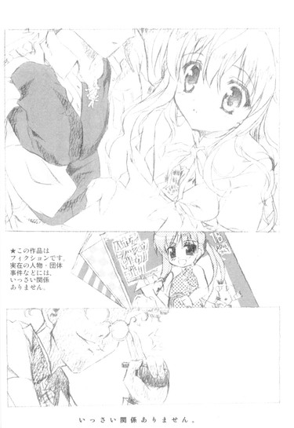
と、携帯の着信音が春香の言葉を遮った。
「ん、ちょっとゴメン」
男の人が、ポケットから携帯を取り出し耳に当てる。
「もしもし？ うん、そうだけど。ああ、そっか。うん......うん......分かった、だったらすぐ戻るから」
男の人は携帯を仕舞うと、
「ゴメン、もう戻らないとマズイらしい」
「あ、そうなのですか」
「ああ、だから俺はこれで。──これからもがんばって描くから応援よろしくね」
「？ えと......はい。本当にありがとうございました」
春香が深々と頭を下げる。
それに軽く手を振って、男の人は去っていった。結局、最後まで男の人の素性は分からないままだった。ほんと、だれだったんだろうね？
２
俺たちの入場から三時間が過ぎた。
あれからさらに五つの行列に並び、西の方のブロックにも行ってみたりもして、いちおう当初から目的としていたモノの大半をゲットしてほくほく顔の春香は、あとは何か掘り出し物を見つけるべく、今はのんびりとあちこちの店舗を見て歩いていた（もちろん俺もいっしょに）。
「裕人さ～ん、これ、かわいくないですか？」
「ん、あー、まあ」
曖昧にうなずく。いやそういうことを俺に訊かれてもな。
「ですよね？ ──うん、決めました。すみません、これ、いただけますか？」
五百円玉と引き換えに、ドレス姿の女の子が表紙の本を受け取る春香。さっきからもう何度も繰り返されている光景である。
「ありがとうございましたー」
売り子さんに見送られて、俺たちはその店舗を後にする。
「いい買い物をしました」
満面の笑顔で春香がそう言った。本当に、心から満足している顔だ。
「......よかったな」
俺には正直何がいいんだかほとんど分からない。というかどれも同じようなモノにしか見えないんだが、まあ春香が嬉しそうな顔をしてるから良しとするか（割と適当）。
「あれ、あそこにあるのって──」
と、再び何かを見つけたのか、春香がとてとてと走り出した。やれやれ、またか。
それを後ろからのんびりと追いかけながら、周りを何となく見渡してみる。
開場からそれなりに時間が経っているのにもかかわらず、ブロック内の人の勢いは全然衰える様子を見せていなかった。むしろ増えているくらいか。まるで、どでかいネズミがメインキャラクターを務める某テーマパークのように、ハデに賑わいまくっている。
紙袋を抱えてせわしなく歩き回る人、黙々と行列に並んでいる人、宣伝ポップのようなものを持って声かけをしている人、そして......メイドさん。
メイドさん。
いや、最後に何やらエキセントリックというか非日常的な単語が入ったが、これは別に何かのレトリックだとか、高度な政治的表現だとか、そういうわけではない。
本当にメイドさんが歩いているのである。
ちなみにメイドさんだけじゃない。他にも袴姿の巫女さんやお盆片手のウェイトレスさん、空手着を着た男やターミネーターみたいな黒服など、さっきから実に多種多様な格好をした人達とすれ違っている。これはたぶん、あのアキハバラのネコミミメイドさんと同種のモノなんだろうな。
最初は驚いたが、今はもう慣れた。いや、人間の順応力ってのは素晴らしいね、まったく。
達観というかどこか諦観した気分で、改めて辺りを見回す。
ほら、あそこにもまたどっかで見たことがあるにこにこ顔のメイドさんがビデオカメラを構えて──
「......ん？」
──って、あれって。
「あ、まずいです～、隠れましょう」
「え、もう見つかっちゃったの？ わわわ」
どこか見覚えのあるメイドさんは、俺の視線に気付くと慌てたようにそそくさと人ゴミの中に姿を消した。その隣には、春香によく似たちんまいツインテール娘の姿も見えたような......
............
............
......そういえば、あの二人は〝夏こみまっぷ〟の存在を知ってたんだっけか......。
てことは、この〝夏こみ〟の存在を嗅ぎつけていたとしても全然不思議じゃない。というか百六十パーセント嗅ぎつけているだろう。そして事前に嗅ぎつけた以上、あの二人の採るであろう行動は容易に想像できる。つまりは先日の葉月さんの件と同じく──
「......もう、いいや」
深く考えるとドロ沼にハマりそうだったので、この際、目の錯覚だと思うことにした。というか、正直そう思わないことにはやってられない。この人ゴミに加えあのリアルメイドさんの規格外の能力を考えると、俺にどうこうできる話じゃないだろうし。
頭を振って、視線を反対側に移すと──
「......お？」
そこには、またどっかで見たような男女の二人組の姿があった。
春香とはまた違った意味でこの場にそぐわないワイルド顔の男と、その隣にちょこちょこと仔犬のように付き従う女の子。
あれってクラスメイトの──千代と八咲さん、だよな？
遠目だが、あの顔は間違いない。
短気で凶暴。ケンカ上等で攻撃的。アキバ系の天敵。通称〝狂犬〟の名で恐れられている千代啓二。
ドジで臆病。口ベタで引っ込み思案。一家に一匹便利なパシリ。通称〝忠犬ハチ公〟の名で親しまれている（？）八咲せつな。
春香や三バカを筆頭として色んな意味で個性的なうちのクラスにあって、この二人もまた他に負けず劣らず目立つ存在である。良くも悪くも。
二人は何やら話をしているようだったが、すぐに人ゴミの中へと消えていった。
「......」
......これも、目の錯覚だよな？
そうとしか思えなかった。
あのあらゆる方面で正反対の二人が並んで歩いているだけでも充分に奇異な光景なんだが、それに加え場所が場所だった。だって八咲さんはともかく、アキバ系の天敵である〝狂犬〟千代がこんなところにいるなんて、吸血鬼が教会でロザリオを手に賛美歌を歌っているくらいにあり得ない光景である。
「うーむ......」
こういう非日常的な場所に来てるから、きっと俺の脳も驚いて機能不全を起こしてるんだろう、うむ。そうに違いない。てかそう決めた。
そう自分を（かなりムリヤリ）納得させたところで。
「裕人さ～ん」
と、春香から声がかかった。こちらに向かってぶんぶんと手を振っている。どうやらまた何か掘り出し物を見つけたらしいな。
「こっち、こっちです」
「ああ」
春香に近づいていく。
「どうですか、これもステキだと──」
ぱらぱらと見本誌をめくっていた春香の動きが、しかし突然ぴたりと止まった。
「春香？」
続いて本を見ていた目が点になったかと思うと、顔からヤカンみたいにものすごい勢いで蒸気を噴き上げた。な、何だ？壊れた？
「春香、どうした──」
慌てて駆け寄り春香の手にある本に視線を落とし──
「......あ」
そして、すぐにその理由が判明した。
なんか、やたらと肌色が多い本だった。
全体的に描かれている着衣の量が絶対的に少ないというか裸族ばかりが登場人物というかお子様お断りというか......まあ、そういったモノである。
「あ、あわあわあわ......」
春香は完全に機能停止状態に陥っていた。お嬢様だけあって、やっぱりこういうモノにはとことん免疫がないみたいだな。人の誕生日にエロ本をダースでプレゼントしてくれる、どこぞのセクハラ音楽教師とは大違いである。
「......と、とにかく、どっか落ち着ける場所に行こう」
よく見るとここら一帯そういった系統の本ばかりである。どうも、間違った区画に迷いこんじまったらしい。
固まっている春香の手から本を取り上げ、怪訝な顔でこちらを見る店の人に会釈をして、俺たちはいそいそとその場を離れたのだった。
とりあえず会場から出てみたものの、通路は相変わらずどこもかしこも人で溢れておりベンチに座ることはおろか立ち止まることすらままならないってのが現状で、とてもじゃないが落ち着いて休めるような環境じゃなかった。
なので俺たちが向かったのは外──それも高台のような場所に位置する広場（屋上展示場というらしい）だった。
どうせ外に出て休憩するのなら高いところの方が気分がいいだろうと考えたのはもちろん俺であるのだが、そこにはケムリと何とかは高いところが好きという古い格言との因果関係はないと信じたい。
「大丈夫か、春香？」
「は、はひ......」
声をかけると、弱りきった仔ウサギみたいな声が返ってきた。おまけに時折ぶつぶつと「ア、アレがこうなっていて、コ、コレがああなっていて、あ、あわわ......」みたいなことをつぶやいている。......こりゃ、かなり重症だな。
「......とにかくなんか飲んだ方がいい。オレンジジュースでいいか？」
さっき買ったジュース（一本二百円の観光地価格）をカバンから取り出す。本当なら冷えているのを買ってくる方がいいんだろうが、この状態の春香を一人で置いていくのはかなりためらわれるため、この際しょうがない。
「ほら、これ」
「す、すみません......」
差し出したペットボトルを受け取ると、こくこくと小さく喉を鳴らして飲み始めた。やはり先ほどの蒸気噴出で、かなりの水分を失っていたようだ。
「おいしいです......」
三分の二ほど飲み切ったところで、春香はペットボトルを口から離した。
「ありがとうございました。おかげでだいぶラクになったような気がします」
「そっか。ならよかった」
ペットボトルを受け取り、ちょうど俺も喉が渇いていたところだったのでそのまま飲もうとして。
「......」
「どうしました、裕人さん？」
「い、いや......」
よく考えてみれば、コレって春香が今飲んでたやつなんだよな？それはつまり今の今まで春香の唇が触れていたってわけであり、コレを俺が飲むってことはその、間接──なわけであって......
思わずペットボトルの口を見たまま考えこんでしまう。うーむ、飲むべきか飲まざるべきか、それが問題だ──
どこぞの劇作家のごとく俺が迷っていると、
「あれ？」
何かを見つけたのか春香が声を上げた。
「裕人さん、あっちの方、何だか人がたくさん集まっていませんか？」
「あ、ああ、そうだな」
とりあえずペットボトルにはフタをして（腰抜け）、春香が指差している方向を見た。
春香が見ている先。広場の中央部分だ。よく見えんが、確かに何やらやたらと人が蠢いている。
「何をやっているんでしょう？ イベントかな......」
興味を引かれたのか、春香がそっちに向かって歩き出した。少しばかりヤな予感はしたが俺もそれに従う。
するとそこにあったのは──
「わあ......」
「これって......」
......何て言ったらいいんだろうな。
そこにあったのは、ある意味でこの世のモノとは思えない光景。羽を生やした女悪魔（露出度高し）が脚を組んでイスに座っていて、ネコミミメイドがホウキを片手に闊歩し、ピンクの髪をした女の子が両手でピースをしている。その隣では中世風の鎧をまとった女騎士がポーズをとっていて、明らかに現実にはあり得ない天然色のセーラー服を着た女子高生（？）が笑顔を振りまいている。さらにそれらの周りにはカメラを構えた幾人もの男たちが、群がるように何かを話しかけながらしきりにシャッターを切りまくっていた。
「......」
そんな、ともすればこのあまりの暑さに自分の頭がヤラレちまったんじゃないかと勘違いするような、非日常のカタマリみたいな空間。
「わ～、あれは『マジカル☆でぃな～』の『エシャロッテ姫』で、あっちは『銀河アフタヌーンティー戦争』の『シナモン軍曹』ですっ」
呆然とする俺の横で、春香は興奮で目をきらきらと輝かせていた。休憩するために来たはずなのに、逆に火をつけちまったような気がするな、これは。
「あ、あの、ちょっと近くまで行って見てきていいですか？」
マタタビを目の前にしたネコみたいな、すげえマタタビを目の前にしたネコみたいな、すげえ期待に満ちた顔で迫ってくる。それを前にして、さすがにダメとは言えん。
「......あんま、ムリしないようにな。俺はこの辺りで待ってるから」
「はいっ、ありがとうございます。行ってきますっ」
返事とともに春香が走り出して。
「あ」
何かに気付いたのか、とてとてとこちらに戻ってきた。
「すみません、あの、これ持っていていただけませんか？」
あの人ゴミの中へ突撃するのにはジャマになると判断したのか、麦藁帽子と着ていたカーデイガンを脱いで、俺に手渡してきた。
「えと、お荷物かもしれませんが......」
「いや、別にいいぞ」
別にそれくらい大した荷物じゃない。......すでに俺の傍らにある、中身ずっしりの紙袋×三に比べれば。
「それじゃ、お願いしますです」
「ああ」
受け取る。脱いだばかりのカーディガンにはまだ春香の温もりが残ってたりして、微妙に心臓が痙攣したりもしたが。
「行ってきますねっ」
そして春香は水を得たメバチマグロみたいに、スキップをしながら元気に異空間の中へと突撃していき──
「──ん？」
なんか、一瞬にしてカメラを手にした男たちに周りを囲まれていた。
「ね、ねえ、キミ、ちょっと」
「写真、写真を撮らせてもらっていいかな？」
「......（無言）」
「あ、あの......」
困惑の表情を浮かべる春香に、さらに男たちが迫ってくる。
「あ、あれ、もしかしてキミ、こういうこと初めて？」
「夏コミデビュー？ あ、でも大丈夫、すぐに終わるから。別に痛くないよ」
「......（無言で近づいていく）」
何だかそれらの台詞にめちゃくちゃ殺意を覚えるのはなぜだろう？ていうか何で春香がいきなり囲まれてるんだ？確かに春香は超美少女で目立つ存在だが、これまでこんなことはなかったのに。
──と。
「お、あれって『春琉奈』様のコスプレじゃん。『ノクターン女学院ラクロス部』の」
「へー、珍しいな。あのお嬢様キャラのだろ？」
周りにいる男たちがそんなことを言っているのが聞こえた。
「でも似合ってるよな」
「だな。あのコスプレ、難度が高くて有名なのに。時々見たことあるけど、だいたいのは目劣りするっつーか、パチモン臭いのが多くてさ」
「案外、本物のお嬢様だったり？」
「はは、まさか。本物のお嬢様がこんなとこ来るはずねーじゃん。それより俺たちも見にいこうぜ」
そう笑って、男たちも春香の方へと近づいていった。
「......」
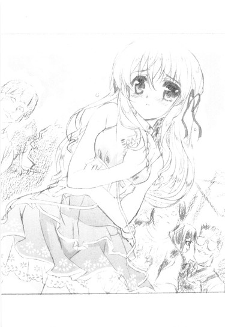
..................何となく分かったような気がする。
つまり、カーディガンを脱いだ春香のあの服装（私服）が何かアニメだか漫画だかの登場人物（お嬢様）に似ていて、それで勘違いされてるってことなのか？うーむ。普通ならあり得ない偶然だが、春香なら素でそんなことをしでかしても不思議とおかしくないような気もする。
そうこうしている間にも、春香の周りに群がるカメラ及び人（ほとんど男）の数はどんどんと増えていく。
その中でも、最初に話しかけてきた三人が特にしつこく迫っているようだった。
「ね、ねえねえ、キミ、名前何ていうの？ あ、コスプレネームでいいから教えてくれない？」
「現像できたら写真送るから、住所を教えてくれると嬉しいかな？」
「......（無言でにじり寄っていく）」
「いえ、その、ですから......」
「おお、その困り方も春琉奈様にそっくりだ！」
「うん、素晴らしい！」
「......！（無言で感激している）」
というか、問題あるのはほとんどその三人だけのようだ。他の人たちは春香の気の進まない様子を察すると、それ以上は深入りしようとせず、大人しくその場を離れていく。
「い、いいじゃん。あ、オレの名前はさ──」
「ついでに携帯の番号とかも教えてくれるとなおいいかな。あ、メアドでも可だよ」
「......（無言で携帯を差し出している）」
三人は、タチの悪い押しかけセールスのようにいつまでも春香の側から離れようとしない。
......いいかげん、このヘンで限界だな。
こういった世界のルールやマナーのことはよく知らんし、せっかく春香が楽しんでる手前余計な騒ぎは起こしたくなかったが、それにも限度ってもんがある。目の前で春香がイヤがっているのを見過ごせるほど、俺は人間ができていない。
「──あー、ちょっとスミマセン」
親からはぐれた仔ジカを追い詰めるハイエナみたいに、春香の周りをぴったりと囲んでいる三人の間に強引に割り込む。ヤツらは露骨にイヤそうな顔でこっちを睨みつけてきたが、とりあえずムシ。
「あ、ゆ、裕人さん」
春香が心の底から安堵したような顔を見せる。おまけにちょっと涙ぐんでたりもした。......これならもっと早くから止めに入ってやるんだったな。少し後悔。
「──行こう」
「あっ......」
俺は春香の手を取ると、その場から離れんと歩き出した。
すると。
「ちょ、ちょっと待てよ。あんた何なんだよ。今オレたちが写真を撮ってるところだろうが。か、勝手なことすんな」
「ボクたちの邪魔しないでくれるかな？」
「......キエロ（小声）」
当然のごとく、三人はクレームを付けてきた。
いやお前ら人に文句言える立場じゃないだろ、とは思うものの、今までのやり取りからしてまともに話が通じるヤツらにも見えなかったので、さらにムシして素通りしようかと思ったのだが。
「ま、待てって言ってるだろ！」
「あっ......」
そうもいかなかった。
男の一人に肩を掴まれ、春香の足が止まる。
ほんとにしつこいな、こいつら。
ここはできるなら穏便に済ませたかったがしかたない。お互いのためにも、間違っても春香に手を出させるわけにはいかないということで、俺は右手に持っていた紙袋（本やらチラシやらポスターやらがぎっしり）を大きく振りかぶろうとして。
「いいかげんにしなさいよねー」
と、周りからそんな声が飛び出すのを聞いた。
「どう見たってその子、イヤがってるじゃない。あんたたち、いくら何でもマナー違反しすぎだって」
いつの間にか、周囲には人がたくさん集まっていた。ギャラリーだけでなく、さっきまで周りでポーズを取っていたネコミミメイドや女騎士もいる。皆、白けきった冷たい目で春香を囲む三人を睨みつけていた。
「そうよそうよ、さっきからしつこくして。私、見てたんだからね」
「スタッフの人、呼んでこようか？」
「くっ......」
それまで真夏のゴキブリのように威勢の良かった三人も、自分たちの劣勢を悟ったのか、
「く、くそ、覚えてろよ！」
「キミの顔は覚えたからな！」
「......ウラミハラサデオクベキカ（小声）」
そんな一昔前のザコキャラみたいな捨て台詞を残して、そそくさとその場から走り去っていった。逃げ足だけはめちゃくちゃ速いな、まったく。
「......ふう」
ともあれ、どうやら大事にはならずにすんだみたいだ。
肩を撫で下ろしていると。
「あいつら、ブラックリストに載ってる要注意人物なんだよ」
集まってきた人の一人（ネコミミメイドさん）が、俺たちにそんなことを言った。
「大人しそうな女の子のレイヤーばっかり狙うんで有名でさ」
「けどなかなか面と向かって拒絶できる人もいなくて。キミ、すごいわね。ちょっとスッキリした」
「ホントホント、いい気味だったよ」
「ま、でも、ここもあんなのばっかじゃないからこれに負けずに元気にコスプレしてほしいな」
いやまあ春香のは別にそういったモノ（コスプレ？）じゃないんだが、でもその心遣いは嬉しかった。春香も感激した顔をしている。
「んじゃまたね。良かったら今度、いっしょにやりましょう」
「ばいばい」
「それじゃ」
そう言って、ネコミミメイドさんたちは去っていった。
「いい人たちでしたね......」
「ああ、だな」
素直にそう思う。
今のご時世、人通りの多い道端で倒れても傍観されて放置されることすらあるってのに。
何ていうか、現代日本では失われつつある人情と助け合いの心ってやつを、改めて感じさせられたような気もした一時だった（大げさ）。
４
それからもしばらく、買い物であちこちを回ったりイベントを見たりのんびり海を見たりしてまったりと時間を過ごし。
午後四時。
〝夏こみ〟は無事に終了を迎えた。
『ただいまをもちまして、三日間の全日程を終了させていただきます。ありがとうございました』
とのアナウンスが館内に響く中、俺たちは帰路につこうとしたのだが。
「......」
「......」
「......また、並ぶのか」
「......み、みたいですね」
臨海高速鉄道臨海副都心線（りんかい線）国際展示場駅前。
そこには、やって来た時と同じかそれ以上の人で埋め尽くされていた。
まあよく考えてみれば当然なんだよな。
いかにゆりかもめとりんかい線の二つに分散されるとはいっても、あれだけの会場を埋め尽くしていた人々がほとんど一斉に帰路につけば、そりゃこういったプチ渋滞な事態が生じるに決まっている。
「......行くか」
「......そ、そうですね」
キップ売り場で十五分、改札からホームに下りるまでに二十分、そこから乗車制限のかかった電車に乗り込むまでにさらに二十分。結局、国際展示場駅を発車するまでに合計五十五分もの時間を要した。
「うぐ......」
「きゃっ......」
おまけに、押され、揉まれ、潰されかけてようやく乗り込んだ電車内でも、さらなる混雑が俺たちを待ち構えていた。
「は、春香、大丈夫か？」
「な、何とかだいじょぶ......です......」
苦しげに春香が返してくる。
いやこれ、明らかに車載限界人数を超えてるだろ。
「ぐ......」
ドア際の春香に重さがかからないように何とか腕を突っ張らせるものの、さすがにこの人数を相手に俺が一人で対抗するのはムリがある。
電車が揺れる度にやってくる波。
第一波、第二波までは何とかこらえることができたものの、第三波にしてあえなく俺の腕は限界を迎えた。
俺と春香との間に空間を作っていた支えがなくなり──
「うわっ」
「きゃっ」
必然的に、俺と春香の身体は密着──ほとんど正面から抱き合うカタチになる。
「あ......」
「う......」
目の前には春香の小さな顔。
加えてちょうど胸の辺りに、何やらやたらと柔らかい物体が押し付けられているのを感じる。こ、これはまさか......
「あ、あの、すみません」
「い、いや......」
春香は申し訳なさそうにそう言うが、むしろ状況的にはこっちの方が果てしなくスミマセンな感じである。
と、そこで第四波。
背後から強い圧迫を受け、それに押されて春香の背中に回していた腕にも力が入ってしまった。
「あっ、や......」
「わ、悪い！」
春香の唇から漏れた小さな声に、反射的に腕を離そうとするものの、後ろから加えられるもっそりとした圧迫感の前にはそれもままならない。うう、どうすりゃいいんだ。
何とかすべく脱皮直前のツクツクボウシのようにもがいていると。
「だ、だいじょぶですから......」
腕の中の春香が、そう俺を見上げた。
「え？」
「わ、私ならだいじょぶです。今のは急だったのでびっくりしただけで、ぜ、全然苦しくなんてありませんから」
こんな超満員の電車、お嬢様な春香にはおそらく初めての経験に違いない（というか俺ですら初めてだし）。本当は苦しくないわけがないのに、健気にえへへと笑う。
「春香......」
その笑顔に、何だか強心剤でも打たれたかのように胸が苦しくなった。本来ならば弱めなければいけないところなのに、思わず腕にこもる力が強くなってしまう。
「ゆ、裕人さん？」
最初は驚いたような顔をしていた春香だったが、すぐに何やらうなずくと「えいっ」と小さく声を発して、俺の胸にぎゅっと抱きついてきた。
柔らかい感触。ふわりと漂う甘い香り。
腕の中にはすっぽりと収まるように春香の身体。
あー、なんかもうどうでもよくなってきた。
春香とずっとこのままでいられるんなら、こんな超満員電車もそれはそれでいいかもしれん......などと思いかけた時。
突如、周囲を覆っていた圧迫感が消えた。
『大崎ー、大崎ー、お降りの方は急がずに落ち着いてお降りください』
いつの間にか、終点（乗換駅）に着いていたらしい。
「あ──、す、すまん！」
はっと我に返り、春香の身体から腕を離した。
「あ、い、いいえ、こちらこそっ」
いや......俺は何をやってんだ？ いくら何だって電車の中でいきなり抱きしめるなんて......。〝夏こみ〟会場のどこか高揚した雰囲気に当てられた──ってのは言い訳にしかならんよな、たぶん。
「......」
「......」
二人して黙り込んでしまう。周囲の声や電車の音が、やたらと大きく耳に響いた。
「で、でも......」
やがて、春香が口を開いた。
「でも私......イヤじゃなかったですよ」
「え......」
「さ、さっきみたいなのも、裕人さんならイヤじゃないです。というより、むしろちょっとだけ──」
恥ずかしがるように言葉を切り。
「ちょっとだけ──ドキドキしたりもしました」
そんなことを、言ってくれたのだった。
その時の春香のはにかんだ顔は、今まで見た中で一番かわいくて。
何だか、少しだけ幸せな気分になった。
こうして、その行動の八割に混雑という二文字が伴った〝夏こみ〟は、最後に俺にちょっとした幸福をもたらして、終わりを告げたのだった。
＊
最寄り駅まで春香を送り（自宅まで送ろうとも思ったが、春香がここまででいいと言ってきかなかった）、さて我が家へと帰るかというところで。
「あれ、偶然だね、おに～さん」
「こんばんはです～」
見計らったかのように声をかけられた。
迎えてくれたのは、ちんまいツインテール娘とにこにこメイドさんの二人だった。
「こんなところで何やってるのかな～？ あ、もしかしてお姉ちゃんとデートしたその帰りとか？」
「あらら、青春ですね～」
白々しくもそんなことを訊いてくる二人を、俺は思いっきりジト目で見てやった。
「あ、あれ、おに～さん、なんか目がコワイよ～。どしたの～？」
「狂犬病にかかったワンちゃんの目ですね～」
「......二人とも、今日一日ごくろうさん」
皮肉も込めてそう言うと、
「え？ な、なんのこと？ 分かる、那波さん？」
「いえ～、さっぱりです～」
二人はあからさまに目をクロールさせた。この期に及んでまだしらばっくれる気か？
「──え～と」
やがて美夏がバツの悪そうな顔で俺を見上げた。
「やっぱり......バレてる？」
「......あれでバレてないとでも？」
そう思ってるんなら逆の意味で大したもんである。
「や、それは～」
「う～ん、一度、思いっきり目が合っちゃいましたからね～」
苦笑いをして、美夏と那波さんは顔を見合わせた。どうやらようやく観念したらしい。
「......で、いちおう何か申し開きがあれば聞くが」
「あ～、うん」
美夏が何やら微妙な顔になった。「ちょっと──気になることがあってさ」
「気になること？」
全く期待してなかったが、どうやらいちおう理由があるようだ。
「あ、もちろんおに～さんがどれだけうまくお姉ちゃんをエスコートできるかにも興味シンシンだったんだけどね」
「......」
「ん～、今回はまあまあだったかな。ちゃんとお姉ちゃんと手もつなげたみたいだし。ま、わたし的にはもう少し進んでくれてもよかったと思うけど～」
「そうですね～。せめて腕を組むくらいはしてほしかったところです。最低限として～」
「......」
「ああゆうイベントとかだと気持ちが盛り上がるから、もっとが～っといっちゃってもお姉ちゃん、きっとイヤがったりしなかったのにな～」
「吊り橋効果ってやつですね～」
きゃっきゃっと盛り上がる二人。また勝手なことを......
「──で、気になることって？」
とりあえず、この二人にそういう話をさせておくとどこまでも長くなるのは分かりきっていたため、さっさと話を本題に戻すことにした。
「ん？ あ、そっか」
不思議そうな顔をした後、美夏が真剣な表情に戻った。一瞬忘れてやがったな......
「え～と、たぶんわたしの気のせいだと思うんだけど......おに～さん、今日怪しいヤツに尾行られたりしなかった？ＳＰみたいなのとか、やたらとゴツイ男とか」
「いや、美夏たち以外に特には......」
見なかったと思う。まあ怪しいというか、普段だったらお目にかかれないような格好をした人たちならたくさん見かけたため、断言はできないが。
美夏が何かを考え込む。
「......そ～だよね。いくらなんでもそこまでしないか。でもあのお父さんだしな～」
「......お父さん？」
なんか不吉な単語が出て来た。お父さんって......先日会ったばかりの、あのマフィアのボスみたいなあの人のことだよな？
「ん～......」
小さくうなる美夏。
「──ま、いいや。いまんとこは、とりあえず気にしないでおいて」
「何だよ、それ」
そこまで振っておいて気にするなと言われても。
撫然とする俺に美夏はちっちっと指を動かして。
「いいからいいから。細かいこと気にする男はモテないんだぞ～。男の子なら、出荷直前の北京ダックみたいにどっしりと構えてなきゃ」
「......」
どういう例えだ。
「それより、もうお家に帰るんだよね？ 良かったら送っていこ～か？」
「お車、回しますよ～」
那波さんがハンドルを握るジェスチャーをしながらにっこりと笑う。何だかあからさまに話を逸らされたような気もするが......まあ、いいか。
「いや、大丈夫。歩いて帰るから」
ここからなら電車ですぐだし、途中でルコの夕食の材料も買ってかないとならないことから、申し出を辞退した。
「そっか。んじゃおに～さん、またね」
「再見です～」
二人はそう言って（なぜか那波さんは中国語）、去っていった。
その背中をしばらく見送り、俺も駅の改札へと足を向けた。
ま、美夏の言ってたお父さんうんぬんが少し気になったが、これで今回も一件落着だろう。
にしても今回はけっこう疲れた。あとは家に帰ってルコの夕食を作ったら、今日はもうゆっくりと休むことにしよう──
──と思ったのだが。
そうもうまくいかないのが、どうやら人生ってもんらしい、
近所のスーパーで八十円引きの鶏肉を買って帰宅するや否や、まるで俺を待ち構えていたかのように、玄関口に置いてある電話が鳴った。
「もしもし──」
「おに～さん!?」
受話器の向こうから響いてきたのは、ついさっきに別れたばかりの元気娘の声。
「美夏？」
「おに～さん、大変なの！ お姉ちゃんが、お姉ちゃんが......」
第八話
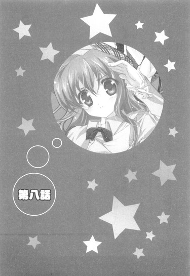
０
──まさか、こんなことになるなんてな。
俺は自宅の台所で一人、深いため息を吐いていた。
手元にあるのは、帰りがけに買ってきたニンジンと大根。朝取れ新鮮・泥付きだというそれらの皮を剥き、包丁で半月型に切り分けていきながらも、俺の心は別の場所にあった。
「ふう......」
いったい、どうしたらいいんだろうか。
今、自分の置かれている状況に理解がついていかない。いや頭では理解しているんだが、感情の方がそれについてこないっていう、アンバランスな状態である。
八十円引きだった鶏肉を適当に切り分けて、鍋の中へと落としていく。
とりあえず、今の俺にできることといったらこれくらいしかない。状況好転のための手段ではなくあくまで現状維持のための手段であるが、それでも何もやらないよりはマシだ。
それに今は何かをやっていた方が、余計なことを考えなくてすむ。
あらかじめ刻んでおいたネギを加え鍋にブタをすると、俺はガス台の栓をひねった。
ぼっ、という音とともに、青い炎が視界に入り込んでくる。
ゆらゆらとフラダンスのように揺れる炎。
それをぼーっと眺めていると、浮かんでくるのはやはりさっきのことだった。
『お姉ちゃんが、お姉ちゃんが大変なの!!』
美夏からかかってきた電話。
その第一声がそれだった。
『お姉ちゃんが、お姉ちゃんが......』
美夏の声は、聞いたことがないほど取り乱したものだった。
──まさか、春香があんなことになるなんて。
春香に起きた出来事、そしてそれが派生して生じた現状。
こんなことなら、あの時にちゃんと屋敷まで送って行ってやるべきだったか。いや、だとしても結果が変わっていたとは思えない。たとえその場に俺がいたとしても、きっと何もできなかっただろう。ただおろおろと、事態の推移を見守るだけだったはずだ。
「はあ......」
再びため息が漏れる。我ながら役に立たないことこの上ないな。
まあしかし。
いつまでも起きたことを後悔ばかりしていても始まらない。過去を悔やんでも現状は何も変わらないことから、『後悔先に立たず』ってコトワザもあるわけだしな。
とにかく、今俺がやるべきことは目の前の鍋を完成させることだ。
そう頭を切り替え、味付けをすべく棚からダシと醤油とみりんを出そうとして。
「おい裕人、まだできないのか？」
居間の方からルコの声が飛んできた。
「いいかげん待ちくたびれた。早くしろ。皆も待っている。何をそんなに手間取っているんだ」
微妙に酒気を帯びたその声にげんなりする。もう飲んでやがるな......。
「たかが鍋ごとき、材料を切ってひとまとめにして煮ればおしまいだろう。とっととやれ。客人を待たせるな」
「ごときって......」
その〝ごとき〟も作れない人間に偉そうなことを言われたくない。
「お腹空いた～、裕く～ん、早く早く～」
加えてどこぞの音楽教師（こっちもすでに酒気帯びだろう）までもが騒ぎ出す。はあ......
「......だからちょっと待ってください。まだ煮立ってないんで」
「え～、裕くん、使えないな～」
「いいから今から三分で煮立たせろ。言い訳は聞かん。やる気と気合があれば鍋も沸くはずだ。分かったか？」
「......」
......プチ酔っ払いどもが勝手なことを。
心の中で盛大に文句を言いつつ（実際に口に出すとまず間違いなく蹴られるため）、お玉で鍋をかき回していると。
「......よろしければ、何かお手伝いをいたしますが」
背後から声をかけられた。
いつの間にか、無口メイド長さんが台所の入り口に立っていた。
「葉月さん──あ、いえ、大丈夫です」
特に困っていることもなかったのでそう答える。それにこの人も今はお客さんだ。台所仕事なんかをやらせるわけにもいかない。
「葉月さんも、座って待っててください」
「──しかし、いかに裕人様のお宅とはいえ、メイドたる私が何もせずにいるのは......」
手持ち無沙汰な葉月さんは何だか居心地が悪そうだった。ううむ、何かをしていないと落ち着かない、職業病みたいなもんか？
「どんなことでも結構です。何かありましたら......」
神妙な顔をして迫ってくる葉月さん。
うーむ。そこまで言われると、頼まない方が悪いような気がしてきた。
「あー、それじゃ、これ持っていってもらえますか？」
「はい。お任せください」
ツマミ用に作ったほうれん草のゴマ和えの運搬を頼むと、葉月さんは即座に動き始めた。どことなく嬉しそうですらある。本当に生粋のメイドさんだ、この人。
「ほら、三分経ったぞ。ツマミはいいから早く鍋本体を持ってこい」
「お腹空いた～」
居間から再び催促の声。あー、もうやかましい。こうなったらまだ半煮えだが持っていっちまおう。構うもんか。死にはしないだろ、たぶん。
ガス台脇にかけてあった鍋つかみを引っ掴み、微妙に沸騰しきっていない鍋に手をかける。
居間に入ると真っ先に目に入ってきたのは、天井から釣り下げられた垂れ幕だった。
そこにはでっかい字で『祝 初めてのお泊まり♪』（おそらく由香里さん作）と書かれている。
「......」
その下にはソファでふんぞり返るルコ、なんかもう脱ぎ始めてる由香里さん、無言で皿を並べている葉月さん、そして......
「あ、裕人さん、お疲れさまです」
申し訳なさそうな笑みを浮かべる、春香（フロ上がりでぽかぽか）の姿があった。
......いや。
ほんと、なんだってこんなことになってるんだろうね。
１
「おに～さん、大変なの！ お姉ちゃんが──家出しちゃった！」
大変なの！ を十三回ほど連呼した後に、受話器の向こうで美夏がそう叫んだ。
「イエデ？」
一瞬美夏が何言ってるんだか分からず、そんなアホな答えを返してしまった。
「だから家出だってば！ 家を出ること！ ラン・アウェイ・フロム・ホーム！いきなり家を飛び出していっちゃったの！」
美夏が声を張り上げる。
それでようやく状況が掴めてきた。
「つまり......春香が家出したってことか？」
「だからさっきからそうゆってるじゃん！」
再度大声を上げる美夏。
「あ、ああ。そうだな」
「もう、しっかりしてよおに～さん！」
「悪い......」
謝る。でも。
「家出って、何でまた突然そんな......」
「それは......」
俺の言葉に、美夏が微妙に言い淀んだ。何だ、何か言い辛いことがあったのか？
「──あのね、お姉ちゃんお父さんとケンカしちゃったみたいなの。原因はたぶん......今日の、何だっけ、〝夏こみ〟？に行ったのが、お父さんにバレたことだと思う」
「え......」
......あのお父様に？
「わたしにもよく分かんないんだよ。おに～さんとさよならしたあの後、ウチに帰ったらもうお父さんとお姉ちゃんが何かを言い合ってて──」
美夏がぐすっとすすり上げる音が聞こえてきた。
「だいたいお父さんに何かを言い返すお姉ちゃんを見るのも初めてだったから、わたしたちもどうしたらいいか分かんなくて......そうしたらお姉ちゃん、そのまま出て行っちゃった。お父さんは何も言わなかったけど、床にカラフルなポスターとか本とかが散乱してたから、たぶんそうだと思う」
それは......まあ確実にそうだろう。状況証拠から考えるに。
「どうしよう......葉月さんが後を追ったんだけど、まだ見つかってないみたいなの......。わたし、もうどうしたらいいか──」
「美夏......」
受話器の向こうから聞こえる美夏の声は、それまで聞いたことがないほど不安げだった。うーむ、何だかんだいってもまだまだ子供（十四歳）ってことか。
「大丈夫だ」
俺はできるだけ優しい口調で言った。
「きっと大丈夫だ。葉月さんも探してるんだし、春香だって子供じゃない。そうそう心配するような事態にはならないさ」
「お、おに～さん......」
「な、だから落ち着けって」
「で、でも、お姉ちゃんの世間知らずは幼稚園児並みだよ。おに～さんも知ってるでしょ？」
「......」
妹（十四歳）に幼稚園児並みと明言される姉（十六歳）。いや確かにそれは全く否定できんのだけどさ。
「──とにかく、今から俺も探しに出るから」
「え、ほ、ほんとっ？」
「ああ。どのみち、放っておくわけにはいかないだろ」
美夏が言うみたいにそんなすぐさま心配するような状況に陥るとまでは思えんし、あの高性能メイドさんがすでに探しているのなら俺が出る幕なんてないのかもしれないが、それでもただ家でじっとしているのは落ち着かない。
「だからどこか春香の行きそうな場所に心当たりは──」
とその時だった。
カタリ。
玄関ドアの向こうで何やら人の気配がしたような気がした。
まさか
それはもうほとんど直感だった。
「美夏、悪い。後でまた連絡する！」
「え、ちょっと、おに～さ──」
美夏の言葉を待たず放り投げるように受話器を置いて、ダッシュでドアを開けると──
「あ......」
そこには、迷子の仔犬のように玄関前をうろうろしている春香の姿があった。「あ、あの、これはその......」
慌てた表情を浮かべる春香の格好は、つい一時間前に別れた時のままだった。本当にそのまま飛び出してきたんだな。
「その、私、私、あ、あの......」
しどろもどろになりながら何かを言おうとする春香。だけどうまく言葉にならないらしい。
なので、俺の方から言った。
「──あー、ムリしなくていい」
「え......？」
「何ていうか、だいたいの事情は美夏から電話で聞いて分かってる。だから、今はムリして言わなくてもいい」
「あ......」
途端に、春香の目からぽろぽろと涙がこぼれた。
「ご、ごめんなさい......わ、私、気付いたら家を飛び出していて、そ、それで前にクラス名簿で裕人さんの住所を見たのを覚えてて──」
「あー、だからいい、いいってのに」
しゃくりあげる春香の肩に手を置いた。「いいから、泣くな」
「ゆ、裕人さん......」
俺の胸にしがみついて、春香がわんわん泣き出した。甘い香りと柔らかい感触。だけど不思議と不謹慎な気持ちにはならなかった。......まあ、さすがに事情が事情だしな。
震える春香の背中を撫でてやる。
ご近所に見られたら確実に何か大きな誤解（「聞きまして奥様、綾瀬さんとこの裕人くんが玄関先で女の子を泣かしてたんですって」「まあ、初耳」「大人しそうな顔してやりますわね！」「わたくしたちも気を付けませんと」「目が合ったら妊娠させられますわよ」）を招きそうな光景だったが、この際そんなことはどうでもいい。
そのままどれくらい経ったか。
「──〝夏こみ〟に行ったのが、知られてしまったんです」
やがて、胸の中の春香がぽつりとつぶやいた。
「どうしてだかは分かりません。だけどお屋敷に戻ったらお父様が怖い顔で待っていて......『今日、だれとどこへ行っていた？』と訊かれました。私、とっさには答えられなくて......黙っていたら、買ってきた紙袋を強引に取り上げられてしまいました。中身を見るとお父様の顔色が変わって──」
「......」
あの『ドジっ娘アキちゃん』やら『ダメっ娘メグちゃん』やらのアレを見られたのか......
そりゃ、何の予備知識もない親なら顔色も変わるかもしれん......が。
「......そのまま、床に叩きつけたんです。今日買ってきた本を、ＣＤを、ポスターを全て、思い切り......。まるでゴミでも扱うみたいに──ぐすっ」
よっぽど悲しかったんだろう、その時のことを思い出したのか、春香の声にまたじんわりと湿り気が混じり始めた。
「でも、でもそれだけじゃないんです」
「え？」
まだあるのか。
「それだけでなく......裕人さんのことも──」
「俺のこと？」
「......はい。『今のお前はあの男に騙されているだけだ。何だ、この下劣で低俗な駄本と俗書の類は。見るに耐えん。............おのれ、こんな訳の分からん趣味に春香を引きずり込むとは──あのクサレ外道が！』って......」
「......」
......いや、クサレ外道って。
「他にも......ひどいことばかりを、いっぱい、いっぱい口にしていました。......私、私のことは何て言われてもいいです。それだけなら、まだガマンできます。でも、せっかくみなさんが〝夏こみ〟に向けて一生懸命に作った本のことや、今日私に付いてきてくださった裕人さんのことを悪く言うのだけは許せなくて、それで......」
春香が、ぎゅっと俺の服を握る。
「......気付いたら家を飛び出していました──。だけど飛び出してはみたものの、行くところも頼る人も他にいなくて、私──」
「......」
「ご、ごめんなさい......いきなり押しかけてきてこんなことを言って、迷惑なのは分かっているんですけど、でも......」
「春香............」
なるほど。
美夏から聞いただけじゃいまいち分からんところもあったが、これでほぼ完全に事情は理解できた。確かにそういう話なら、春香が家出してくるのもムリはないとも思える。
ともあれ、いつまでもここで（玄関前）こうしていてもラチがあかないだろう。
「とりあえず、中に入ろう」
さらに詳しい話を聞くにも、これからどうするのかについて考えるにも、この場所（玄関前）はあからさまに不適切である。
ゆえに春香を家の中へと招き入れようとして。
「......やはりここでしたか」
門の辺りから、聞いたことのある声が響いた。
「葉月さん......」
見るとそこには、乃木坂家のメイド長さんが一人、影のようにひっそりとたたずんでいた。いや春香はともかくなぜこの人までウチの場所を知ってるのか......って、訊くだけ野暮なんだろうな、きっと。
「春香様......探しました」
「......私を、連れ戻しに来たのですか？」
春香が険しい顔になる。
「私......お屋敷には戻りません。お父様の言うこと、やっぱり納得できないです。だからお父様が考えを変えるまでは、私、帰りません。たとえ葉月さんの言うことでもこればかりは──」
「......いえ」
だがその言葉に、葉月さんは静かに首を横に振った。
「それが春香様の意志だというのなら、私はそれに従うまでです。春香様が戻りたくないと言われるのなら、ムリにとは申しません」
「え......」
「ただし、春香様をお一人にしておくわけにはいきません。よって私もごいっしょさせていただきますが、それはよろしいですね？」
「それって......」
「私は、春香様に仕える者ですから」
「は、葉月さん......」
葉月さんの言葉に、春香が再び目をじんわりとさせる。それに葉月さんが優しい眼差しで応えた。おお、なんかいい光景だ......
「おい、裕人」
と、そこで家の中から声がした。
「さっきから玄関で何をごちゃごちゃとやっている。近所迷惑だろうが」
続いて、目の前の感動的シーンをぶち壊すかのように、冬眠から覚めたクマのような足取りでルコがのっそりと姿を現す。
「よく分からんが、新聞の勧誘員か何かなら手刀でもくれて追い返せ。私が許す。そんなことよりハラが減ったからさっさと食事を──む、そこにいるのはもしかして」
「あ、こ、こんばんは......です」
春香が、ぺこりと頭を下げる。
それを見て、ルコが破顔した。
「おお、やはり乃木坂さんか。久しぶり......というほどでもないな」
「えと、一週間ぶりくらいですね」
「むう、それくらいだな」
楽しそうに笑うルコ。寝起き（おそらく）にこんな顔を見せるなんて、やっぱり春香のことはかなり気に入ってるみたいだ。
「──で、そちらは？」
春香の隣のメイドさんに目を遣る。
「私は桜坂葉月と申します。春香様のお傍に仕えさせていただいている、メイドです」
「おお、そうか。私は綾瀬ルコ。裕人の姉だ」
「ルコ様ですね。よろしくお願いいたします」
「こちらこそよろしくな」
本物のメイドさんを目の前にしても顔色一つ変えずにそう言って笑う姉。やはりこの姉は、何か神経の大事なところが切れているような気がしてならない、
「それで、今日はどうしたんだ？ こいつに用でもあって来たのか？」
「え、それは、その......」
春香がうつむく。
「何だ、どうした？」
「あー、それは」
怪訝そうな顔になったルコに、俺は事情を簡単に説明した。もちろん春香の秘密の具体的内容やら俺と春香の関係やらについてはうまく隠して。
「そうか......」
それを聞いたルコ。二秒ほど何かを考え込む素振りをすると。
「──事情は分かった。ならば今晩はウチに泊まっていくといい。何もないところだが、部屋はいくつか余っているからな」
そんなとんでもないことを言い出した。
「ル、ルコ、何を!?」
「何とは？」ルコが首を傾げる。
「だから、今、何て？」
「特に行く所がないのならウチに泊まっていけと言ったのだが？どうせ両親は仕事で帰ってこないから部屋は空いている。何か問題でもあるのか？ないだろ？」
さらりと返してくる。
「いや......」
あるだろ。
ルコと葉月さんはともかく、仮にも俺と春香はお年頃の男女である。そんな俺たちが、いくら二人きりでないとはいえ、同じ屋根の下で一夜を過ごすってのがどういうことか、このバカ姉は分かって言ってんのか？
「別に珍しいことではなかろう。いつも由香里やら信長やらが泊まりに来ているのだから。それとも何だ、お前はあの二人は良くて乃木坂さんは駄目だと言うのか？」
......たぶん、分かってねえな。
「そうじゃなくて......」
というか、春香を由香里さんや信長と同カテゴリーに置く時点で、根本的に俺たちの認識にはマリアナ海溝並みの深さのズレがあると言わざるを得ない。
「......では何だと言うのだ？ 言いたいことがあるのならはっきりと言え。奥歯にモノが挟まったような言い方は気に入らん」
「だからだな......」
「あ、あの......」
おずおずと口を開いたのは春香だった。
「お気持ちは嬉しいのですが、やっぱり裕人さんたちにこれ以上ご迷惑をおかけするのは......」
俺たちの顔を見て、そんなことを言う。
「いや、それはない！」
慌てて答える。
「ですが......」
主人の様子を窺うチワワみたいな顔をする春香。
別に俺だって、春香たちが泊まることがイヤなわけじゃない。ただ春香たちの側から考えた場合に、色々と問題があるんじゃないかと思って異議を唱えてみただけなんだよ。
「とにかく、迷惑ってことはない！それは全然、全く、これっぽっちもないぞ！ていうか、むしろ嬉しいくらいだ！」
「えっ......」
春香が目を丸くする。「え、えと、それって......」
「あ、え......」
あ、あれ、俺、今......最後に何を言った？ 思わず本音の方が......？
「──ふむ、決まりだな」
ルコが満足そうに大きくうなずく。
「裕人、まだ何か言うことがあるか？」
「............」
あるわけなかった。
「というわけだ。二人とも、心置きなく泊まっていくといい」
「本当に、よろしいのですか......？」
春香が俺の顔を見上げた。
「ああ。春香さえいいなら」
「あ、ありがとうございます！ 不束者ですが、どうぞよろしくお願いしますっ」
微妙に間違ってる台詞とともに、春香が勢いよくがばっと頭を下げる。......まあ、どうにかなる......といいんだが。
「──では、まずは鍋だな」
「は？」
アホ姉が、また意味不明なことを言い出した。
「親交を深めるためにはまず鍋だろう。社会の常識だぞ？そうだな、由香里も呼ぼう。どうせなら大勢の方が楽しい。──まあ乃木坂さんに、桜坂さんだったか、中に入ってくれ」
「あ、はい。お邪魔します」
「失礼いたします」
ルコの言葉を受けて、春香と葉月さんが綾瀬家の敷居をまたぐ。
「というわけだ、裕人、今から鍋を作れ。すぐに作れ。命令だ」
「鍋って......本気なのか？」
この夏の真っ盛り、正気の沙汰とは思えない。
「ああ。この間はお前のせいでカニ鍋を食べ損なったからな。とはいえ、今回は急だからカニとは言わん。鍋なら何でもいい。お前ならできるだろう？」
「......」
そりゃできるがさ......
「そうだな、私たちはその間にフロにでも入っておくことにしよう。食前のフロは胃腸の働きを適度に活性化させてくれる。──では裕人、後は任せたぞ。さあ行こう、乃木坂さん、桜坂さん」
言いたいことだけ言うと、春香と葉月さんの背中を押して、ルコのヤツは洗面所の方へと消えていった。
「......」
......どうやら、もはや俺に拒否権はないらしい。まあそんなもん、この姉の前では生まれた時からきれいさっぱり存在してないって話もあるが。
かくしていつの間にか、春香たちの我が家への宿泊及びそれに伴う歓迎鍋パーティーの開催が決定されたのだった。
２
「はーい、それじゃみなさん、グラスは行き渡りましたか？」
由香里さん（ルコが呼んでから僅か五分でやって来た。ヒマなんだな、この人......）の楽しげな声が、居間に響き渡る。
「それではこれより、『春香ちゃんとメイドちゃんが綾瀬家にお泊まりすることになっちゃったパーティー』を行いたいと思います。今日はみんなで飲んで飲んで飲んで騒いで騒いで騒いで、日頃の鬱憤を遥かイスカンダルの彼方まで吹き飛ばしちゃいましょう。もちろん無礼講です、セクハラも軽度のものならオッケ～。イエ～イ！」
仮にも教育者にあるまじき発言である。......てか、〝メイドちゃん〟？
「それじゃ、春香ちゃんの初めてのお泊まりを祝しまして、かんぱ～い！」
「うむ、乾杯」
「か、かんぱいです」
「......（無言でグラスを掲げている）」
「............乾杯」
打ち合わせられる五つのグラス。
そして宴が始まった。
「は～い、上代由香里二十三歳、今から一気しま～す」
「おお、いけいけ」
半脱ぎ音楽教師が、一升瓶を片手に立ち上がる。牛乳を飲む時のように腰に片手を当てると、そのままためらうことなくそれに口をつけた。
「......ごきゅ......ごきゅ......」
一升瓶の中身が、みるみるうちに減っていく。
「ほう、以前よりも速度が上がっているな。新記録か？どこかで特訓でもしていたようだな。──これは私も負けてられん」
その様子を見ていたアホ姉も同じように立ち上がると近くにあった一升瓶を引っ掴み、
「......ごっ......ごっ......ごっ......」
やはりラッパ飲み。
「......」
アル中二人は、さっそく飛ばしまくっていた。飛ばしに飛ばしまくっていた。
すでにその一角だけ、なんか近寄りがたい異空間が形成されている。
ぷはーっと、二人が同時に一升瓶から口を離した。
中身は当然カラ。
その所要時間、僅か三十秒だった。
「なかなかやるわね、ルコ」
「ふ、お前もな、由香里」
空になった一升瓶の傍らで、がしっと腕を交差させる二人。
戦いの後に、何やら友情が生まれていた。
......
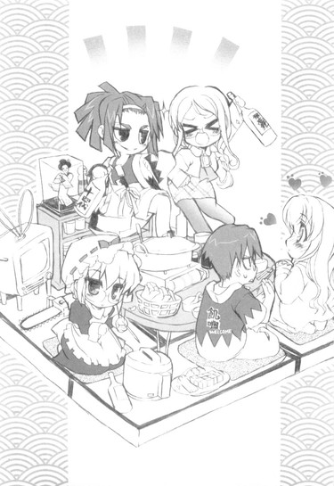
............
とりあえず。
あの区画は永久放置決定ってことで。
「え、えと、裕人さん、これって......」
暴走するアホ姉とその親友を見て、春香がエリマキトカゲに初めて遭遇した生物学者みたいな表情をした。
「あー、アレはだな......」
うーむ、何と説明すべきか。由香里さんの方はともかく、考えてみれば春香はヤツのいいところ（秘書モード）しか見てないからな。ヘタなことを言って夢（？）を壊すのもしのびない。
ところが。
「────ステキです」
「............は？」
「ルコさんってお酒も強いんですね......。うん、やっぱり秘書さんくらいになると、お酒も強くないとダメですものね。そのためには日頃からの鍛錬を欠かさない......とっても努力家だと思います」
キラキラとした目で、春香はそんなことを言い出した。いや鍛錬って......アレ（快楽的飲酒）には欠片たりともそんな高尚な意味合いはないと思うんだが。
「私もいつか、あんな風になりたいと思います」
「......」
......まあ、いいか。
何だか夢見る乙女な今の春香に何を言ってもムダそうだし、それに放っておいてもそのうちヤツの本性に気付くだろう。あのアホ姉がいつまでもボロを出さずにいられるわけがない、うむ。
「......あー、それより食おう」
そんなこと（ルコの評価）よりも、むしろそっちの方が重要だった。
あまり煮すぎると肉が固くなってしまうため、俺はそう提案した。
「そのヘンとか、もういい具合に煮えてると思うぞ」
「あ、じゃあ、裕人さん、よろしければお肉、取りましょうか？」
春香が、小鉢片手にそう訊いてきた。
「あ、悪い。んじゃ頼む」
「はい。ついでに、お野菜とかも取っちゃいますね」
うなずき、どことなく嬉しそうに、次々と俺の小鉢に肉やら野菜やらをよそっていく春香。
「春香様、そういった雑事は私が......」
メイドさんの言葉に、しかし春香は首を振った。
「いいんです、これくらいはやらせてください。裕人さんにはとってもお世話になっていますし、それに......私がやりたいんです」
「ですが......」
何かを言いたそうな葉月さんに、春香がにっこり笑ってこう付け加えた。
「葉月さんも、たまにはゆっくり休んでください。ここはお屋敷じゃないんですし、少しくらい羽を伸ばしてもらってもバチは当たらないと思います。あ、葉月さんの分も取りますね」
「......そこまで言ってくださるのでしたら。分かりました。お願いします」
渋々といった感じに、葉月さんがうなずいた。
やっぱりこの人、常時働いてないと落ち着かない人のようだ。こういうのもワーカーホリックというんだろうか。あるいはメイドホリック？......いや、それはなんか意味が違うか。
「はい、裕人さん、どうぞ」
「お、さんきゅ」
「葉月さんも」
「......ありがとうございます」
肉と野菜が均等に盛り付けられた小鉢を俺たちに渡すと、それから自分の分も盛り付けて、春香がテーブルの前で手を合わせた。
「それでは、いただきます」
「......いただきます」
葉月さんもそれに続く。
そういえばまだ食前の挨拶すらしてなかったんだっけか。いきなり「カンパイ！」から始めてそのまま一瞬にして別世界へと旅立っていったアホどもの印象があまりにも強すぎて、すっかり忘れていた。
「あ、このお野菜、美味しいです」
春香が大根を食べながら言う。
「ああ、なんか無農薬のやつらしい」
「......無農薬」
葉月さんの目がきらんと光った。
「......裕人様、それはどこで買っていらっしゃるのですか？できれば私どもの厨房にも導入したいのでよろしければ教えていただけると──」
どうも、メイドさんとしての血が騒ぐらしい。
「そういえば、このお鍋って裕人さんが作ったんですよね？」
「ん、まあな。大したもんじゃないが」
料理のスキルは、数ある家事の中でもかなり初期に習得したものの一つである。......そうしないと、生命にかかわるような家庭環境だったってのがその理由だが。
「いいえ、そんなことないです。このお鍋、とっても美味しいですよ。私、お料理ができる男の人って、すごいと思います」
春香の目はきらきらと輝いていた。
「そ、そうか？」
「はい。さすが裕人さんです」
「あ、あー、さんきゅ」
急ごしらえで作った取り立てて特徴のないただの鶏鍋とはいえ、褒められれば悪い気はしない。何となく気恥ずかしくなって、俺は目の前のメイドさんに視線を移した。
「......お婿さんに、ぴったりですね」
葉月さん、ぼそりと問題発言。
「......」
「？ ......何か？」
「いえ......」
この人はほんと、分かってるんだか分かってないんだか......
ともあれ。
そんな感じに、しばらくはのんびりまったりとした夕食風景が続いていたのだが。
「うふふ～、裕く～ん」
そんな和やかな雰囲気も、長くは続かなかった。
「な～に三人だけでアットホームな雰囲気を作ってるのかな～。ていうか男一人女の子二人の簡易ハーレム？ひゅ～ひゅ～、私たちも、そっちに混ぜてよ～」
「ふむ、少し詰めてもらえるかな」
二人で一気飲みをするのに飽きたのか、すでにけっこう出来上がった酔っ払いどもがこちらに加わり始めたことから、状況が変わった。
「ねね、私、裕くんに色々と訊きたいことがあったのよね～」
にじり寄ってきた由香里さんが、俺と春香の顔を見比べてにやりと笑う。......いや、とてつもなくヤな予感がするんですが。
「訊きたいこと、ですか......？」
「ええ、そう。例えば春香ちゃんとのこととか、春香ちゃんとのこととか、春香ちゃんとのこととか～」
「......」
......やっぱり。
「だって～、気になるじゃない。ルコに呼ばれて来てみれば、なぜか春香ちゃんがいるし。まあ事情はだいたい分かったんだけどさ～。でもいつの間にそこまで二人は仲良くなったのか、詳しく知りたいな～？ほれほれ、いいから包み隠さず全ておねいさんに話してごらんなさい、うふふ♪」
一升瓶をマイク代わりに、ワイドショーの芸能レポーターみたいな笑顔で迫ってくる。
「いや、だから春香とは別にそんなんじゃなくて......」
「へー、春香、とか名前で呼んでるクセに？」
「ぐ......」
相変わらず痛いとこばかりをついてくる。その鋭さをもっと別のところで活かせば、今頃カレシの一人や二人くらいできてるだろうに。
「......だいたい、何で由香里さんにそんなこと話さなきゃなんないんですか」
「ん～、だって私はいちおう担任だし～。それにほら、私は裕くんのこと好きだから、興味あるのよね～」
「......」
「愛してるわよ？ うん、ラヴ♪」
「......」
この人は真顔でウソを吐きまくるからタチが悪い。ったく、そんなトンデモ話、いったいだれが信じるってんだ──
「おお、由香里、そうだったのか？」
「えと......らぶ？」
「裕人様、年上殺しですね」
「......」
──三分の二が信じたみたいだった。
というか残りの一人（春香である）は、信じる信じない以前に、由香里さんの話の内容を理解してないようだし（天然）。
「とにかくー、裕くんは春香ちゃんのこと、どう思ってるの～？」
さらにしつこく由香里さんが迫ってくる。
「だから、春香とはただのクラスメイトだって──」
「ただの......クラスメイト」
と、なんか微妙に悲しそうな顔をしている春香が目に入った。「ただの......クラスメイト」
そんな、二回も言わんでも。
「......う、いや、ただのってことはないが......」
「じゃあ何なの？ やっぱ特別ってこと～？」
「ふむ、それは私も興味があるな」
「......同意します」
ルコが楽しそうに口元を上げ、葉月さんがじいっと真っ直ぐに視線を送ってくる。
「さあ、大人しく吐いちゃいなさいな、ラクになれるわよ～」
「由香里が義妹になるのと乃木坂さんが義妹になるのとでは、エリシュオンとタルタロスほどの差があるしな」
「......私には、春香様のメイドとして裕人様の気持ちを知る義務があります。ええ、けして下世話な好奇心などからではありません」
目をギラギラと輝かせながら顔を寄せてくる年長三人組。
おまけに。
「......（どきどき）」
テーブルの向かいでは、春香までもがエサを待つ小鳥みたいな期待に満ちた目でちらちらとこっちを見上げていた。
......どうやらこの場に俺の味方はいないらしい。
「うう......」
じりじりと、周りを女四人に追い詰められていく。......まずい、このままだと流されるままにあることないこと吐かされそうだ。何とか話を逸らせないもんか......
必死に逃げ道を探していると。
じりんじりんじりん。
廊下で、電話（レトロ音）が鳴っているのが聞こえた。
「あー、ちょっと俺、電話に出てきます」
地獄に仏、救いの女神とはまさにこのことである。この機会を逃さず、俺はサバンナでライオンから逃げるインパラのごとき速さで席を立った。
「あ～、逃げた」
由香里さんが不満そうな声を上げる。
「むう、敵前逃亡は銃殺刑だぞ」
「......電気イス（ぽそっ）」
......その後に続いた果てしなくコワイ言葉（ｆｒｏｍルコ＆葉月さん）は、とりあえず聞かなかったことにしよう。
「はい、もしもし──」
「おに～さん！」
受話器を耳に当てると、いきなり飛び込んできたのは、耳に響くでっかい声。
「もしもし、もしもし、聞こえてる、おに～さん！」
「あ、ああ、美夏か。そんな大きな声でどうしたんだ？」
救いの女神は、ちんまいツインテール娘だった。
「どうした、じゃないよ！ さっきはいきなり電話切っちゃって、後でかけ直すとか言ったきり全然連絡よこさないし、心配してたんだから！」
「あ──」
そういえばそうだったか。色々と事態が急展開（春香がやって来たり葉月さんが追いかけてきたり鍋を作ることになったり）だったんで、すっかり忘れてたな。
「あー、悪い。こっちも色々忙しくて......」
「そんな言い訳はどうでもいいからっ！それより、お姉ちゃんはどうなったの!?何か手がかりは見つかったの!?」
受話器の向こうで美夏がまくしたてる。
「あ、ああ、実はな──」
美夏にこれまでの経緯を一通り説明すると。
「......見つかったんだ、お姉ちゃん。良かった......」
心からほっとしたような声が受話器の向こうから漏れた。本当に春香のことを心配してたんだな。連絡が遅くなってちょっと悪いことをしたか。
「で、お姉ちゃん、これからどうするつもりだって？」
「それなんだが......とりあえず今晩はウチに泊まっていくことになると思う」
先のことは分からんが、おそらくそれはもう確定事項だろう。
「そっか。ん、分かった。それならこっちの方はうまくゴマかしとくから。おに～さんのとこにいるなら安心だしね。あ、でも──」
「？」
「こうゆうのってどうなんだろ？ 年頃の男と女が一つ屋根の下って、もしかしたらそっちの方がずっと危なかったりして？」
「あのな......」
「プチ同棲？ 一気にお義兄さん？てゆ～かパパ？きゃっ♪」
「......」
......どういう飛躍だ。てか言ってることのレベルが由香里さんと変わらない。いやこの場合、由香里さんのレベルが美夏と変わらないと言うべきなのか。
俺が黙っていると。
「な～んて、あはは、じょ～だんじょ～だん」
美夏が笑いながらそう言った。どうやら軽口を叩けるくらいには元気になったようだ。まあ、沈んでるよりはこっちの方が美夏らしくていい──
「あ、でも半分くらいは本気かな。だって何だかんだで、おに～さんも男の子だし」
──かどうかは、微妙だな。いや、かなり。
「......はあ。他に話がないならこれで切るぞ」
一気に疲れた気分になりそう言うと。
「あ、ちょい待って、こっちも色々分かったことがあるから」
美夏が真面目な声になって。
「あのね、那波さんにも助けてもらって、あれからちょっと調べてみたの。何でお父さんが〝夏こみ〟のことを知ってたのか、どうしても腑に落ちなかったから。────お父さん、やっぱ密偵を放ってたみたい」
いきなりそんなことを告げてきた。
「み、みってい？」
「うん、密偵」
この平和な現代日本では聞き慣れない、というか聞き慣れたくもない言葉である。
「えっとね、お父さん直属の黒服軍団で、〝黒犬〟ってゆうの。わたしもよくは知らないんだけど、そういう人たちがいるみたい。で、たぶん、あのコンクールの後あたりからお姉ちゃんの周りを調べさせてたんだと思う」
てことは一週間くらい前からか。しかし世の中には、探偵とかを使って自分の娘の素行調査をする父親もいるとは聞くが、まさか直属の〝密偵〟とはね。相変わらず乃木坂家はやることのスケールが違う......って、そこに納得してる場合でもないな。
「けど、親父さん、何だってそんなことを......」
「ん～、たぶん、おに～さんと会ったからじゃないかな？」
美夏がさらりと原因をそう評した。......俺？
「今までお姉ちゃんがコンクールに男の人を呼ぶことなんて一回もなかったからさ。それで気になったってのは十分に考えられるよ。ま、もともとお姉ちゃんの趣味のことも薄々は疑ってたみたいだからね。これ幸いと二つとも潰しにかかったんだと思う」
「つ、潰しにって......」
......潰されるのか、俺。
何となく、インドゾウに踏み潰されるアリの図（もちろんアリが俺な）を思い浮かべてしまった。......てかそんなジェノサイド寸前な状況で、俺はこれからどうすべきなんだ？
「──ん～、とりあえず、二十三時間かな」
受話器を握ったまま絶望に暮れていると、美夏が突然そんなことを言った。
「おに～さん、とりあえず二十三時間だけ、時間稼げる？」
「......どういうことだ？」
「んー、まあ簡単に言えば、今から二十三時間、明日の夜くらいまでお姉ちゃんたちをそっちでかくまっておいてほしいってことなんだけど。だいじょぶ？」
「それは平気だと思うが......」
どうせ今晩はウチに泊まっていくことが決定している。その期間が明日の夜まで延びるくらい、大した問題じゃない。
ただ、その二十三時間（半端）を稼ぐことが果たして何を意味するのか、俺にはさっぱり分からなかったりする、
「明日になればね、強力な援軍が到着する予定なの」
美夏が言った。
「......援軍？」
「そ、超強力な無敵の最終兵器。だけど明日の何時頃に到着するかはちょっと不確定だから、余裕を見て夜までかくまっててもらえば助かるかな～って」
なるほど、そういうわけか。だが。
「......最終兵器？」
って、なんなんだ？ あの大魔神みたいな春香のお父様に対抗できるモノなんて、とてもこの世に存在するとは思えんのだが......
「ん、それはヒ・ミ・ツ♪」
受話器の向こうで、美夏がそうイタズラっぽく笑った。
「でもアテにしてていいよ。効果のほどは保証するから」
「......」
いまいち不安だが、どのみち、俺にはその援軍とやらをアテにするしかない。潰されんためにも。
「じゃ、そうゆうことで。こっちもこっちで色々とやっとかないといけないことがあるから、もう切るね」
「ああ、またな」
「ん、ばいば～い」
受話器を置こうとして。
「あ、そだ、おに～さん」
「ん？」
「初めての夜なんだから、ちゃんとお姉ちゃんに優しくしてあげてね♪」
「......」
「......」
「......美夏」
「なーに？」
「......耳年増」
それだけ言って、俺は受話器を置いた。
さて、居間に戻るとまたさっきみたいな尋問が待っているのかと思うとかなり気が進まなかったのだが、さりとてあの中に春香を残しこのまま自室へと引きこもるわけにもいかなかったので、覚悟と勇気を振り絞って、酔っ払い二人とメイド長さんが待つ居間へと戻ったところ。
「く～......く～......」
「......ぐぅ......」
「............」
「......す～、す～......」
居間は真っ暗になっていた。
ていうか、みんな寝ていた。
「......」
なんだか微妙に取り残された気分だった。「......何も四人全員で寝なくても」
「私は、起きていますが」
「うおっ!?」
いきなり声がした。
「は、葉月さん......？」
「それと、正確には眠っているのは春香様お一人です。あとのお二人は、アルコールの過剰摂取で意識を失っているという表現が正しいと思われます」
「......」
そんな違い、はっきり言ってめちゃくちゃどうでもいいんだが。
てかそれ以前に、何だってこの人は暗闇の中で微動だにせずに、蝋人形みたいに無言でソフアに座ってたりするんだ？
「申し訳ありません。灯りを点けたり、大きな音を出したりすると、春香様が起きてしまわれるのではないかと思いまして」
葉月さんはそう答えた。とことん春香優先の人なんだな。......にしたって、もう少しやりようはある気がするが。
「はあ......まあ事情は分かりました」
「分かっていただけて、何よりです」
「......。──それより春香を何とかしないと」
酔っ払い×二はともかく、このままここで寝かせておくわけにはいかないだろう。
すると葉月さんが改まった口調で。
「そのことなのですが......春香様のことは、裕人様にお願いしてもよろしいでしょうか？」
「俺に？」
「はい」
「それはいいですけど......」
意外だな。てっきりこのメイドさんのことだから、何を差し置いても自分で春香の世話をすると言い出すものだとばかり思ったが。
俺の表情からそんな内心を読み取ったのか。
「私がお世話をしてさしあげたいのはやまやまなのですが、まだやることがありまして......」
葉月さんはそう言うと、メイド服の裾をふわりと翻した。
「......私は、この付近を巡回してまいります」
「巡回？」
また聞き慣れない単語を。
「......はい。春香様の身辺の安全確保も、メイドたる私の役目です。ここはお屋敷と違い、セキュリティシステムに若干の不安要素があるようなので......」
「まあ、それは......」
不安があるというか、そもそもセキュリティシステムなんてブルジョワなもんはこの家には存在しない。あってせいぜいルコの秘蔵の刀剣コレクションくらいである。
「そういうわけで、行ってまいります」
「はあ、行ってらっしゃい」
「──春香様をよろしくお願いします」
そう静かに言うと、葉月さんは音もなく居間から出て行こうとして。
ごんっっ......！
閉まっていた（俺が入ってきた時に閉めた）ドアに、思いっきり顔面を強打した。
「......っ」
のけぞる。
メガネが吹っ飛ぶ。
めちゃくちゃ痛そうだった。
「だ、大丈夫ですか？」
「............問題、ありません」
いや、そんな目に大粒の涙を浮かべて言われても。
「.........全く、問題ありません」
落ちたメガネを拾い上げながら、葉月さんは再度そう言った。
「......私としたことが見苦しいところをお見せしてしまいました。今のことは、どうか忘れていただけると──」
「は、はあ......」
「──助かります。それでは私は行ってまいります」
ぺこりと一礼して、再び歩き出す葉月さん。だが──
「......葉月さん」
「はい」
「......そっち、台所」
「..................」
葉月さんの動きがぴたりと止まった。その姿勢のまま、きりきりと半ば強引にドアの方に身体を向け直し、真顔でこう言った。「............フェイントです」
「......」
......フェイントって、あんた。
「......もしかして葉月さん、酔ってます？」
「......」
「......」
「..................いえ、そんなことは」
その間は何だ。
まあ考えてみれば、俺が電話に出ている間にあの限りなくタチの悪い酔っ払いどもの渦中にいたんだから、それ相応に飲まされていても何ら不思議じゃない。
しかし葉月さんはあくまで認めない。
「......何でもありません。今のはちょっとした幻覚......英語で言うところの、ハルシネーションです」
「......」
いや英語うんぬんはともかくとして、そっち（幻覚）の方が遥かにヤバイような気もするんだがな。
「......」
「......」
「......では、行ってまいります」
やがて葉月さんはそう言うと、居間のドアを開けて、今度は玄関とは反対方向へと歩いていった。......うーむ、相変わらず掴みきれん人だ。まああの超スペックのメイド長さんなら、何だかんだで大丈夫だろうけど。
だからそれはさておき。
こっちも、頼まれたからにはちゃんと春香の面倒を見なくちゃなるまい。まあたとえ頼まれなくても、春香をこんなところ（酒の匂い漂う劣悪空間）で寝かせるつもりはない。が。
ソファで気持ち良さそうに寝息を立てている春香。
暗闇の中、月の光に照らされて横たわるその姿は、まるで女神のようである。
俺が近づいても全く起きる様子もない。今日一日、色々（夏こみやら家出やら）あって疲れたんだろう。だとすると起こすのもかわいそうだな......
少し迷ったが、俺は春香を抱き上げた。
いつかアキハバラでやったのと同じ、お姫様抱っこ。まさかもう一度やることになるとは夢にも思わなかったが。
羽毛のように軽い春香を腕に、階段へと向かう。
行き先は二階の和室。いちおう、我が家で唯一のお客様用の部屋である。
木製の、やたらとぎしぎしと音がする階段を昇っている途中で。
「ん......」
春香が身じろぎした。
「......ん......あ、あれ、私──」
「悪い、起こしちゃったか」
「え、あれ？ どうして裕人さんの顔がこんな近くに......え、え、え？」
そこでようやく自分のお姫様な体勢に気付いたのか、春香が顔を真っ赤にした。
「あ、ここここれって......」
「あー、暴れるなって」
「こ、これって、もしかして、あの............あ、だ、だいじょぶです。私、一人で歩けます。なので、お、降ろしてください」
じたばたと手足をばたつかせる春香。
そうは言うものの、こんな階段の途中で降ろすのは危なくてしかたがない。
「とにかく、大人しくしてくれ。落ちたら危ないし、それにすぐ着く」
「で、ですが......」
「いいから」
「は、はい......」
納得したのか観念したのか、ようやく大人しくなってくれた。
その間に、とっとと階段を昇りきる。
「......はあ、お姫様抱っこ、初体験です」
腕の中では、春香が感慨深げにそうため息を吐いていた。
いや、実のところこれで二回目だったりするんだが、そのことは黙っておくことにしよう。俺も恥ずかしいし。
二階の和室には、事前に布団を敷いておいてあった。
急だったのでさすがに干すまではできなかったが、春香が泊まると決定した時にシーツは換えておいたので、それなりに寝心地はいいはずである。
その上に、ぽてっと春香を降ろした。
「あ......」
春香が小さな声を上げる。
「とりあえず、その布団を使ってくれ」
「あ、はい」
「着替えは、ルコのを用意しておいた。もしかしたらサイズが合わないかもしれんが、そのへンは適当に頼む」
パジャマだのシャツだの、何種類か用意しておいたから、まあたぶん何とかなるだろう。
「俺は隣の部屋で寝てるから、何かあったら呼んでくれればいい」
「はい。分かりました」
こくんと、布団の真ん中で春香がうなずく。
「んじゃ、お休み」
それだけ言って、俺はさっさと部屋から出ることにした。少しばかりそっけないような気もしたが、なんせ状況が状況である。お姫様抱っこ→布団→二人きり。この凶悪なコンボを前にして、いつまで理性をまともに保ってられるか、正直ミジンコの涙ほどにも自信がない。
だがフスマを閉めようとしたところで。
「──あの、裕人さん」
背後から春香に呼び止められた。
どくり、と心臓が明らかに異常な挙動を見せる。
「な、何だ？」
「......こんなことを言うのは、とっても恥ずかしいんですけれど」
「あ、ああ」
「でも、ここで言っておかないと、きっと後悔すると思って──」
言葉通りに、恥ずかしそうにうつむく春香。な、何だ、何を言うつもりなんだ!?
焦りまくる俺に。
春香は。
これ以上ないくらい真剣な顔で、こう言ったのだった。
「あの──お布団って、どうやって寝るものなのでしょうか？私、ベッドしか使ったことがないから分からなくて......」
さて、春香に布団での就寝方法をイチから指導して（最初春香は敷かれた布団をマクラだと勘違いしていた。そりゃ春香の部屋のあの天蓋付き巨大ベッドのマクラならそれくらいのサイズかもしれんがさ......）。
その後に、速攻で部屋に戻ったわけだが。
「うーん......」
当然といえば当然なんだが、なんか落ち着かなかった。
なんせ、僅か数メートルしか離れていないところで春香が寝ているのである。いかに間に壁を挟んでいるとはいっても、お年頃の男子高校生として、これで普通の精神状態でいられるはずがないだろ？
どぐっどぐっ......と、さっきから、明らかに脈拍が異常数値をたたき出している。
おまけに手にはさっきまでの春香の温かくも柔らかい感触がそこはかとなくじんわりと残っていて──
あー、ダメだダメだ！
考えれば考えるほど、思考がヘドロ溢れるドロ沼（底なし）にハマっていくような気がする。
もう寝るぞ！
そう決めて下らない考えを修行僧のごとく振り払い、タオルケットを頭から被ったその時、
こんこん。
控えめで、小さなノックの音が響いた。
「──あの、裕人さん、まだ起きてらっしゃいますか？」
「!?」
春香の、声だった。
「あ、私です。春香なんですけど......」
な、何だ、どうしたんだ？
突然の訪問に、微妙に動揺していると。
「え、えと、もう寝ちゃいましたか？ そのようでしたら戻りますので、返事してくださいです」
「......」
......それはあれだな。ホームルームの出欠確認で、欠席者に手を挙げさせるようなもんだな。
なんか、ちょっとだけ気が抜けた。
「......やっぱり寝ちゃってるみたいですね。すみません、だったら──」
「あ、いや、起きてる」
そう答えると、どこかほっとしたような声がドアの向こうから響いた。
「あ、良かった──今、ちょっといいですか？」
「ああ。カギは開いてる（正確に言えば春にルコが壊して以来そのまま）から、入ってくれ」
「はい」
かちゃり、と小さくドアが開かれ。
「失礼しますです......」
遠慮がちに春香が入ってきた。
やはりルコのだとサイズが合わなかったのか、手足がほとんど隠れてしまうほどぶかぶかなパジャマ姿。両手でマクラを抱えてこっちをじっと見つめると、ペンギンみたいにぺこりと頭を下げた。
「夜分遅くすみません......」
「い、いや......」
そのどこか子供のようなあどけない姿に、再び心臓の動きがオーストラリア原産のカンガルーのように跳ね上がるのを感じた。正直──かなりかわいい。
「あー、で、どうしたんだ。まだ布団の使い方がよく分からないのか？」
内心の鳴門海峡の渦潮のような動揺は隠して、そう訊く。
「あ、いえ、それはもう分かりました......」
「？ じゃあ何だ？」
「え、えと......」
「ん？」
「あの......」
胸の前でマクラを抱きしめてもじもじ。何が言いたいんだかさっぱり分からん。
俺が首をひねっていると。
「──お部屋、真っ暗なんです」
やがて思い切ったかのように春香が言った。
「？ そりゃ、夜なんだし......」
「そ、そうなんですけど、それだけじゃなくて......」
「??」
「で、ですから、とっても暗くて......」
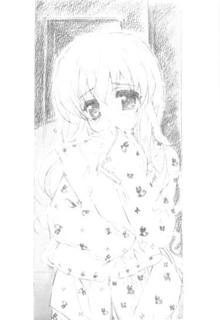
何だか、話がループしているような気がする。
怪訝な表情になる俺に、
「ま、真っ暗なところって、一人でいると何だか寂しくなってきませんか？」
「え？」
「な、なってきますよね？」
必死な顔で訴えかけてくる春香。
そこでようやく気付いた。
「もしかして......」
......一人で寝るのが怖いのか？
春香の顔を見ると。
「......（こくこく）」
無言で首を縦に振っていた。振りまくっていた。目には涙まで浮かんでいる。
「い、家だったらいっしょに寝てくれるテディ・ベアのキング・グリズリーくんがいますし、葉月さんたちが部屋の周りを巡回してくれているから、怖くないんです。で、でも今日は......」
「......」
まあ確かにここにキング・グリズリーくんとやらはいないが。というか、そのネーミングセンスはいくらなんでもどうかと思う。
春香は俺の顔をじっと見上げると。
「だ、だからその、私もここで寝ちゃダメでしょうか？」
潤んだ目で、そう言った。
いや、確かに今の話からするとそういう結論になるんだろうがな......
「だ、ダメですか？」
「う......」
「ご、ご迷惑はおかけしないつもりです。なのでどうかお傍に......」
「ぐ......」
すがるような目。そんな目で見られると、こっちとしても断るに断れない。
「......分かった」
「え？」
「分かった。それで、いい」
まあ──しかたない、か。本来ならルコか由香里さんと寝てもらうところだが、あの状態（泥酔）じゃ今日はどう考えてムリだし、葉月さんも巡回とやらに出てしまっている。消去法でいくと、俺しか残らない。──と、自分に言い聞かせた。
「あ、ありがとうございますっ」
春香が顔をぱっと輝かせた。
「あー、じゃあ布団を持ってくる。ちょっと待っててくれ」
和室から布団を持ってきて部屋の床に敷く。
その中にちょこちょこと春香が入り込むのを確認して、俺は言った。
「んじゃ、電気消すぞ？」
「あ、はい」
電気を消すと、部屋の中は一気に真っ暗になった。同時に沈黙のカーテンもばさりと降りる。うーむ、こういう時って、いったいどういうことを話すべきなんだ？いやそもそも何かを話すべきなのかそれとも黙って寝るべきなのか？こんな青春なシチュエーション（夜中に自分の部屋で女の子と二人きり）なんて初めてで、全く分からん。
「裕人さん」
と、春香の布団から小さな声が響いた。
「ん？」
「あ、あの、よろしければなんですけれど」
少し恥ずかしがるような声音。
「え、えと......手を繋いでもらえませんか？」
「へ......」
思わずマヌケな声が口から出た。
今、春香は何て言った。手を繋ぐ......シェイクハンズ？ってそれは握手か。
あまりに突然の申し出だったため、シナプスがすぐには情報を伝達してくれなかった。
それを春香は拒否と受け取ったのか。
「あ、その、ダメならいいんです。な、何となくそんなことを思っただけなので......」
「え、いや......」
「ご、ごめんなさい、変なことを言って......」
タオルケットを被ってわたわたと慌てる。そんな春香に。
「ん」
俺は、黙って手を差し出した。
「え？」
「手──繋ぐんだろ？」
「あ、は、はいっ」
差し出した手を、控えめに握ってくる。
その手は──微かに震えていた。
何だかんだで、春香も心細かったんだろうな。
父親とのケンカ、家出。どれも春香にとっては大変なことだったんだろう。美夏の話じゃ、春香が親父さんに反抗したのはこれが初めてだってことだし。
「......春香」
柔らかな手を握り返す。
ちょっと迷ったが、俺は口を開いた。
「あー、あのさ」
「......」
「──俺は、何があっても春香の味方だからな」
「......」
「......」
無言。
春香からの返事は戻ってこない。
あー、マズイ。これはかなりハズしたか。恥ずかしさと後悔に身悶えながらちらりと春香の方を見ると。
「......す～......す～......（熟睡）」
春香は寝ていた。
すでにぐっすりとお休みだった。
「......」
遠くで、あおーんという犬の鳴き声が聞こえた。
......いや。
......いいんだけどさ。
３
翌朝。
辺りを漂ういい匂いで、俺は目を覚ました。
何かを焼いているような香ばしい匂いと、味噌汁の匂い。
「ん......」
何だ？
この家には基本的に俺以外に料理を作れる人間はいない。ルコは真顔で生卵を電子レンジに放り込むようなレベルだし、そもそも両親は年に一度帰ってくるかこないかだ。台所に立っている姿など、正月くらいしか見たことがない。
ゆえにこの家で俺が起き抜けに料理の匂いを嗅ぐなんてのは、普通だったらまずあり得ないことなのである。
不思議に思った俺は部屋を出て階段を下り。
いまだ昨晩の酔っ払い二人が死体のように転がる居間を抜け。
台所へと向かった。
するとそこには──
「あ、裕人さん、おはようございます」
「は、春香......？」
エプロン姿の春香が、おタマ片手に笑顔で立っていた。
「今、ちょうど朝ご飯を作っていたところなんです。もうすぐできますから、待っていてくださいね」
「......」
そのどこぞの新妻のような姿＆台詞に、思わずくらっときた。ていうか、かなりツボだった。
「もういくつかはできているんですけれど、まだ時間が少しかかるものもあって──。あ、よろしかったら味見をしてもらえませんか？」
「ん、ああ」
「ありがとうございます。これなんですけど......」
春香が作っていたのは野菜スープだった。
ニンジン、大根、タマネギ、ジャガイモ、その他もろもろの野菜を、ブイヨンベースで煮込み、塩、コショウで味を調えたもののようだ。
一見すると、よくある何の変哲もない野菜スープ。
だが。
「うまい......」
めちゃくちゃうまかった。
見た目こそただの野菜スープだが、中身は極上のコンソメである。ヒツジの皮を被ったオオカミとはこういうことを言うんだろうか（かなり違う）。
「ありがとうございます。隠し味をいくつか加えてるんですよ」
「隠し味？」
「はい。でもレシピは秘密です」
ちょっとイタズラっぽく春香が言った。
いや──でもほんとにうまいな、コレ。店とかで売り出せば十分に金が取れるレベルである。......と、そこで思い出した。そういえば春香、料理の腕もプロ級なんだっけか。すでに調理師免状を持っていて、フランスの有名な批評家に五つ星をもらったとか何とか。
「......」
改めて、春香の完璧超人っぷりを再確認させられた気がした。
そんな俺の目の前で、春香は目にも留まらぬスピードで包丁を動かしている。
「あー、何か手伝えることはあるか？」
ただ待っているのも何となく気が引けたためそう訊くと。
「あ、だったら、できているお料理を居間の方へ運んでもらえますか。ちょっと手が放せなくて、すみません」
「おっけ」
言われた通りに、野菜スープを初めとする料理を運んでいく。
「むう......何かいい匂いが......」
「お腹空いた～......」
匂いに釣られて、酔っ払い二人も覚醒を始めたみたいだった。墓から出たばかりのゾンビみたいな様相でふらふらと起き上がり、テーブルに並べられた（俺が並べた）料理を目にすると。
「おお、これは！」
「うわ、すごい」
二人揃って子供みたいな歓声を上げた。
「あ、ちょっと待てって」
「ばくばく、ばくばく......」
「がつがつ、がつがつ......」
よっぽど腹が減っていたのか、飢えたイノシシのごとき勢いで手当たり次第に料理に手を付けていく。とてもあれだけ飲んだ翌日とは思えない、恐ろしいばかりの食欲である。やっぱこの二人、ヒトとして何かが間違っている気がしてならない。
「......ただいま戻りました」
と、かちゃりと居間のドアが開き、メイド長さんが姿を現した。
「あ、葉月さん」
「裕人様、ルコ様、由香里様、おはようございます」
俺たちの姿を目に留めると、斜め四十五度という絶妙の角度で頭を下げ、挨拶をした。
その顔はいつもと変わらない無表情だが、どことなく眠そうにも見えた。この人、もしかして......
「......もしかして、ずっと巡回をしてたんですか？」
「はい」
こともなげに葉月さんは答えた。「今回は、替わりの者がいませんでしたので」
「......」
てことは葉月さん、一晩中その格好でここら近所を歩いて回ってたのか。うーむ、『吃驚！夜中に近所を徘徊するメイドさんの霊!!』とかの心霊談になってなきゃいいが。
「......裕人様、つきましてはそのことで少しご報告があるのですが」
葉月さんが、音もなく滑るように近づいてきた。
「？ 何ですか？」
「......はい。実は巡回中に何度か怪しい気配を感じまして......」
「怪しい気配？」
「はい」
「それって......」
変質者とか、そういうのがこの辺をうろうろしてるってことか？
だが葉月さんは首を振り、
「いえ、違うと思います。おそらくあれは黒──」
何かを言いかけたその時だった。
じりんじりんとやかましく鳴る電話の音が飛び込んできた。
「おい、裕人、さっさと出ろ。食事中に無粋だ」
「う～る～さ～い～」
ルコと由香里さんが即座に不平をたれる。いやお前らの方が電話に近いんだから自分で出ればいいだろ......との言葉をぐっと堪え（言ったって赤兎馬の耳に念仏だろうし）、
「ちょっとすみません......」
俺は葉月さんにことわり、俺は廊下に出た。だれだ、こんな朝から？
「はい、もしもし──」
「おに～さん、大変だよ！」
受話器を耳に当てるなり響いてきたのは、美夏の声だった。
「み、美夏？」
「大変、大変なんだよ、おに～さん！」
「大変って何が......」
「とにかく大変なの！」
「......」
なんか、昨日の会話と同じ展開だった。
「......焦るのは分かるけど、ちょっと落ち着けって。いいから深呼吸しろ」
「あ、う、うん。ふっふっ、は～......ふっふっ、は～......」
「それ深呼吸と違う......」
「え、そ、そう？」
少なくともニホンネコとイリオモテヤマネコくらいには違うものである。
ともあれ、今の（ラマーズ法？）で美夏は少し落ち着いてくれたようだった（それもどうかと思うが）。
「で、大変って、いったい何が大変なんだ？」
「あのさ、そっちにまだ、お姉ちゃんいるよね？」
「ああ、いるけどそれが......」
「バレちゃった！」
「は？」
「だから、お父さんに、おに～さんの家がバレたの！今日いっぱいくらいはだいじょぶかって見てたんだけど......思ったよりも密偵たちの能力が高かったみたい。もしかしたら帰り道からおに～さんのこと尾行てたのかもしれないし......。──とにかく、さっき何人か連れて屋敷を出たから、もうそっちに着く頃かも......」
「ちょっと待て、それってどういう──」
くっくどぅ～どぅ～どぅ～～～～～～～～。
言葉の途中で、洋物ニワトリ声が玄関に響き渡った。
続いて、ノブの横からぎゅるぎゅると小型ドリルが差し込まれたかと思うと、その穴から侵入してきた何か器具のようなモノが、内側からカギをかちりと開く。
そして。
「失礼する！」
警察の強行突撃班のような勢いで、ドアの向こうから春香父──乃木坂玄冬氏が飛び込んできた。
「呼び鈴を鳴らしたが、返事がないようなので勝手に入らせてもらった！責任者を出してもらおうか！」
背後に、ターミネーターみたいにいかつい黒服サングラスを六人ほど控えさせて、春香父が大声で怒鳴る。
「返事がないって......」
鳴らしてから入ってくるまで三秒も経ってなかっただろ。おまけに明らかにサムターン回し（犯罪）をやってた気がするんだが......。
「む、貴様は......」
お父様がぎろりとこっちを睨む。なんかもう、最初から貴様呼ばわりである。
「うわ、もう着いちゃったの!? 何でそんな早く......って、そっか、ヘリを使えばそれくらいで......」
受話器の向こうで美夏がそんなことを言っているが、俺の耳にはもう半分くらいしか聞こえていなかった。
「と、とにかく一分一秒でも時間を稼いどいて！こっちもできる限り何とかしてみるから！」
そう言って、通話は切れた。
「あ、おい、美夏......」
いやこの状況で時間を稼げと言われてもかなり困る。というか俺にどうしろと？
受話器を手に呆然としていると。
「──春香はどこだ？」
春香父が三和土を乗り越えものすごい形相で迫ってきた。その額にぶっとい青筋を浮かべながら、俺の襟首を掴み上げる。
「......ここにいることはすでに調べはついている。今すぐに春香をこの場に出せ。......それが聞けんというのなら、こちらとしても実力行使に出させてもらうぞ！」
「ぐ......」
襟首にかかる力が強くなる。
何とか引き剥がそうとするが、その丸太のような腕は俺ごときの力じゃびくともしない。
く......これは実力行使のうちに入らないってのか？
それでも何とかしようと俺がじたばたともがいていると。
「──そこ、何をやっている？」
「ル、ルコ......」
騒ぎを聞きつけたのか、居間からルコが出て来た。
「......む」
ルコは春香父と黒服を目に留めると。
「......何だお前らは？ 他人の家に土足で上がりこむとは穏やかじゃないな」
鋭くそう言い放った。
「おまけにお前が掴みかかっているのは私の弟だ。......無礼という言葉を知っているか？」
「ふん、知らぬな、そんな言葉」
「ほう......」
ルコの目がすっとすぼまる。
何かを感じ取ったのか、それまで春香父の後ろに控えているだけだった黒服たちが、音もなく前に出た。
何やら一触即発の空気。
そんな中、遅れて由香里さんと葉月さんも姿を現した。
「うわ、なんかやばいことになってない？ 何なのこれ？どっかの組関係者？」
「玄冬様......」
対峙する春香父と俺たちを見比べて、二人がその場に立ち尽くす。
そして──
「お、お父様......」
その後ろには、調理途中で様子を見に来たのか、フライパン片手（中にはアサリのパスタ）でエプロン姿の春香がいた。
「お父様、どうしてここに......。い、いえ、それより裕人さんに何をやっているんですかっ」
「おお春香、やはりここにいたのか」
春香（アサリのパスタ入リフライパン付き）が現れた途端、ぱっと春香父の手が離された。
「裕人さん！」
「ずいぶんと探したぞ。さあ、こっちに来るんだ」
床に落ちた俺にはもう目もくれずに、春香父が春香（アサリのパスタ入リフライパン付き）に向かって腕を広げた。
「迎えに来た。さあ、私といっしょに来るんだ。屋敷に戻るぞ」
「え......」
「昨日のことならもう気にしておらん。お前も反省しているようなら、私とてこれ以上は責めはしない。あれは一時の気の迷いなのだろう？あんなものにお前が心を惹かれるはずがない」
「──っ」
春香父が『あんなもの』と言ったところで、春香の顔色が変わった。
「ほら、だからさっさと帰るぞ。昨日はピアノの練習もしていないだろう。一日休めば取り戻すのに一週間はかかる。それに今日は華道の稽古もあろう。こんなところで時間を浪費しているヒマはない」
「......」
「いつまでも子供じみた意地を張るのはやめろ。いつもの素直なお前に戻るんだ」
「......」
「春香！」
苛立ちの声を上げる春香父。
だがそれに対して春香は。
「......イヤです」
はっきりと、そう言い返した。
「......なに？」
「イヤです。私──私、帰りません。帰りたくありません。お父様は気にしていなくても......私はそうじゃない。だって私は......自分が悪いとは、思っていません！」
「......なんだと？」
「......お父様は全然分かっていない。私は『あんなもの』が好きなんです！『はにかみトライアングル』が好きで、『ドジっ娘アキちゃん』が好きで、そして、『イノセント・スマイル』が大好きなんです！」
俺の手を強く握り、そう叫ぶ春香。
「は、春香、お前は何を言って──」
「それは一時の気の迷いなんかじゃ──絶対にありません。だからお父様がそれを否定する限り......私もお父様の言うことは聞けないです！」
「な......」
普段は大人しい小動物（ハムスターとか）が見せる威嚇行動のようなその様子に、しばらく春香父は呆然としていたが。
「......私は、認めんぞ」
やがて、うめくようにそう言った。
「......あんな低俗な趣味は認めない。だいたい何だ、あんなアニメだのマンガだのは、子供が見るものだろう。お前はそんなものに執着する娘じゃなかったはずだ。──やはり、そいつに誑かされたのか？そうか、そうなんだな？おのれこの下郎が......」
ちなみに説明するまでもないが、『そいつ』、『下郎』とは俺のことである。
「お父様......」
あくまでも自分の主張を認めようとしない父を前にして、春香の顔はどんどんと曇っていった。
そりゃあそうだろう。春香にとってあの趣味は、昨日今日に始まったものじゃない。小学生の頃──それこそ十年近く前から心の支えとしてきたもののはずだ。
『私、落ち込んだりイヤなことがあったりした時には、いつもこれを見ることで自分を励ましてきました』
『この本は私にとって特別なんです。とてもとても大事な、私の宝物です』
少し前、春香が『イノセント・スマイル』創刊号を見せてくれた時に言っていた言葉である。あの時の春香の顔は、本当に真摯で真剣なものだった。
春香は自分の趣味を大事に思っている。
心から、大切に思っている。
それを無下に否定されて、へこまないわけがないな。
だけどそんな春香の思いは、興奮する春香父にはまったく届いていないようだった。その言葉はどんどんと辛辣になっていく。
それを聞く春香の悲しそうな顔。
その顔を見てたら──なんか、だんだん腹が立ってきた。
いや俺がそんなことを言える立場じゃないことは充分に分かってるさ。実際のところ、俺は確かに春香父が言うように春香をアキバ系に引き込んだ直接原因なわけだし、その後も春香を肯定して、色々と手助けをしてきたのも俺だ。それは事実である。
それに突き詰めればこれは家族の問題だ。何だかんだいっても他人である俺は、軽々しく何かを言える立場じゃない。ああ。そんなことはよーく分かってる。
でもな。
「──そんなに、ダメなもんなんですか？」
気が付いたら、俺は口に出していた。
「......何だと？」
「......春香の趣味、そこまでして否定するようなもんなんですか？そんなに良くないもんなんですか？」
でもな......俺はあの時に決めたんだよ。ほんの一ヶ月くらい前、春香が部屋に引きこもって泣いているのを見たあの時に、これだけは心に決めた。
春香の泣き顔はもう見たくない。
そのためになら。
どんな時でも。
どんな場所でも。
どんな状況でも。
──俺だけは、絶対に春香の味方になるってな。
「ゆ、裕人さん......」
「どうなんですか？ 答えてください、そんなに春香の趣味は──」
「当たり前だ」
だが春香父は即答した。
「あのような低俗で下劣な趣味、乃木坂家の長女としてふさわしくない。そんなこと、普通に考えれば分かるだろう。だいたいアニメだかマンガだか知らんが、あんな何の生産性もなければ創造性もないもの、そもそも趣味とは呼ぶのもおこがましい。違うか？」
「低俗で、下劣......」
春香の身体がさらに強張るのを感じた。......この人も、とことんアキバ系に偏見を持ってるんだな。
震える春香の手を握り返し、俺は言った。
「何で、低俗で下劣だって、言い切れるんですか？」
「なに？」
「実際、あんたは春香の趣味の何を知っているっていうんですか？春香がどうしてそれを好きになって、どんな気持ちでそれを好きでいるかを、考えたことはあるんですか？」
春香のアキバ系への思い。それを知らずに、知ろうともせずに......その外面だけを見て完全否定をするのは、あまりにも勝手なんじゃないのか？
「春香が趣味にかける気持ちは、他の人が他の趣味にかける気持ちと何も違わない。ひたむきで一生懸命で真剣で......なのにどうして、それだけは認められずに、低俗で下劣ってことになるんですか？」
「ぐ......」
「そんなの、おかしいじゃないですか！」
春香父が言葉に詰まる。
「う、うるさい！ 子供が知ったような口を利くな！貴様ごときに何が分かる、何が分かるというんだ！」
「......」
「──とにかく、春香は連れて帰る！もう御託はいい。いいからお前らはそこをどけ！邪魔をするようなら少々痛い目を見てもらうことになるぞ。......黒犬！」
春香父が怒鳴り、同時に黒服たちが円を描くようにしてゆっくりと間合いを詰め始めた。
やばい、これがホントの実力行使ってやつか!?
「ふん、やる気みたいだな」
「春香様、裕人様、お下がりください」
ルコと葉月さんが戦闘態勢をとって前に出る。
それを見た黒服が俺たちに向かって手を伸ばそうとしたまさにその瞬間。
「は～い、そこまでっ！」
どこか舌ったらずな声が、玄関口に響き渡った。
「はい、お父さんもお姉ちゃんもみんなも、とりあえずいったん落ち着く。び～くわいえっと」
緊張感の欠片も断片もない、どこまでも能天気な声。
その場にいた全ての人間の視線が集中した先には......場違いな明るい笑みを浮かべる美夏（傍らに那波さん）の姿があった。
「み、美夏......」
「あ、おに～さん、やっほ～。ぎりぎりで間に合ったみたいだね。ん～、わざわざ空港まで迎えに行ってきた甲斐があったよ～。よかったよかった」
ぶんぶんとこっちに向かって手を振る美夏。いやせっかく急いで駆けつけてくれたところ悪いが、今さら美夏が来たくらいでこの状況（爆発寸前）が変わるとはとても思えんのだが......
「美夏......何のつもりだ？」
「ん～？」
「......何をしに、こんなところまで来た？」
春香父が戸惑ったような表情で問う。
「何って、そんなの決まってるじゃん。お父さんを止めに来たんだよ。どうせこういうことになってると思ったから」
「私を......止める？」
その言葉に、春香父は間違ってネコのエサを食べてしまったイヌみたいな顔をした。
「──何の冗談だか知らんが、お前は下がっていなさい、これは子供の遊びじゃない」
「え～、何で～」
「何でもなにもない。とにかくお前の出る幕じゃ──」
「──下がるのは、あなたの方だと思いますけれど？」
言いかけた言葉は、美夏たちの後ろから聞こえてきた穏やかな声に遮られた。
「どう考えても、理屈ではあなたの方が分が悪いと、私は思いますよ」
「お、お前......何でここに」
驚愕の表情で声がした方向を見る春香父。
その視線の先には......なんか、春香にそっくりな女の人が立っていた。何だ、だれだ、あれ？女の人は、俺を見るとにっこりと笑いかけてきた。
「こんにちは。ええと、あなたが裕人さんね。いつも春香や美夏によくしてくれているって聞いています。どうもありがとう」
「あ、いえ、こちらこそ」
女の人の和やかな雰囲気に、状況も忘れてつい呑気に挨拶を返してしまう。
「......あの、春香のお姉さんですか？」
春香たちに姉がいたなんて話は聞いたことないが、とりあえず当てはまりそうな人物としてはそれくらいしかいない。あるいは従姉妹とか。
「あらあら、ありがとう。うふふ」
俺の質問に春香そっくりの女の人は上品に笑い、そして。
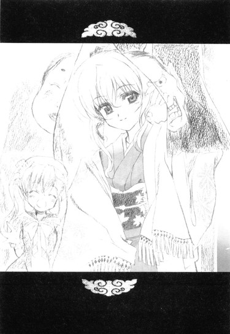
「はじめまして。わたくし、乃木坂秋穂と申します。そこにいる春香と美夏の母です」
そう、言った。
「──は？」
「以後、お見知りおきをお願いしますね、裕人さん」
一瞬、何言ってんだか分からなかった。
......
............
..................ハハ？
..................ハハって──母ぁ!?
「はい」
目の前のお姉さん──春香母がにこやかにうなずく。
「そ、そんな......」
どう見たって二十歳かそれくらいにしか見えないぞ？
「ん～、お母さん、童顔だから」
いつの間にか俺の隣にやって来た美夏が笑う。いやこれはもう童顔とかそういうレベルじゃない気がするんだが......
「さて──あなた」
呆然というかほとんど愕然とする俺の隣で、春香母──秋穂さんが春香父の方へと向き直った。
「あ、秋穂......」
「いいかげん、認めてあげたらどうですか？正当性はどう見ても春香たちの方にあると思いますよ」
「う、うるさい、お前は余計なことを──」
「......余計なこと？」
秋穂さんの周囲の温度が、すっと下がったように思えた。
「春香は私の娘です。その私が春香のことを気にするのは当然のことだと思いますけど。......違いますか？」
「い、いや、それはその通り......だ」
その静かだけどどこか有無を言わせない雰囲気に、春香父は明らかに気圧されているように見えた。ヘビに睨まれたカエルならぬ、マングースに睨まれたキングコブラって感じだ。
秋穂さんは続ける。
「あなただって、心の中ではもう分かってらっしゃるのでしょう。春香の方が、裕人さんの仰ったことの方が正しいと」
「う、ぐ、それは......」
「信じてあげましょう。私には〝あにめ〟や〝まんが〟等のことはよく分かりませんけれど、それでも春香が自分で選んだモノ、初めて自分からやり始めたモノです。私たちがそれを信じてあげなくてどうするのですか？」
「......そ、そんなこと、お前に言われなくても分かっている」
「あらあら、それならよろしいのですけど」
「ぐ......」
にこやかに微笑む秋穂さん。
──勝負あり、だ。
登場から僅か五分で、あの春香父を完全に沈黙させてしまっていた。
「ね、だから言ったでしょ。無敵の最終兵器を連れてくるって」
「......確かに」
こりゃ無敵だ。春香父相手に、これ以上に頼りになる人もいまい。
「さて、それでは私たちはこれで戻るとしましょう。お騒がせしてごめんなさいね。──あ、そうそう、春香」
「は、はい」
「あなたも、夜までには一度お屋敷に戻ってきてね。久しぶりに会えたのだから、色々と話したいことがあるの。──そう、あなたが初めて夢中になったことの話とか、ね」
なぜかちらりと俺の方を見て、ぱちりとウインク。
それを見た春香が、恥ずかしそうにこっくりとうなずいた。
「うん、じゃ、また後でね。──裕人さんもごきげんよう」
そう柔らかく言うと、秋穂さんはのんびりと去っていった。うーむ、すごい人だったな。
「......色々と騒がせたな」
残った春香父が、俺たちに向かって頭を下げた。
「そのことについては、謝罪しよう。確かに私も頭に多少血が昇っていたし、大人気ないところもあった。キミたちへの暴言も、悪かったと思っている」
「あ、いえ......」
ついさっきまで怒り狂った阿修羅みたいだった人に、いきなりこんな神妙になられると拍子が抜ける。
「こちらこそスミマセンでした。その、俺も言い過ぎましたし......」
「......気にしておらん」
「......」
その割には、顔がすげえ怖いんですが。
「......これは地だ」
......そ、そうなんだ。
「では私も屋敷へと戻る。──お前たちも、行くぞ」
春香父の声とともに、黒服たちはこちらに向けて目礼すると、軍隊のように規則正しく動き出した。
春香父を先頭にずらりと並んだ黒服。......客観的に見たら、間違いなくマフィアのボスとそのファミリーのお通りといった感じである。
「──ああ、そうだ」
玄関から出て行く前に、春香父は一度振り返り、俺の目をじっと見た。
「な、何か？」
「うむ、これだけは言っておこうと思ってな。私もこれまで色々な人間と接してきたが......私に、あんな風に正面から自分の意見を言った者は、キミが初めてだ」
「え、はあ......」
「今時の高校生など取るに足らん軟弱者ばかりだと思っていたが......ふっ、なかなかいるところにはいるものだな。綾瀬裕人、か。その名前、覚えておくぞ」
さらばだ、と言い残し、春香父は今度こそ振り返ることなく、道路のど真ん中に着陸させてあったあった軍用ヘリ（しかもミサイル付き......）に乗り込んでいった。
......最後まで、色んな意味でコワイ人だった。
「良かったね。おに～さん、お父さんに気に入られたみたいだよ」
美夏が能天気に笑う。
「お母さんは最初からおっけ～だし、残る関門はお祖父ちゃんくらいかな？これでまた一歩、お義兄さんへの距離が近づいたね♪」
「......」
色々と突っ込みたいことはあるが、今は非常に疲れた気分なので後回しにしよう。
「......ふう」
何にせよ、これで終わりだ。
昨日から立て続けに起きた様々なイベント＆トラブル（夏こみ、家出、お泊まり、襲撃）で息をつくヒマもなかったが、これでようやくゆっくりと休める。
と、思ったのだが。
「......ん、そういえば美夏たちは何でまだここに？帰らないのか？」
てっきり、春香父たちといっしょに行くものかと思ったんだが。
すると美夏は。
「ん、帰んないよ？ だってこれからおに～さんの家に泊まるんだし」
「......は？」
「だってお姉ちゃんたちばっかりズルイじゃん。わたしたちだって、お泊まり会したいもん。ね、那波さん」
「はい」
にっこりとうなずくメイドさん。「ズルイです～」
「いや、でもそう言ってもこっちにも都合が......」
「ウチなら構わんぞ。そこのチビっ子たちも乃木坂さんの関係者なのだろう？ならば私に異論はない」
「もちろん私もおっけ～よ」
ルコと由香里さんがそんなことを言う。
その横で春香が。
「私たちは夜にはお屋敷に一度戻りますので、美夏たちのことをよろしくお願いしますね」
と、付け加えた。笑顔で。
「んじゃ、決まりだね、おに～さん」
「お世話になります～」
「うむ、入るがいい。また今晩も鍋にしよう」
「お鍋お鍋～♪」
「......」
......どうやら。
俺がゆっくりと休めるのは、まだまだだいぶ先のことらしい。
エピローグ
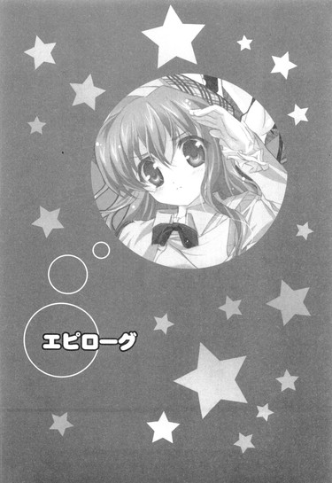
夏休みの最終日。
俺は春香の部屋にいた。
「......」
「......」
「......」
「どうしたんですか、裕人さん？ そんなにきょろきょろとして」
「......いや、ずいぶん変わったなと思って」
周りを見渡す。
相変わらずバカみたいに広い部屋。中心に置かれた巨大なグランドピアノと天蓋付きのべッドこそ以前と変わらないものの、その周辺状況は大きく変わっていた。
壁に貼られたポスター。ピアノの上に置かれた蒼髪少女のフィギュア。本棚には『イノセント・スマイル』のバックナンバーやコミックなどがずらりと並んでいる。
「......」
色んな意味で、すっかりカラフルな部屋になっていた。
いやまあこれもこれで春香の部屋らしいっちゃらしいんだが。
そしてベッド脇のサイドボードの上には......なんか、どでかい宝箱のようなモノがどん！と置かれていた。まるでゲームや映画に出て来るような鍵穴付きの立派な宝箱。一般家庭ではまずお目にかかれない代物である。
「......春香、アレは？」
部屋に現れ始めたアキバ系グッズとは、また別の意味で浮いている一品。現代芸術の最先端を行くオブジェかなんかなんだろうか。気になって訊いてみると。
「え、宝箱ですが......」
との答えが返ってきた。
というか、まんまだった。
「えと、あの中には、特にお気に入りなモノが入っているんです。『ねこばすてい』の本も入っていますし、アキハバラで買っていただいた〝はにトラポーズ〟のふぃぎゅあも入っています。もちろんあの時の思い出の『イノセント・スマイル』も......」
「......」
つまりは文字通りアキバ系グッズの宝庫ってわけか。
しかし本当に変わったな、この部屋──
あの日──春香父がウチに乗り込んできた日──の夜、乃木坂邸では話し合いが行われたらしい。
参加者は春香、秋穂さん、春香父、葉月さん。
議題はもちろん春香の趣味（アキバ系）の現状と今後のことについてである（ちなみに美夏と那波さんはその頃、ウチではしゃぎながら鍋を食べていたため不参加だった）。
話し合いは、二時間ほどに及んだらしい。
だけど結果は、春香にとって良い方向へと転んだようだった。
話し合いを終えて、葉月さんとともにウチへ戻ってきた春香の最初の言葉。
『やりました裕人さん！ 勝訴ですっ！』
秋穂さんの口添えもあり、春香の趣味は、他の習い事や学業に支障を及ぼさないという条件付きで、ほぼ全面的に認められ
ることとなったらしい。喜ぶ春香の横で、葉月さんがそう淡々と説明をしてくれた。
そしてそれから二週間ほどが経ち。
春香の部屋は、俺が今目の当たりにしているように、カラスアゲハのサナギが成蝶になるがごとき華麗な（？）変貌を遂げたのだった。
「まさか、自分のお部屋にポスターを貼ったり、ふぃぎゅあを置いたりする日が来るなんて、夢にも思いませんでした」
嬉しそうに春香が言う。
「これも裕人さんのおかげです。──本当に、色々とありがとうございました」
「いや俺は別に何も」
ほとんどは秋穂さんのおかげだろう。
「いいえ、それは違います」
春香はふるふると首を振った。
「確かに決定打となったのはお母様の言葉かもしれません。だけど、あの時に裕人さんがお父様に意見をしてくださらなかったら......お父様もそう簡単には私のことを認めてくれなかったと思います」
「うーん......」
それはどうだろうね。あの秋穂さんなら、別に俺の言葉なんてなくても、春香父を納得させてしまっていたに違いない。無敵の最終兵器だし。
「──それに、それだけじゃないです」
「え？」
春香が小さくつぶやく。
そして、少しためらうようにしてこう続けた。
「私は裕人さんの言葉が一番嬉しかったです。私のために......言ってくれた言葉が。アレのおかげで、勇気が出たんです」
「なっ......」
「ほんとに、裕人さんは王子様みたい。ロンドンの時もそうだし、私が助けてほしいって思った時にはいつも助けてくれる。──あの、これからも、期待していいですか？」
「え、あ......」
言ってから、春香の顔がかーっと赤くなった。
「あ、わ、私、何を言ってるんだろう。ご、ごめんなさいっ、つい調子に乗って変なことを......」
「い、いや......」
「......」
「......」
そのまま二人して黙り込んでしまう。
「......」
「......」
かちこち......という時計の秒針の音がやたらと大きく耳に響いてくる。
「......」
「......」
どれくらいそうしていただろう。
覚悟を決めて、俺は口を開いた。
「──前に、言っただろ」
「え？」
「俺はいつだって春香の味方だって。だから春香が困ってたら、いつだって助けてやる。もちろんこれからだって──」
「ゆ、裕人さん......」
春香がじっと俺の顔を見る。
あー、何だか俺、春香の前では恥ずかしい台詞ばかり言ってるような気もするな。
〝カタログ露出事件〟の時もそうだし、この前の春香父と相対した時もそうだ。さかのぼれば六年前のあの出会いの時にも、かなり恥ずかしいことを言ってたような覚えがある。
──まあ、でもいいか。
俺が恥ずかしい台詞を言うことで春香が笑ってくれるんなら、それはそれでいい気もする。春香の笑顔に比べれば、俺の恥辱プレイなんてお安いもんだ。
「う、嬉しいです......」
と、そう言う春香の目から涙がぽろぽろとこぼれた。
「は、春香？」
「あ、あれ、どうしてだろ？ 嬉しい時でも、涙って出るものなのでしょうか......？」
「春香......」
俺はそっと春香に近づき、その肩に手をかけようとして──
「あきゃあっ！」
──突然、ガタガタドサリという音が背後で響いた。
「あいたたたた......那波さん、押さないでよ～」
「ですが～、ちょうどいいところだったので～。葉月さんもそう思いますよね？」
「......私は、特に」
ミニマムツインテール娘とにっこりメイドさんがドアの下にころりと転がっていて、それを無口メイド長さんが静かに見下ろしていた。
そしてその後ろには。
「うー、ごほんごほん」
「まあ、青春ですわね。うふふ」
苦虫を百匹くらい噛み潰したような表情の春香父と、穏やかな微笑みを浮かべる秋穂さん。
「............」
つまりこの人たち、さっきからずっとドアの向こうで俺たちの会話を聞いていたと？俺の恥ずかしい台詞も？
「ごめんなさいね。盗み聞きをするつもりじゃなかったの。でも何だかとっても良い雰囲気だったから入り辛くて。うふふ」
そう言う秋穂さんの瞳の奥には、イタズラっぽい光が浮かんでいた。表情もどことなく楽しげである。......美夏の性格がだれの遺伝なのか、少しだけ分かったような気がするな。
「......勘違いしないでくれたまえ」
こっちは春香父。
「確かに私は春香の趣味を認めた。そしてそれを後押ししたキミのことも少しは認めている。......だがな、キミたちの交際まで認めたわけではないのだぞ。クラスメイトとして春香と接するのならば大目にも見よう。だが交際となればまた話は別で──」
「も～、またお父さんはすぐそうゆうこと言う～。こないだはおに～さんのことすごく褒めてたクセに」
起き上がった美夏が頬を膨らませた。
「ぬ、いやあれは......」
「わたし知ってるんだからね～。家でお酒飲みながらお母さんといっしょにおに～さんのこと褒めてたこと」
「う、ぐ......」
言葉に詰まる春香父。なんか思ったよりも家族内ヒエラルキーが低そうである（......俺と同類？）。
あーだこーだと言い合う春香父と美夏の隣で、
「こういう素直じゃない人ですけれど......」
秋穂さんがふんわりと笑い、ぺこりと頭を下げた。
「私ともども、これからもよろしくお願いしますね、裕人さん」
「あ、はい、こちらこそ秋穂さん」
「──あ、そうそう」
そこで秋穂さんは、何かに気付いたかのように顔を傾け。
「私のことは〝お義母さん〟と呼んでくださって結構ですから」
そう言って、再びにっこりと笑ったのだった。
最後の台詞の中に少しばかりあり得ない響きが聞こえたような気がしたのは俺の気のせいだろうか。気のせいってことにしておこう。
まあこうして。
色々と（本当に色々）あったが。
俺たちの夏休みは、無事に終わりを迎えたのだった。
あとがき
こんにちは、五十嵐雄策です。
おかげさまで、二巻を出していただけることとなりました。
本書の第一話は「電撃ｈｐ」34号、第二話は35号に掲載されたものを加筆修正したもの、第三話、四話、及びプロローグ、エピローグは書き下ろしとなっております。
一巻の時と同様、基本コンセプトは「できる限り読みやすくかつ楽しいお話」です。今回もその試みが少しでも成功していると感じていただければ、私としては嬉しい限りです。
あ、それと今回、初めてファンレターというものをいただきました。
温かい応援の言葉から素敵なイラストまで色々あって、日々の雑事で微妙に疲れた私の心を、野原に咲く一輪の小さな花のように優しく癒してくれました。何だかいまいち分かりにくい比喩でアレですが、やっぱり読んでくださる方たちがいるからこそ自分はこうやってお話を書いていられるんだな～と、心の底から感じた瞬間でした。本当にありがとうございます（ぺこり）。
現在は色々と立て込んでおりまして、今すぐにお返事というわけにはいかないのですが、いずれ何らかの形でお返しができたら──と思っています。
以下はお世話になった方々に感謝の言葉を。
前回に引き続き、様々な面でご面倒をおかけしました担当編集の和田様と三木様。お電話をいただく時の七割が昼寝中という草食動物のような新人ですが、これからもよろしくお願いします。
イラストのしゃあ様。今回はイラスト以外の面でも微妙に色々とお世話になっていたりいなかったり。えっと、何を言っているのかは本編を読んでいただければ分かると思います。ありがとうございました。
また本編でお名前を使わせていただいたサークルの皆様にも、この場を借りて深くお礼を申し上げたいと思います。
そして最後になりますが、何よりもこの本を手に取ってくださった皆様に最大限の感謝を。
それではまた再びお会いできることを願って──
底本：乃木坂春香の秘密②
五十嵐雄策
二〇〇五年六月二十五日 初版発行
入力：海洋深層水
校正：鹿仔
底本１６頁１４行・ｔｘｔ１１０行
底本２５頁３行・ｔｘｔ２０９行
応対：「応対」と「対応」でルビを修正。
底本２１６頁１４行・ｔｘｔ２５１２行
突撃：「突撃」と「突入」でルビを修正。